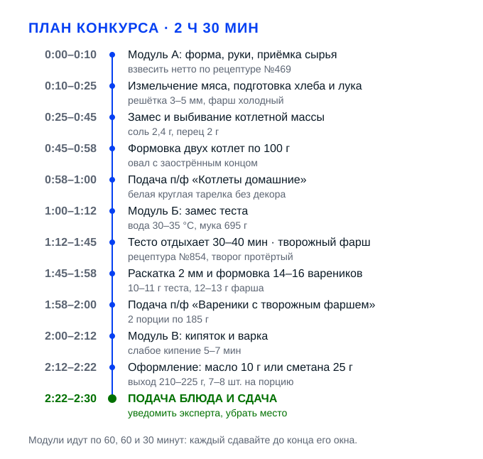
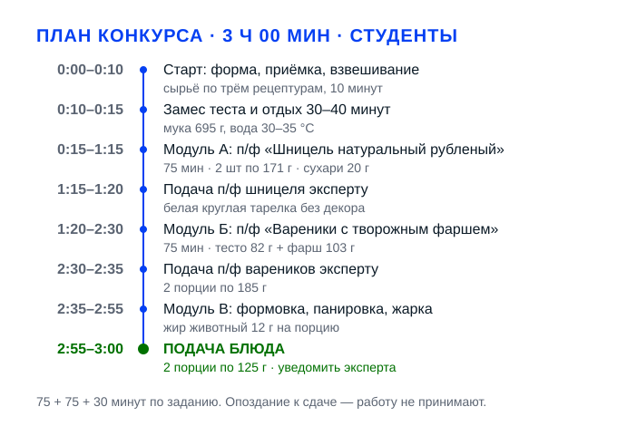
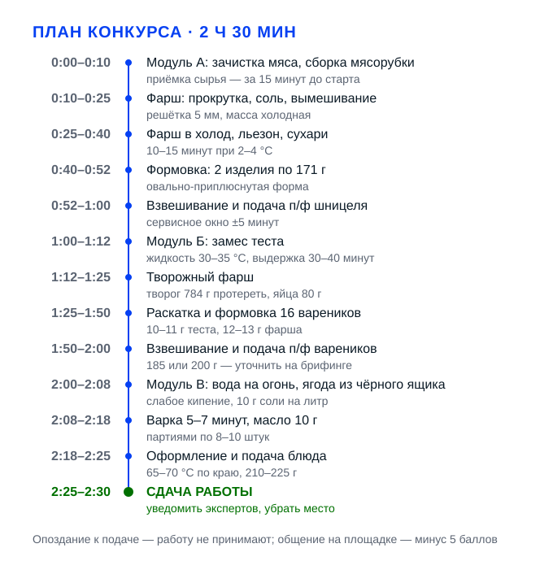

Изготовитель пищевых полуфабрикатов (Р)
Задания ниже — официальные файлы «Абилимпикс» (источник: abilympics-russia.ru), разложенные по категориям. Решения написаны по тексту задания, регламенту и критериям оценки; в них указано, что именно проверяет эксперт.
Школьник
14–16 лет, базовый уровень заданияВыдержка из официального конкурсного задания: страницы, относящиеся к категории «Школьник» (стр. 5–8 источника).
Пошаговое решение
Два с половиной часа, три модуля и три разных результата: полуфабрикат «Котлеты домашние» по рецептуре №469, полуфабрикат «Вареники с творожным фаршем» по рецептурам №766 и №854 и готовое блюдо «Вареники отварные» по №767. Модули идут по 60, 60 и 30 минут, и каждый заканчивается подачей на белой круглой плоской тарелке без декора, а значит, декора в этой работе нет вообще — оценивают форму, массу, шов и температуру. Цифры в задании жёсткие: 100 г на котлету, 185 г на порцию сырых вареников, 210–225 г готового блюда, 10–11 г теста и 12–13 г фарша на штуку, выдержка теста 30–40 минут, варка при слабом кипении 5–7 минут. Решение построено в порядке работы: сначала организация места и приёмка сырья, потом модуль А, затем тесто и фарш модуля Б с формовкой, потом варка и подача, и в конце сверка комплекта с уборкой. Две вещи держите в голове с первой минуты: тесто отдыхает 30–40 минут, и это время отдано творожному фаршу, а каждый модуль нужно успеть сдать до истечения его окна.

Задача 1. Организовать рабочее место и принять сырьёСтарт · организация работы на площадке (оценочный критерий)
До первого замеса у вас должно быть готово всё, что понадобится в трёх модулях: чистая форма, вымытые руки, разложенный по зонам инвентарь и взвешенное до грамма сырьё. В конкурсном задании для школьников организация работы на площадке вынесена отдельным оценочным критерием, то есть эксперт ставит его не за блюдо, а за то, как вы входите в бокс, как обращаетесь с продуктом и как выглядит ваше место к старту. Именно здесь теряется больше всего баллов зря: котлеты и вареники ещё не начаты, а половина впечатления о работе уже сложилась. Дальше все цифры берём из рецептур №469, №766, №854 и №767 — они даны в задании на две порции, и отступать от них нельзя.
Действие 1.1. Войти в бокс и подготовить рабочее место
Шаг 1.1.1
Надеваем полный комплект поварской формы: куртку или фартук с нарукавниками, колпак или косынку, закрытую обувь на нескользящей подошве. Волосы убираем под колпак целиком, включая затылок и виски, длинные пряди дополнительно закалываем. Куртку застёгиваем на все пуговицы, рукава подворачиваем выше локтя: у мясорубки и у кастрюли с кипятком свободный рукав цепляется за ручки и тянет руку в горячую воду.
Форма — первое, что фиксирует эксперт, и оценивается она не «в целом», а по конкретным признакам: чистая, застёгнутая, волосы убраны. По санитарным требованиям к работе с мясным фаршем и творогом участник допускается только в полной спецодежде, поэтому «надену куртку, когда начну лепить» не работает: балл снимается на входе, а время на переодевание уходит из модуля А, где на всё 60 минут.
Попросите волонтёра или соседа посмотреть на вас со спины: волос не видно ни сзади, ни на висках. Куртка не топорщится на плечах, рукава не спускаются ниже локтя, обувь закрытая и сухая. Если в боксе холодно и вы надеваете что-то под куртку, это должно быть полностью заправлено, чтобы не выглядывать из-под борта.
Самая частая ошибка — колпак «на макушку»: спереди всё аккуратно, а сзади волосы выбиваются, и эксперт видит это раньше, чем вы начнёте работать. Вторая — прийти в открытой обуви или в футболке, рассчитывая переодеться после инструктажа: переодевание съедает пять-семь минут из первого модуля, а балл за спецодежду уже потерян.
Эксперт осматривает участника до старта и отмечает полноту комплекта, чистоту и то, убраны ли волосы. Дальше он поглядывает на форму по ходу работы: мука на груди и пятна фарша на рукаве к середине конкурса тоже считаются.
Шаг 1.1.2
Моем руки тёплой водой с мылом до запястий, не меньше двадцати секунд, отдельно проходя большие пальцы, промежутки между пальцами и ногти. Вытираем одноразовым полотенцем и сразу выбрасываем его. Снимаем кольца, часы, браслеты, длинные серьги, проверяем, что ногти коротко подстрижены и без покрытия. Перед формовкой котлет и вареников надеваем перчатки, а меняем их после каждого перехода от сырого мяса к тесту и творогу.
Сырое мясо и сырое яйцо — главные источники бактерий в этом задании, и любое касание теста руками, которые только что были в фарше, переносит их на продукт, который потом варят или подают как полуфабрикат. Правило «сырое — потом готовое» проверяется на конкурсе глазами эксперта, а не лабораторией, поэтому важно, чтобы смену перчаток было видно. Украшения снимаются по той же причине: под кольцом остаются загрязнения, которые мылом не смываются.
Руки сухие, полотенце ушло в мусор, а не легло на стол. На руках нет украшений, ногти короткие. Проверьте себя на переходе: если вы только что формовали котлеты и тянетесь к тесту — перчатки надо сменить, даже если внешне они чистые.
Протереть руки о фартук — типичная ошибка: визуально руки сухие, но фартук стал переносчиком, и это видно. Вторая — мыть руки один раз в начале и считать вопрос закрытым: оценивается процесс в течение всего конкурса, а не стартовое состояние.
Смотрит на руки в начале работы и на каждой смене операции, отдельно отмечает, меняются ли перчатки после мясного фарша и моется ли инвентарь между модулями. Для категории школьников это одна из самых заметных позиций.
Шаг 1.1.3
Разкладываем инвентарь по зонам и проверяем оборудование до старта. Для мяса — отдельная доска и нож с маркировкой «СМ» (сырое мясо), для теста — доска «Т», для творожного фарша — чистая тарелка. Ставим на стол весы, проверяем их нулевое показание и точность на гирьке или на пачке соли известной массы. Собираем мясорубку, проверяем, что решётка и нож сидят плотно, а шнек прокручивается рукой без заеданий.
Раздельные доски и ножи — требование санитарных норм и одновременно условие нормальной скорости: если одна доска служит и для мяса, и для теста, вам придётся мыть её посреди модуля, а это потерянные минуты и мокрый стол. Проверенные весы — не формальность: всё задание построено на массе (100 г на котлету, 185 г на порцию вареников, 10–11 г теста на штуку), и весы, которые врут на три грамма, уводят выход за допуск.
На столе три зоны, и на каждой лежит только своё. Весы показывают ноль с пустой чашей и повторяют показание при вторичном взвешивании одной и той же гирьки. Мясорубка собрана, крепление прижато, подставка под неё не шатается. Плита включается, конфорка греется, кастрюля подобрана по размеру.
Собирать мясорубку в момент, когда фарш уже нарезан, — и обнаружить, что нож затупился и мясо не продавливается, а мнётся в кашу. Вторая ошибка — не проверить весы: расхождение в 5 г на котлете даёт 10 г на двух порциях, и измеримый критерий модуля А провален при идеальной форме изделия.
Проходит по боксу до старта и смотрит, готово ли место: разделочные доски по назначению, весы на столе, инструмент разложен, а не свален кучей. Отдельно отмечает, стоит ли на столе что-то лишнее — задание прямо требует подавать полуфабрикаты на белых круглых плоских тарелках без декора.
Действие 1.2. Принять и взвесить сырьё по рецептуре №469
Шаг 1.2.1
Берём раскладку на две порции и выкладываем продукты на стол в том же порядке, что в таблице: говядина котлетная 98 г брутто и 72 г нетто, свинина 48 и 42 г, жир-сырец 4 г, лук репчатый 4 г, сухари 8 г, яйцо 1/20 (то есть одно яйцо на порцию, два на две), хлеб 26 г, вода 40 г, соль 2,4 г, перец 2 г. Каждую позицию взвешиваем на весах и откладываем в отдельную посуду, отмечая карандашом в списке то, что уже отмерено.
Раскладка в задании дана на две порции, и масса полуфабриката должна выйти ровно 200 г — по 100 г на котлету. Если отвешивать «на глаз», ошибка накапливается: недовес мяса на 10 г и перевес хлеба на 8 г дают рыхлую котлету, которая при формовке расползается, а выход уходит из допуска. Отдельная посуда под каждую позицию нужна, чтобы потом не путать, где жир-сырец, а где лук: на вид они похожи, а роль в массе разная.
Все десять строк списка отмечены, на столе десять отдельных мисок, и в каждой ровно то, что в раскладке. Контрольная сумма мяса: 72 г говядины плюс 42 г свинины плюс 4 г жира равно 118 г. Если сумма не сходится, ищите ошибку сразу, а не в котлетной массе.
Отвесить мясо брутто вместо нетто — самая дорогая ошибка приёмки: 98 г вместо 72 г дают перевес массы на 26 г, и вместо двух котлет по 100 г вы получите две по 113 г, что уже нарушение измеримого критерия. Вторая — ссыпать соль и перец «щепоткой»: 2,4 г соли на две порции это половина чайной ложки без верха, и на глаз такое не отмерить.
Наблюдает, взвешивает ли участник каждую позицию или берёт горстями, и сверяет набор со списком. Отсутствие или замена продукта без обращения к эксперту фиксируется как нарушение технологии, даже если блюдо получилось.
Шаг 1.2.2
Проверяем мясо до измельчения: охлаждённое, температура не выше плюс четырёх градусов, поверхность упругая и слегка влажная, запах свежий, без кислинки. Надавливаем пальцем на кусок — ямка должна выровняться за пару секунд. Жир-сырец смотрим отдельно: он должен быть белым или кремовым, без желтизны и без прогорклого запаха, потому что именно он даёт сочность котлете.
Котлетная масса не проходит тепловую обработку в модуле А: вы сдаёте полуфабрикат, и если мясо было тёплым или несвежим, исправить это уже нельзя. Требование к температуре связано ещё и с технологией: тёплый фарш хуже держит жир, масса становится липкой и при формовке прилипает к рукам и к доске. Замена испорченного продукта возможна только до старта, потом её не будет.
Мясо холодное на ощупь, ямка от пальца выравнивается, запах чистый. Жир белый, без желтизны. Если хотя бы один признак сомнителен, продукт откладываем в сторону и идём к эксперту, а не пускаем в массу «чтобы не пропадало».
Взять мясо, которое «на вид нормальное», не проверив температуру: тёплое мясо в фарше начинает киснуть за час, а модуль Б идёт сразу после модуля А. Вторая ошибка — промолчать про испорченный кусок и замаскировать его специями: на дегустации полуфабриката это читается сразу.
Проверяет сырьё вместе с участником на приёмке и смотрит, умеет ли участник оценивать свежесть словами: температура, запах, упругость. Молчаливое «нормально» без обоснования баллов не добавляет.
Шаг 1.2.3
Готовим три вещи, которые должны настояться до замеса. Хлеб 26 г освобождаем от корки, режем ломтиками и заливаем водой 40 г комнатной температуры, оставляем на 10–15 минут. Лук 4 г рубим очень мелко, лучше натираем на мелкой тёрке: в котлете кусочки лука должны чувствоваться вкусом, а не попадаться кусками. Сухари 8 г растираем в крошку не крупнее 1–2 мм, яйцо разбиваем в отдельную чашку и проверяем, что оно свежее.
Замоченный хлеб — это влага, которая внутри котлеты превращается в пар и не даёт массе высохнуть; сухой хлеб заберёт воду из мяса и котлета выйдет плотной. Норма воды 40 г на две порции не случайна: больше — масса поплывёт и не будет держать форму, меньше — котлета получится сухой. Мелкий лук и мелкая крошка сухарей нужны, чтобы изделие на разрезе было однородным, а не с хрустящими вкраплениями, которые эксперт заметит при оценке текстуры.
Хлеб размок насквозь, но при отжиме в кулаке из него не льётся вода: масса должна быть влажной, не мокрой. Крошка сухарей сыпучая, без крупных кусков, лук натёрт до состояния кашицы. Яйцо в чашке без посторонних включений, желток целый.
Не отжать хлеб — и получить массу, которая липнет к рукам и не формуется: добавлять сухари «чтобы спасти» придётся уже в ущерб рецептуре. Вторая крайность — отжать досуха, тогда котлета выйдет сухой и трескается при формовке. Лук, нарезанный крупно, даёт тёмные пятна и горечь.
Смотрит, как подготовлены компоненты: консистенция размоченного хлеба, размер лука, состояние яйца. Отдельно отмечает, взвешены ли сухари, — их в раскладке всего 8 г, и это та позиция, которую чаще всего берут «на глаз».
Задача 2. Модуль А: котлетная масса и формовка «Котлет домашних»Модуль А · 60 мин · 2 порции по 100 г
Модуль А — это чистый полуфабрикат: котлеты не жарят и не запекают, их формуют и подают на белой круглой плоской тарелке без декора. Значит, всё, за что здесь дают баллы, видно в сыром изделии: держит ли оно форму, одинаковы ли две котлеты по массе и размеру, однородна ли поверхность, читается ли та самая овально-приплюснутая форма с заострённым концом, которая указана в способе приготовления к рецептуре №469. Внутри модуля три последовательных блока: измельчение мяса и подготовка компонентов, замес с выбиванием и формовка с подачей. Времени 60 минут, и его хватает только в том случае, если всё взвешено заранее и мясорубка собрана до старта.
Действие 2.1. Измельчить мясо и жир
Шаг 2.1.1
Нарезаем говядину 72 г нетто и свинину 42 г на куски примерно 3×3×3 см, чтобы они свободно входили в горловину мясорубки. Жир-сырец 4 г режем мельче, чем мясо, — кусочками по 5–7 мм, и держим отдельно. Мясо перед измельчением подсушиваем бумажным полотенцем: лишняя вода на поверхности делает фарш липким и мешает ему продавливаться через решётку. Держим мясо в холоде до самой прокрутки.
Размер кусков влияет на две вещи сразу: на скорость работы и на равномерность фарша. Крупные куски приходится проталкивать толкателем с усилием, шнек забивается, и мясо начинает мяться вместо резания, а смятое мясо даёт клейкую массу, которая плохо держит форму. Жир режут мельче потому, что он должен распределиться по всей массе: крупный кусок жира вытапливается и оставляет пустоту, а на сыром изделии виден светлым пятном.
Куски одинаковые на глаз, мясо сухое и холодное, жир нарезан мелко и лежит отдельно. Проверьте, что на столе нет воды: борта доски и нож сухие, иначе мясо будет скользить и резаться неровно. Сок на доске не должен розоветь лужицей.
Нарезать мясо крупно и давить его толкателем с силой: шнек проворачивается рывками, фарш выходит неравномерным, а часть жил остаётся в виде тянущихся волокон. Вторая ошибка — смолоть жир вместе с мясом в самом начале: он размазывается по стенкам мясорубки, и в массе его оказывается меньше, чем по раскладке.
Обращает внимание на организацию: нарезано ли мясо заранее и одной ли толщины, не течёт ли сок по доске. Для школьников это часть оценки практических навыков — аккуратность на разделке видна сразу.
Шаг 2.1.2
Собираем мясорубку и проверяем решётку: отверстия должны быть 3–5 мм, нож прижат к решётке плотно, гайка затянута до конца. Ставим под лоток миску, чтобы фарш падал в неё, а не на стол. Прокручиваем мясо с жиром один раз, не уплотняя его в горловине: фарш должен выходить ровными жгутами, а не выдавливаться рывками. Если фарш идёт рывками, остановитесь и подтяните гайку: решётка села неплотно.
Одна прокрутка через решётку 3–5 мм даёт ту степень измельчения, при которой котлетная масса держит форму, но остаётся сочной. Слишком мелкий фарш (2 мм) превращается в пасту: котлета на разрезе выглядит как паштет и при формовке расползается. Слишком крупный (8–9 мм) даёт рыхлое изделие, которое разваливается на сковороде у того, кто его потом будет жарить, и это тоже оценивается как дефект полуфабриката.
Фарш однородный по цвету, жир распределён равномерно, в массе нет тянущихся плёнок и кусков. Проверьте рукой: фарш холодный. Если мясорубка греется и фарш тёплый, поставьте миску на несколько минут в холод.
Слабо затянутая гайка — нож не прилегает к решётке, мясо не режется, а мнётся, и в фарше остаются волокна. Вторая ошибка — прокрутить мясо дважды «для нежности»: масса становится слишком плотной и липкой, и котлета после формовки плывёт.
Смотрит на фарш в миске: цвет, однородность, есть ли серые или тёмные участки. Слипшийся, нагретый фарш с блеском — признак того, что мясо мяли, а не рубили.
Действие 2.2. Замесить и выбить котлетную массу
Шаг 2.2.1
Соединяем в широкой миске фарш, отжатый хлеб, мелко натёртый лук 4 г и жир-сырец 4 г. Добавляем соль 2,4 г и перец 2 г, отмеренные на весах. Перемешиваем рукой или лопаткой от центра к краям, поднимая массу снизу вверх, — так она перемешивается равномерно, а не сбивается в ком посередине. Мешаем не дольше двух-трёх минут: масса должна стать однородной, но не начать греться от рук.
Порядок ввода имеет значение: соль вводят до яйца и сухарей, чтобы она успела распределиться по всей массе. Если посолить сверху готовую массу, часть котлеты окажется пересоленной, а часть пресной. Перец 2 г на две порции — это заметная, но не острая нота: он должен чувствоваться, а не жечь, потому что оценивают вкус полуфабриката после контрольной обжарки.
Масса перемешана до однородного цвета, без светлых участков хлеба и тёмных вкраплений лука. На вкус, если эксперт разрешает пробу, масса чуть недосолена — соли «на грани» достаточно, потому что после формовки концентрация не изменится. Крупинки соли не хрустят.
Высыпать соль и перец «по центру» и сразу начать месить: соль собирается в одном месте, и в двух котлетах из одной массы получается разный вкус. Вторая ошибка — ввести слишком много перца, ориентируясь на домашние рецепты: у полуфабриката оценивают именно сбалансированность.
Может взять щепотку массы на пробу и посмотреть, как она держится на ложке. Отмечает, взвешены ли специи: 2,4 г соли — это та цифра, которую невозможно отмерить на глаз.
Шаг 2.2.2
Вводим в массу яйцо и растёртые сухари 8 г. Месим ещё две-три минуты: масса должна стать однородной, слегка липкой и начать отставать от стенок миски. Если фарш тёплый, миску с массой ставим на пять минут в холод или на лёд — котлетная масса не должна быть теплее 12 градусов, иначе жир начинает отделяться. Проверяйте температуру тыльной стороной ладони: масса должна быть заметно прохладной.
Яйцо связывает массу и удерживает влагу: без него котлета при формовке трескается по краю. Сухари забирают избыток влаги от хлеба и лука и работают как каркас, поэтому их вводят в конце, когда видно реальную консистенцию массы: если хлеб был очень мокрым, крошка возьмёт лишнее. Охлаждение нужно потому, что тёплый фарш теряет жир — он выступает на поверхности каплями, и полуфабрикат выглядит жирным и неопрятным.
Масса однородная, на поверхности не блестит от выступившего жира, при сжатии в кулаке не распадается и не липнет к пальцам комом. Скатайте шарик размером с грецкий орех и положите на доску: он должен держать форму и не расползаться за минуту.
Не охладить массу — и получить на поверхности котлеты капли жира и неровный цвет после формовки. Вторая ошибка — добавить сухари «на глаз» больше нормы: масса становится плотной, а котлета после жарки — сухой и жёсткой, что на дегустации читается как нарушение рецептуры.
Трогает массу и смотрит на её поведение: липнет ли к рукам, отделяется ли жир, держит ли шарик форму. Комковатая или слишком тугая масса — признак ошибки во влаге или в крошке сухарей.
Шаг 2.2.3
Выбиваем массу: берём её рукой или лопаткой и с усилием бросаем обратно в миску 15–20 раз, поворачивая миску после каждого броска. Масса при этом становится плотнее, светлеет и перестаёт тянуться за рукой. После выбивания дайте ей отдохнуть пять минут под плёнкой, чтобы хлеб равномерно распределил влагу. Бросаем с высоты 20–25 см, чтобы удар был ощутимым, но масса не разлеталась по столу.
Выбивание разрушает крупные воздушные полости и делает структуру плотной: именно поэтому котлета держит форму при формовке и не разваливается при жарке у того, кто её возьмёт. Отдых после выбивания нужен, чтобы хлеб «дошёл» — сразу после замеса масса ещё неоднородна по влажности, и котлета, сформованная немедленно, может дать трещину по краю при остывании.
Масса стала плотнее на ощупь, не тянется за пальцем, при разрезе ножом срез ровный и блестящий, без крупных пор. После отдыха на поверхности не появилось лужицы воды или жира. Масса не должна пахнуть луком резко: запах должен быть ровным, мясным.
Пропустить выбивание: масса остаётся рыхлой, котлета плывёт и теряет форму уже через пятнадцать минут на тарелке. Другая ошибка — выбивать слишком долго, до «резиновости»: масса перегревается от рук, жир начинает отделяться, и поверхность полуфабриката становится липкой.
Смотрит, выбивается ли масса вообще, и оценивает её плотность на ощупь. Рыхлая масса с воздушными пузырями — типичная недоработка на категории школьников.
Действие 2.3. Сформовать, взвесить и подать полуфабрикат
Шаг 2.3.1
Выкладываем массу на доску и делим её на два равных куска. Каждый взвешиваем: должно получиться по 100 г, суммарно 200 г — ровно столько указано как масса полуфабриката на две порции. Если куски отличаются на 2–3 г, отрезаем от большего и добавляем меньшему, а не уравниваем «на глаз»: разница в массе между двумя котлетами на подаче видна сразу. Куски накрываем плёнкой, пока работаем с одним.
Масса полуфабриката — измеримый критерий модуля А: 2 порции по 100 г. Именно поэтому работа идёт через весы, а не через «примерно одинаково»: две котлеты, отличающиеся на 10 г, выглядят как разные изделия и снимают балл за идентичность. Кроме того, равная масса означает и равное время приготовления для того, кто будет их жарить.
На весах по 100 г с точностью до грамма, сумма 200 г. Куски одинакового объёма на глаз, поверхность массы без подсохшей корочки — если она заветрилась, накройте плёнкой. Если куски отличаются на глаз по объёму, перевесьте их ещё раз, не доверяя первому ощущению.
Делить массу без весов, «на два равных»: получается 112 и 88 г, и одна котлета выходит заметно крупнее. Вторая ошибка — отвесить 200 г на оба изделия вместе и потом разделить ножом: погрешность переходит в неравенство порций.
Взвешивает изделия на своих весах при подаче. Расхождение с нормой 100 г и разница между двумя котлетами фиксируются отдельно, поэтому обе цифры важны.
Шаг 2.3.2
Формуем котлеты: кусок 100 г кладём на смоченную водой ладонь и придаём ему овально-приплюснутую форму с заострённым концом — толщина по центру около 1,5–2 см, длина примерно 10–11 см. Разглаживаем поверхность влажной рукой, чтобы не было трещин и складок, и слегка прижимаем к доске, чтобы низ стал плоским и изделие устойчиво лежало на тарелке. Работаем влажными руками, но не мокрыми: лишняя вода делает поверхность липкой.
Форма задана в способе приготовления к рецептуре №469 дословно: овально-приплюснутая с заострённым концом. Это не вкусовая прихоть, а технологическое требование: тонкий заострённый конец и плоская нижняя поверхность дают равномерный прогрев при жарке, а одинаковая толщина — одинаковую готовность по всей котлете. Разглаживание поверхности водой убирает микротрещины, через которые при жарке вытекает сок.
Обе котлеты одинаковой формы и толщины, заострённый конец читается, поверхность гладкая, без трещин и разрывов по краю, изделие лежит плоско и не качается. Проверьте на просвет сбоку: толщина по всей длине должна быть примерно одинаковой.
Сформовать шар и приплюснуть его ладонью — получается круглая лепёшка, форма не соответствует заданию, и балл за внешний вид уходит. Вторая ошибка — сделать котлету толстой по центру и тонкой по краям: такие края при жарке подгорают, а центр остаётся сырым.
Смотрит на форму в первую очередь: овал с заострённым концом, ровная поверхность, одинаковая толщина. Именно на этом шаге чаще всего расходятся оценки экспертов и ожидания участника.
Шаг 2.3.3
Кладём обе котлеты на белую круглую плоскую тарелку без декора, шов и подсохшие края вниз, расстояние между изделиями — не меньше двух сантиметров, чтобы они не соприкасались. Край тарелки протираем насухо. Перед выносом ещё раз проверяем массу на весах и только потом поднимаем руку и уведомляем эксперта о готовности модуля А. Тарелку держим за край, а не за середину, чтобы не оставить следов на белом фоне.
Требование к посуде в задании жёсткое: белые круглые плоские тарелки без декора. Любое украшение, зелень или соус на тарелке — нарушение подачи, даже если выглядит красиво, потому что оценивается именно полуфабрикат, а не готовое блюдо. Соблюдение расстояния между изделиями нужно, чтобы они не слиплись и не деформировались, пока стоят в ожидании оценки.
На тарелке две котлеты по 100 г, форма и размер одинаковые, край чистый и сухой, лишних предметов и украшений нет. Тарелка стоит ровно, изделия не свисают с края. Время модуля А уложилось в 60 минут. Обе котлеты должны выглядеть как одно изделие, повторённое дважды.
Украсить тарелку зеленью «для красоты» — прямое нарушение условия подачи, и балл снимается, как бы аккуратно это ни выглядело. Вторая ошибка — вынести котлеты, не проверив массу: после формовки из-за усыхания и потерь часть массы уходит, и изделие может оказаться на 5–7 г легче нормы.
Оценивает полуфабрикат сразу после подачи: форму, массу, однородность поверхности, чистоту тарелки. Дальше он может разрезать одну котлету, чтобы посмотреть структуру массы на срезе и цвет фарша.
Задача 3. Модуль Б: тесто для вареников по рецептуре №766Модуль Б · 60 мин · тесто на выход 1 кг
Модуль Б начинается с теста, и здесь у школьников есть скрытое преимущество — 30–40 минут, пока тесто отдыхает, можно потратить на творожный фарш. Но преимущество работает только в одном случае: если тесто замешано правильно и поставлено отдыхать в первые минуты модуля, а не в середине. Рецептура №766 рассчитана на выход килограмма, поэтому замешиваем полную норму, а на формовку берём 164 г теста — по 82 г на порцию, как указано в рецептуре №767. Главные цифры этого этапа: вода 30–35 градусов, мука 695 г, яйцо 53 г нетто, сахар 25 г, соль 1,2 г, выдержка 30–40 минут.
Действие 3.1. Отвесить сырьё и замесить тесто
Шаг 3.1.1
Отвешиваем на весах муку 695 г, просеиваем её через сито в широкую миску или на стол горкой. Отдельно отмеряем молоко или воду 245 г и подогреваем до 30–35 градусов — на ощупь это тёплая жидкость, которая не обжигает палец. Яйцо отвешиваем: по рецептуре это одна целая и треть яйца, 53 г нетто, поэтому яйцо разбиваем в чашку и добираем или отливаем до нужной массы. Рядом отмеряем сахар 25 г и соль 1,2 г.
Температура жидкости 30–35 градусов указана в способе приготовления прямо: в такой воде мука быстрее набирает влагу, а клейковина становится эластичной, и тесто не рвётся при раскатке. Холодная вода даёт плотное, «забитое» тесто, которое приходится раскатывать с усилием и которое стягивается обратно. Точная масса яйца нужна потому, что яйцо — это тоже жидкость: лишние 20 г сделают тесто липким, и его придётся спасать мукой сверх рецептуры.
Мука просеяна, в ней нет комков и посторонних включений. Вода тёплая на ощупь, но не горячая: если палец терпит, но чувствует тепло — это и есть 30–35 градусов. Яйцо на весах показывает 53 г, сахар и соль отмерены отдельно и не смешаны с мукой.
Взять воду из-под крана, не замеряя температуру: холодная вода — самая частая причина тугого, рвущегося теста, и участник начинает добавлять воду «до консистенции», ломая рецептуру. Вторая ошибка — вылить в муку целое яйцо, не проверив массу: разница в 10–15 г уже заметна на раскатке.
Смотрит на весы и на то, взвешено ли яйцо, а не брошено «одно яйцо». Просеянная мука и отмеренные специи — часть оценки организации: работа по рецептуре видна по порядку на столе.
Шаг 3.1.2
В просеянную муку вливаем тёплую жидкость, добавляем яйцо, соль и сахар и начинаем замес: сначала лопаткой или вилкой в миске, затем рукой на столе. Месим 8–10 минут, разминая и складывая тесто, пока оно не станет однородным на ощупь и не перестанет липнуть к ладони. Если тесто липнет, подпыляем стол мукой по столовой ложке, а не высыпаем сразу полстакана.
Порядок из способа приготовления — сначала тёплая жидкость в муку, затем яйца, соль и замес до однородной консистенции. Соль и сахар вводят вместе с яйцом, чтобы они растворились в жидкости, а не остались крупинками в готовом тесте. Восемь-десять минут замеса нужны для развития клейковины: недомешанное тесто при раскатке рвётся и даёт вареники с толстыми краями и тонким центром.
Тесто гладкое, матовое, не липнет к сухой ладони и не тянется за пальцем. При нажатии пальцем ямка медленно выравнивается. На срезе комка нет сухих участков муки и нет блестящих, «залитых» мест. Комок должен отставать от стола целиком, а не тянуться за ним.
Подсыпать муку горстями, чтобы тесто перестало липнуть: получается тугое тесто, которое раскатывается с треском и даёт жёсткие вареники. Вторая ошибка — месить две минуты и считать, что «главное — смешать»: такое тесто рвётся при формовке и расклеивается в кипятке.
Пробует тесто на ощупь и смотрит на поверхность комка: гладкая она или рвётся сеткой. Трещины на комке сразу после замеса — признак недомеса или переизбытка муки.
Шаг 3.1.3
Оцениваем консистенцию и, если нужно, корректируем её до отдыха теста, а не после. Правильная консистенция — мягкая, податливая, но держащая форму комка; при сжатии в кулаке тесто слипается в один кусок, а не рассыпается. Если оно крошится, добавьте по чайной ложке тёплой воды и вымесите; если плывёт от руки — по чайной ложке муки, не больше трёх подряд.
Влажность муки в разных партиях различается, и одна и та же рецептура может дать разное тесто. Задание даёт норму, а рука участника корректирует отклонение — именно поэтому корректировку делают сразу после замеса: после 30 минут отдыха тесто уже набрало влагу, и добавленная мука не успеет разойтись равномерно, в раскатанном пласте останутся плотные прожилки.
Комок гладкий, не блестит от влаги, при сжатии слипается, но не прилипает к пальцам намертво. Тесто легко отстаёт от стола, если поддеть его скребком. Пальцем продавливается с небольшим усилием, а не проваливается.
Добавлять муку после отдыха теста: пласт раскатывается неравномерно, а вареники в одном углу получаются с толстым тестом, в другом рвутся. Вторая ошибка — оставить липкое тесто «само дойдёт»: оно прилипнет к плёнке, и половину придётся отдирать и выбрасывать.
Смотрит на консистенцию до того, как тесто убрали под плёнку, и может попросить приоткрыть комок. Тугое или липкое тесто фиксируется как отклонение от рецептуры.
Действие 3.2. Дать тесту отдохнуть и подготовить стол
Шаг 3.2.1
Формуем тесто в шар, кладём в миску, накрываем пищевой плёнкой или влажным полотенцем и оставляем на столе на 30–40 минут — ровно столько указано в способе приготовления. Ставим миску подальше от плиты и от горячего пара: тесто должно отдыхать при комнатной температуре, а не преть в тепле. На это время в плане сразу стоит творожный фарш, а не уборка.
Выдержка 30–40 минут — не пауза, а технологическая операция: клейковина расслабляется, тесто перестаёт стягиваться при раскатке, и вареники не дают усадку после формовки. Если начать раскатывать сразу, пласт будет сжиматься обратно и рваться по краю. Тридцать минут простоя — единственный резерв времени в модуле Б, и тратить его на уборку или на разглядывание задания значит потерять весь запас.
Тесто накрыто полностью, плёнка не касается поверхности теста, миска стоит вдали от источников тепла. Засеките время: от начала отдыха до начала раскатки должно пройти не меньше 30 минут. Если тесто под плёнкой начало пузыриться, значит, в боксе слишком тепло.
Оставить тесто открытым: поверхность заветрится, покроется сухой коркой, и её придётся срезать — это потеря массы и лишняя работа. Вторая ошибка — поставить миску на плиту или под лампу «чтобы быстрее дошло»: тесто перегревается, становится липким и дряблым.
Отмечает, поставлено ли тесто на отдых сразу после замеса и закрыто ли оно. Нарушение выдержки видно потом по раскатке: пласт стягивается и рвётся. Здесь же он отмечает, чем накрыто тесто.
Шаг 3.2.2
Пока тесто отдыхает, готовим стол и инструмент под формовку: освобождаем рабочую поверхность, подпыляем её тонким слоем муки, ставим рядом скалку, металлическую линейку или выемку диаметром 7–8 см, нож для теста, маленькие весы, полотенце для накрывания и подпыленную доску или лоток под готовые вареники. Всё нужное — в пределах вытянутой руки, чтобы не бегать вокруг стола с тестом на руках.
Формовка идёт быстро, и любой лишний шаг в сторону — это лишние минуты и размягчённое тесто. Выемка или линейка задают одинаковый диаметр кружков, а одинаковые кружки — это одинаковые вареники: по 10–11 г теста на штуку. Полотенце нужно потому, что нарезанные кружки и уже сформованные вареники моментально заветриваются, а подсохший край не защипывается и расходится при варке.
Стол подпылен равномерно, мука не лежит сугробами. Рядом лежат скалка, выемка или линейка, нож, весы и полотенце. Лоток под вареники посыпан мукой и стоит так, что его не нужно переставлять. Засеките: к моменту раскатки прошло не меньше 30 минут отдыха.
Подсыпать муку «побольше, чтобы не прилипало»: лишняя мука на столе уходит в тесто, и вареники получаются с сухими, грубыми краями, а вода в кастрюле мутнеет. Вторая ошибка — не подготовить лоток заранее: сформованные вареники складывают друг на друга, и они слипаются в ком.
Смотрит на организацию стола под формовку и на то, чем участник отмеряет диаметр. Кружки, нарезанные «на глаз», дают разнокалиберные вареники, а идентичность изделий — отдельная позиция оценки.
Шаг 3.2.3
Через 30 минут проверяем тесто, прежде чем раскатывать. Приоткрываем плёнку и нажимаем пальцем: ямка должна медленно выравниваться, а тесто — пружинить, а не рваться. Отщипываем кусочек и растягиваем между пальцами: он должен тянуться тонкой плёнкой до просвета, не разрываясь в первые полсекунды. Если тесто липнет к рукам, припыляем его мукой и вымешиваем минуту.
Растяжение на просвет — самый быстрый способ понять, что клейковина созрела: именно такое тесто раскатывается в пласт 2 мм и не рвётся при защипывании. Если тесто рвётся сразу, оно недолежало или пересыпано мукой; если тянется как резина и стягивается — наоборот, перележало или слишком тугое. Проверять это нужно до раскатки, потому что после раскатки исправлять уже нечего.
Ямка от пальца выравнивается за 2–3 секунды, кусочек тянется в тонкую плёнку без разрыва, тесто не липнет к сухой руке. Комок держит форму шара, а не расплывается лепёшкой. Если все три признака совпали, тесто готово к раскатке.
Начать раскатку, не проверив тесто: недолежавшее тесто стягивается, и пласт приходится растягивать руками, отчего он получается неравномерным по толщине. Вторая ошибка — держать тесто по часу «чтобы точно дошло»: оно начинает киснуть, а на поверхности появляются тёмные пятна.
Может подойти и посмотреть, как участник проверяет тесто: тянет ли на просвет или просто щупает. Осмысленная проверка видна по действиям и добавляет вес оценке практических навыков.
Действие 3.3. Раскатать тесто и нарезать заготовки
Шаг 3.3.1
Отделяем от общего комка кусок примерно на две порции и оставляем остальное под плёнкой. Куском работаем быстро: раскатываем скалкой от центра к краям, поворачивая пласт на четверть оборота после каждого прохода, до толщины 2 мм. Толщину контролируем линейкой или на ощупь: через 2 мм пласта просвечивает тень руки, но не контур пальцев. Каждый следующий проход делаем в новом направлении, а не по одному следу.
Две порции вареников — это 164 г теста по рецептуре №767 (82 г на порцию), поэтому раскатывать весь килограмм сразу нельзя: пока вы формуете первую партию, остальное тесто заветрится. Толщина 2 мм — рабочий ориентир для вареников: тоньше — рвутся в кипятке и фарш вытекает, толще — шов получается массивным, а внутри остаётся сырое тесто. Равномерность важнее абсолютной цифры: пласт с толстым центром и тонкими краями даёт брак по шву.
Пласт одинаковой толщины по всей площади, не прилипает к скалке и к столу, при подъёме за край не рвётся. Просвет: рука под пластом видна как размытое пятно. Края ровные, без зубцов и разрывов. Пласт не должен липнуть к пальцу, если приложить его к поверхности.
Раскатать весь комок сразу и оставить пласт лежать: он заветрится, начнёт крошиться по краю, и защипывать будет нечего. Вторая ошибка — раскатывать только в одном направлении: тесто вытягивается полосой, и кружки получаются с разной толщиной по краям.
Смотрит на равномерность пласта и на то, закрыто ли остальное тесто. Пласт с просветами и разрывами сразу говорит о проблемах с клейковиной или с толщиной.
Шаг 3.3.2
Нарезаем пласт на кружки диаметром 7–8 см выемкой или ножом по линейке, стараясь использовать площадь без больших обрезков. Обрезки не выбрасываем: их собирают в комок и раскатывают в последнюю очередь, когда основной пласт уже разформован. Нарезанные кружки сразу накрываем полотенцем и формуем партиями по 4–6 штук, а не все тридцать за один раз. Обрезки идут в последнюю раскатку, когда целых кружков уже не осталось.
Диаметр 7–8 см выбран под массу: на 10–11 г теста и 12–13 г фарша нужен именно такой кружок, чтобы край защипывался с запасом и шов получился плотным. Слишком маленький кружок не вместит фарш, слишком большой даст толстый ком теста на шве. Полотенце и формовка партиями решают ту же задачу, что и отдых теста: подсохший кружок не склеивается сам с собой, и шов расходится при варке.
Кружки одинакового диаметра, края ровные, поверхность не подсохла. Между кружками есть расстояние, они не слиплись. Обрезки собраны отдельно, а не подмешаны к целым кружкам. Если кружки начали подсыхать по краю, накройте их влажным полотенцем на минуту, но не мочите.
Нарезать все кружки заранее и оставить лежать открытыми: через десять минут края подсохнут и при защипывании дадут трещины, из которых при варке пойдёт фарш. Вторая ошибка — раскатать обрезки вместе с целыми кружками: тесто на обрезках плотнее, и вареники из них получаются жёсткими.
Обращает внимание на одинаковость заготовок и на то, накрыты ли они. Разнокалиберные кружки сразу дают разнокалиберные изделия, а это прямая потеря по идентичности.
Задача 4. Модуль Б: творожный фарш и формовка варениковМодуль Б · 60 мин · 2 порции по 185 г
Полуфабрикат «Вареники с творожным фаршем» оценивают по трём вещам: шов, начинка и идентичность изделий. Шов должен держаться, а не расходиться при варке; начинки в каждом варенике должно быть 12–13 г, и она не должна вытекать; все изделия — одинакового размера и веса, потому что порция 185 г и 7–8 штук на порцию в готовом виде. Фарш по рецептуре №854 готовят из протёртого творога с яйцом, сахаром, мукой, маслом и ванилином, и его консистенция напрямую определяет, удержится ли начинка внутри. Работаем так: сначала фарш, пока тесто отдыхает, потом формовка под плёнку и весы.
Действие 4.1. Приготовить фарш творожный по рецептуре №854
Шаг 4.1.1
Отвешиваем творог 784 г нетто (792 г брутто — разница уходит на потери при протирании) и протираем его через сито с ячейкой 2–3 мм или пропускаем через протирочную машину. Протираем партиями по 200–250 г, прижимая творог ложкой и снимая протёртую массу со дна сита. Если творог суховат, сито можно поставить над миской и работать, не торопясь: комки в фарше — самый заметный дефект на разрезе вареника.
Способ приготовления в задании прямо говорит: творог пропускают через протирочную машину. Это не украшение, а необходимость — крупинки творога в начинке не дают ей держать форму, между ними остаются полости, и при варке фарш разваливается, а из вареника выходит мутная жидкость. Кроме того, протёртая масса лучше смешивается с яйцом и мукой, поэтому начинка получается однородной и не расслаивается.
Протёртая масса мягкая, без крупинок и комков, похожа на густую сметану. На сите остались только плотные частицы, и их немного. Масса однородна по цвету, без серых или подсохших участков. Творог не должен быть холодным: холодная масса плохо смешивается с яйцом.
Размять творог вилкой и считать, что этого достаточно: комки остаются, начинка при формовке рвёт тесто изнутри, а на разрезе готового вареника видна крупа. Вторая ошибка — протереть творог в горячем боксе и оставить его на столе: масса нагревается, становится текучей и при защипывании выдавливается наружу.
Смотрит на начинку на разрезе и на сите: остались ли комки. Непротёртый творог читается и по виду, и по тому, как ведёт себя фарш при формовке. Он же смотрит, не осталось ли творога на стенках сита.
Шаг 4.1.2
К протёртому творогу добавляем яйцо 80 г (два яйца), сахар 90 г, муку 40 г, мягкое сливочное масло 40 г и ванилин 1,2 г. Перемешиваем лопаткой или рукой до однородности, две-три минуты, разминая массу о стенки миски. Масло должно быть комнатной температуры: если оно холодное, сначала разомните его отдельно, иначе в фарше останутся масляные крупинки.
Все шесть позиций рецептуры работают на одну задачу — удержать начинку внутри теста. Мука 40 г впитывает лишнюю влагу творога, яйцо связывает массу, сахар даёт вкус, масло — нежность, ванилин — аромат. Нарушение пропорций сразу видно по поведению фарша: меньше муки — начинка течёт, больше — становится плотной и сухой, как творожное тесто. Сахар 90 г на килограмм выхода — это умеренная сладость, вареники не должны быть приторными.
Масса однородная, масло распределено без светлых крупинок, сахар не хрустит на языке. Фарш держит форму комочка: скатайте шарик 12–13 г — он не расплывается и не липнет к пальцам намертво. На вкус масса чуть сладкая, с чистым творожным вкусом.
Ввести холодное масло куском: в фарше остаются масляные прожилки, а при варке они вытапливаются и оставляют пустоты, из-за которых шов расходится. Вторая ошибка — сыпать сахар «на глаз»: 90 г это почти половина стакана, и переслащённая начинка снимает балл за вкус.
Пробует начинку и смотрит на её консистенцию до формовки. Жидкий фарш, который течёт с ложки, эксперт отметит ещё до варки — по нему понятно, что шов не удержится.
Шаг 4.1.3
Оцениваем фарш на «текучесть» и доводим до рабочей консистенции. Возьмите ложку фарша и переверните: комок должен упасть целиком, а не стечь струйкой. Если фарш жидкий, добавьте муку по чайной ложке, вмешивая и проверяя каждый раз, — обычно хватает одной-двух. Если, наоборот, фарш сухой и рассыпается, добавьте ложку мягкого масла, но не воды. Пробуем фарш на вкус до формовки, а не после варки.
Консистенция фарша — это то, что определяет судьбу вареника: жидкая начинка при защипывании попадает на кромку теста, и шов не склеивается, как бы аккуратно вы ни защипывали. Сухая начинка не даёт сочности, и на разрезе видно пустоту между тестом и фаршем. Поэтому регулировку делают сразу после замеса, а не в процессе формовки: в середине работы добавлять муку в фарш уже нельзя — он не размешается равномерно.
Комок фарша держит форму при переворачивании ложки, при сжатии в кулаке слипается, но не выдавливается между пальцами. На разрезе ножом срез гладкий, без капель влаги по краю. Из 12–13 г массы скатывается аккуратный шарик без трещин.
Оставить жидкий фарш и начать формовать: кромка теста становится мокрой, шов не держится, и часть вареников разваливается прямо в кипятке. Вторая ошибка — пересушить фарш мукой: вареники получаются с плотной, «забитой» начинкой без творожного вкуса.
Берёт фарш ложкой на глазах у участника: для эксперта текучесть — мгновенный индикатор. При формовке он смотрит, не пачкается ли кромка теста начинкой.
Действие 4.2. Сформовать вареники
Шаг 4.2.1
Отвешиваем на весах тесто и фарш: 10–11 г теста и 12–13 г фарша на один вареник. На две порции это примерно 164 г теста и 206 г фарша, то есть 14–16 вареников общей массой 370 г — по 185 г на порцию. Отвешивать проще партиями: раскатали кружки, взвесили на них фарш по 12–13 г, сразу сформовали и перешли к следующей партии. Тесто, которое ждёт своей очереди, держим под плёнкой, а не открытым на столе.
Масса одного вареника — 22–24 г, и это прямо следует из рецептуры №767: масса сырых вареников 185 г на порцию, при отпуске 7–8 штук на порцию. Если класть фарш «на глаз», первые вареники выйдут по 30 г, а последние — по 15, и порция либо не доберётся до 185 г, либо получится перевес. Кроме того, одинаковые изделия оцениваются отдельно: разнокалиберная партия видна сразу.
На весах партия из четырёх-шести заготовок даёт ровно по 22–24 г на штуку, фарша на каждой заготовке визуально одинаково. Общее количество — 14–16 штук на две порции. Кружки теста не подсохли и не заветрились.
Класть фарш ложкой без весов: первые вареники получаются переполненными, шов не сходится, а к концу партии фарша не хватает, и порция выходит легче 185 г. Вторая ошибка — экономить начинку, чтобы легче защипывать: на разрезе видно пустое тесто, и это нарушение рецептуры.
Взвешивает готовый полуфабрикат при подаче и смотрит на партию: одинаковые ли изделия. Перевес и недовес, а также явная разница между варениками фиксируются отдельно.
Шаг 4.2.2
Кладём фарш на середину кружка, отступая от края на 1–1,5 см. Складываем кружок пополам и защипываем: сначала прижимаем середину шва, затем ведём от середины к одному краю, потом к другому, выгоняя воздух к последнему незакрытому участку. Защипываем плотно, двумя пальцами, с усилием — шов должен стать тонким и ровным, а не рыхлым валиком. Кромку перед защипыванием можно смазать водой или яйцом, если тесто подсохло.
Порядок защипывания «от середины к краям» — единственный способ выгнать воздух: если начать с края, воздух останется внутри, при варке он расширится, и вареник раздуется или лопнет по шву. Тонкий плотный шов держит фарш; рыхлый валик из теста размокает в кипятке и расходится через минуту. Смачивание кромки нужно только для подсохшего теста: сухая кромка не склеивается сама с собой.
Шов ровный, тонкий, без просветов и без торчащих кусочков фарша. Внутри на просвет не видно крупных пузырей воздуха. Вареник лежит на доске и не раскрывается через минуту. Кромка не испачкана фаршем. Шов должен быть тоньше самого теста вокруг него.
Защипывать от края к краю, загоняя воздух в середину: при варке шов лопается, и фарш оказывается в воде. Вторая ошибка — защипывать слабо, «чтобы красиво»: шов выглядит аккуратно, но при первой же минуте кипения расходится, и половина модуля В идёт в брак.
Проверяет шов сразу после формовки, а затем на варке: расходится ли он. Рыхлый, толстый или мокрый от фарша шов — самая частая причина потери баллов в модуле В.
Шаг 4.2.3
Укладываем вареники на подпыленную мукой доску или лоток в один слой, не соприкасаясь друг с другом, и накрываем полотенцем или плёнкой. Расстояние между изделиями — не меньше сантиметра: тесто мягкое и через десять минут слипнется, а разделять слипшиеся вареники приходится с разрывом шва. Формуем партиями, сразу убирая готовые под полотенце. Лоток ставим в прохладное место, подальше от плиты.
Сырые вареники — самый уязвимый полуфабрикат в этом задании: тесто 2 мм, начинка влажная, поверхность липкая. Слипшиеся изделия разделяют с потерей формы, и на подаче видно мятые бока и расходящиеся швы. Накрывание полотенцем сохраняет влажность поверхности: подсохшее тесто при варке трескается, а трещина — это прямой путь для фарша в воду.
Вареники лежат в один слой, между ними виден просвет, мука под ними есть, но сугробов нет. Полотенце накрывает всю партию и не касается поверхности теста, чтобы не прилипнуть. Через пять минут проверьте: вареники не слиплись и не расплылись.
Складывать вареники горкой: нижние деформируются под весом верхних, швы рвутся, и часть изделий к подаче выглядит мятыми. Вторая ошибка — оставить партию открытой на сквозняке: поверхность заветривается, при варке появляются трещины, и начинка выходит наружу.
Смотрит на укладку и на то, накрыт ли полуфабрикат. Деформированные и слипшиеся вареники видны ещё до варки, и это отдельная позиция по внешнему виду полуфабриката.
Задача 5. Модуль В: сварить, оформить и подать вареникиМодуль В · 30 мин · 2 порции по 210–225 г
Модуль В — тридцать минут на всё: вскипятить воду, сварить 14–16 вареников, оформить две порции и подать их на белых круглых плоских тарелках без декора. Цифры для проверки результата в задании даны точно: масса сырых вареников 185 г, масса варёных 200 г, с маслом выход 210 г, со сметаной 225 г, по 7–8 штук на порцию. Варка идёт при слабом кипении 5–7 минут, и переварить здесь так же плохо, как недоварить: в первом случае шов расходится, во втором внутри остаётся сырое тесто. Тридцать минут — самый короткий модуль, поэтому вода должна закипать уже на первой минуте, а не на пятой.
Действие 5.1. Подготовить воду, посуду и подачу
Шаг 5.1.1
Ставим на плиту кастрюлю объёмом 2–3 литра, наливаем воду из расчёта примерно 10 г соли на литр и включаем максимальный нагрев. Пока вода греется, готовим шумовку, тарелку для стекания, две белые круглые плоские тарелки без декора и растопленное масло 10 г либо сметану 25 г в отдельной посуде. Кастрюля должна быть широкой, а не высокой и узкой: вареникам нужно место, чтобы не прилипать друг к другу.
Объём воды и ширина кастрюли определяют, сколько вареников можно опустить сразу: в тесной посуде они слипаются, и шов расходится ещё до того, как тесто схватится. Соль в воде нужна не только для вкуса — подсоленная вода чуть повышает температуру кипения и делает тесто плотнее. Масло 10 г или сметана 25 г отмерены в рецептуре №767 не «для красоты»: от них напрямую зависит выход — 210 г с маслом и 225 г со сметаной.
Вода в кастрюле уже греется, соль отмерена и высыпана, шумовка и тарелки под рукой. Масло растоплено и стоит тёплым, сметана отмерена по весу. Обе тарелки белые, круглые, плоские, без рисунка и декора.
Поставить греться воду в последний момент, когда вареники уже сформованы: они полежат лишние десять минут и подсохнут, а модуль В из тридцати минут превратится в двадцать. Вторая ошибка — взять узкую высокую кастрюлю: вареники идут ко дну и слипаются в ком.
Смотрит на подготовку: греется ли вода до того, как начата формовка, подобрана ли посуда по объёму. Это часть оценки организации работы в модуле В. Отдельно фиксируется, отмерено ли масло по весу.
Шаг 5.1.2
Доводим воду до бурного кипения, затем убавляем нагрев так, чтобы кипение стало слабым, но непрерывным: поверхность воды должна чуть волноваться, а не бурлить ключом. Пробуем воду на соль — она должна быть заметно солоноватой, как морская вода, но не пересоленной. Параллельно ставим рядом чашку с холодной водой и полотенце: ими пользуемся, если вареники схватятся между собой.
Бурное кипение — главный враг вареника: поток воды бьёт по шву, тесто деформируется, начинка выходит наружу, и вода мутнеет. Способ приготовления прямо указывает слабое кипение, и это требование технологии, а не перестраховка. Проверка на соль нужна потому, что вареники с творожным фаршем воду не впитывают так, как мучные изделия с мясом, и пересол воды сразу чувствуется в тесте.
Вода кипит слабо: пузыри поднимаются со дна, но поверхность не бурлит фонтаном. На вкус вода солоноватая, не резкая. Кастрюля стоит на конфорке устойчиво, ручка повёрнута внутрь, чтобы её не задеть локтем.
Опустить вареники в бурно кипящую воду: первый же вареник разбивается о поток, шов расходится, и вода становится мутной от фарша — все остальные варятся в этой взвеси. Вторая ошибка — недосолить воду и потом досаливать готовое блюдо: соль с поверхности не распределится.
Обращает внимание на режим кипения и на то, пробует ли участник воду. Мутная вода в кастрюле к концу варки — прямой признак того, что швы расходились.
Действие 5.2. Сварить вареники
Шаг 5.2.1
Опускаем вареники в кипящую подсоленную воду по одному, шумовкой или рукой, слегка встряхивая, чтобы они не прилипли ко дну. Сразу после погружения аккуратно проводим шумовкой по дну — одним движением от стенки к центру, не переворачивая изделия. Дальше варим при слабом кипении 5–7 минут, изредка покачивая кастрюлю, но не перемешивая вареники ложкой.
Опускать по одному нужно, чтобы вода не остыла разом: если высыпать всю партию, кипение прекращается, и вареники слипаются на дне. Первое движение шумовкой по дну снимает их с поверхности, пока тесто ещё не схватилось. Время 5–7 минут дано в рецептуре №767, и это рабочий диапазон: тоньше 2 мм теста — ближе к пяти минутам, толще — к семи. Перемешивание ложкой рвёт шов, покачивание кастрюли — нет.
Вареники не прилипли ко дну, вода остаётся почти прозрачной, изделия держат форму. Через три минуты они начинают всплывать, к пятой — все на поверхности. Кипение остаётся слабым, вода не бурлит. Пена на поверхности должна оставаться светлой, без серого налёта.
Высыпать всю партию сразу и энергично перемешать ложкой: вареники слипаются, ложка рвёт швы, и половина порции выходит разбитой. Вторая ошибка — держать на сильном огне «чтобы быстрее»: вода бурлит, швы расходятся, фарш уходит в воду, и порция теряет массу.
Смотрит на воду и на поведение вареников: прозрачность воды, держат ли изделия форму. Мутная вода к концу варки — самый быстрый способ понять, что технология нарушена.
Шаг 5.2.2
Определяем готовность по трём признакам: вареники всплыли и держатся на поверхности, тесто стало матовым и слегка полупрозрачным по краю, а на ощупь шумовкой изделие пружинит. Достаём один вареник, разрезаем и смотрим: тесто по всей толщине пропеклось, на срезе нет белой полосы, начинка горячая. Если полоса есть, возвращаем вареник в кастрюлю и довариваем ещё минуту.
Всплытие само по себе не говорит о готовности теста: вареник может всплыть, а внутри остаться сырая полоса теста у шва, потому что там толщина больше. Поэтому контрольный разрез — обязательный шаг, а не перестраховка: по нему же проверяют, не расходится ли шов изнутри. Недоваренное тесто на разрезе видно как плотная белая линия, и эксперт при оценке текстуры это отмечает отдельно.
Все вареники на поверхности, тесто матовое, шов целый. На разрезе контрольного вареника нет белой полосы, начинка горячая, тесто не тянется сырыми комками. Вареник не разваливается при нажатии шумовкой.
Ориентироваться только на всплытие: часть вареников недоварена по шву, и на разрезе видна белая полоса. Вторая ошибка — не проверить ни одного вареника и подать сырые: это одна из самых заметных ошибок в модуле В, потому что дегустируют именно тесто.
Разрезает вареник при оценке и смотрит на срез теста у шва. Недоваренное тесто и расходящийся шов изнутри — прямые потери по текстуре. Он также смотрит, не осталось ли в кастрюле развалившихся изделий.
Шаг 5.2.3
Вынимаем вареники шумовкой по одному, даём стечь воде две-три секунды над кастрюлей и перекладываем на подогретую тарелку или в посуду с растопленным маслом, сразу перемешивая с маслом, чтобы не слиплись. Не промываем вареники водой и не оставляем их в кастрюле: они размокнут и потеряют форму. Если вареников много, вынимаем партиями по 4–5 штук и сразу укладываем в посуду с маслом.
Стекание и масло решают две задачи: убирают лишнюю воду, от которой тесто становится скользким и рвётся, и не дают вареникам слипнуться, пока формируется порция. Промывание водой — грубая ошибка, потому что смывает тонкий слой крахмала, и поверхность становится липкой и бледной. Оставлять вареники в горячей воде нельзя: они продолжают готовиться и размокают, а масса порции уходит в воду.
Вареники блестят от масла, не слиплись, шов целый, поверхность не размокшая. На тарелке нет лужицы воды или масла. Вареник держит форму на шумовке и не сползает с неё. Масло должно покрывать поверхность тонким слоем, а не собираться на дне тарелки.
Оставить вареники в кастрюле «до подачи»: через три минуты они размокнут, швы разойдутся, и порция будет выглядеть разваренной. Вторая ошибка — промыть вареники водой из-под крана, чтобы не слипались: тесто становится скользким, бледным и безвкусным.
Смотрит, как участник вынимает вареники и что делает с ними дальше: на масле, на тарелке, в кастрюле. Размокшие и слипшиеся изделия заметны ещё до выкладки на порционную тарелку.
Действие 5.3. Оформить и подать блюдо
Шаг 5.3.1
Формируем две порции по 7–8 вареников и взвешиваем: с маслом должно выйти 210 г, со сметаной 225 г. Если порция легче, значит, часть вареников развалилась при варке или недобрана по количеству: добавьте из общей партии. Если тяжелее — снимите лишний вареник. Масло распределяем по поверхности, сметану подаём сверху или рядом, но так, чтобы она не заливала край тарелки.
Выход 210–225 г — измеримый критерий модуля В, и он складывается из варёной массы 200 г плюс 10 г масла или 25 г сметаны. Проверка на весах нужна потому, что при варке масса меняется: сырые 185 г дают 200 г варёных, и ошибка в количестве вареников сразу уводит выход из допуска. Сметана 25 г — это две столовые ложки без верха, её видно на глаз, а вот масло 10 г легко перелить, и порция станет жирной.
На весах 210 г с маслом или 225 г со сметаной, количество вареников 7–8 на порцию. Масло растоплено и распределено, сметана лежит горкой или рядом, край тарелки чистый. Обе порции одинаковы по весу и количеству.
Полить вареники маслом «на глаз», не взвешивая: 20 г вместо 10 г дают перевес и жирную поверхность, а эксперт взвешивает порцию при подаче. Вторая ошибка — разложить порции неравномерно: в одной восемь вареников, в другой шесть, хотя обе должны быть одинаковыми.
Взвешивает обе порции при подаче и пересчитывает вареники. Выход 210–225 г и 7–8 штук — те цифры, которые он сверяет первыми. Если порция не добирает веса, он отмечает это до дегустации, а не после.
Шаг 5.3.2
Выкладываем вареники на белую круглую плоскую тарелку без декора: швом вверх или вниз, но одинаково в обеих порциях, аккуратной горкой или в один слой с небольшим наложением. Тарелки перед выкладкой прогреваем — обдаём горячей водой и протираем насухо, чтобы блюдо не остыло за минуту. Край тарелки протираем сухим полотенцем после выкладки. Тарелки берём за бортик, а не за рабочую поверхность.
Требование к посуде в задании сформулировано однозначно: белые круглые плоские тарелки без декора. Это значит, что ни зелень, ни посыпка, ни соусные штрихи на тарелке не допускаются — оценивают само блюдо, а не оформление. Прогретая тарелка нужна потому, что вареники с творогом остывают быстро, а температура подачи горячего блюда проверяется сразу, как только тарелка встала на стол эксперта.
Обе тарелки белые, круглые, плоские, без рисунка. Вареники лежат одинаково, швом в одну сторону, шов целый и видимый. Край сухой, без капель и масляных следов. Тарелка горячая на ощупь. На поверхности теста не должно быть муки и крошек.
Украсить блюдо зеленью или посыпать сахаром «для вида»: это нарушение условия подачи, и балл снимается независимо от вкуса. Вторая ошибка — выложить порции по-разному: в одной горкой, в другой в один слой, тогда как идентичность подачи оценивается отдельно.
Оценивает подачу сразу: посуда, чистота края, одинаковость выкладки, целостность шва. Декор на тарелке воспринимается как отступление от задания, а не как плюс.
Шаг 5.3.3
Проверяем блюдо перед выносом: температура (тарелка горячая, вареники горячие), целостность швов, масса порций, чистота края, отсутствие лишних предметов рядом. Выносим обе тарелки одновременно, ставим их перед экспертами, называем модуль и блюдо и уведомляем о готовности. Модуль В должен уложиться в 30 минут, поэтому время подачи фиксируем по часам бокса.
Одновременная подача нужна потому, что две порции оценивают как одну работу: разница в подаче бросается в глаза и читается как небрежность. Называть блюдо и модуль — часть коммуникации с экспертами, которая тоже оценивается. Тридцать минут на модуль В даны вместе с оформлением и подачей, и если работа не вынесена в срок, эксперт фиксирует превышение регламента.
Обе порции на столе экспертов, время в пределах 30 минут модуля В, суммарное время не вышло за 2 часа 30 минут. Вареники горячие, швы целые, масса 210–225 г. Тарелки одинаковые, край чистый. Часы бокса должны показывать время внутри 2 часов 30 минут.
Вынести одну тарелку и вернуться за второй: пока вы ходите, первая порция остывает, а разница во времени подачи фиксируется. Вторая ошибка — задержаться на последнем штрихе и выйти за 30 минут: превышение регламента снимает баллы, а свыше двадцати минут задание считается невыполненным.
Фиксирует время подачи и состояние блюда в момент, когда тарелки встали перед ним. Температура, целостность шва и масса проверяются до дегустации. Дегустация идёт уже после этой фиксации.
Задача 6. Сдать работу и убрать рабочее местоФиниш · организация работы на площадке (оценочный критерий)
Задание заканчивается не выносом последней тарелки, а уборкой бокса и уведомлением экспертов — в конкурсном задании это отдельные пункты алгоритма для каждого модуля: уведомить о завершении работы и убрать рабочее место. Пока бокс не приведён в порядок, работа не считается сданной, а эксперты могут пройти по площадке после подачи и посмотреть, в каком состоянии осталось место и оборудование. Здесь же проверяется ваша способность держать в голове весь комплект: две котлеты по 100 г, полуфабрикат вареников 2 порции по 185 г и готовое блюдо 2 порции по 210–225 г. Это финальная сверка, и она стоит нескольких минут, которые всегда находятся в конце.
Действие 6.1. Сверить комплект и уведомить экспертов
Шаг 6.1.1
Проходим по трём позициям задания и сверяем каждую с нормой: полуфабрикат «Котлеты домашние» — 2 порции по 100 г на белой круглой плоской тарелке; полуфабрикат «Вареники с творожным фаршем» — 2 порции общей массой 370 г, по 185 г каждая; блюдо «Вареники отварные» — 2 порции по 210 г с маслом или 225 г со сметаной, по 7–8 штук. Всё, что осталось от технологических остатков, убираем со стола, чтобы оно не смешивалось с поданными порциями.
Сверка комплекта — единственный момент, когда недобор ещё можно исправить: добавить вареник в порцию, добрать масло, поправить форму котлеты. После того как эксперты начали оценку, менять что-то в поданных порциях нельзя, и недовес фиксируется как есть. Кроме того, остатки на столе читаются как небрежность: задание требует конкретное количество порций, а не «сколько получилось».
Три позиции на месте и по нормам: 100 и 100 г, 185 и 185 г, 210–225 г в каждой порции готового блюда. Количество вареников в порции 7–8. Ни на одной тарелке нет декора и лишних предметов. Остатки убраны, стол свободен.
Не пересчитать вареники в порциях: в одной восемь, в другой шесть, и вторая порция не добирает массу. Вторая ошибка — оставить на столе лоток с технологическим остатком теста и фарша рядом с поданными тарелками: эксперту трудно понять, что именно подано.
Обходит бокс и сверяет комплект с заданием: количество порций и позиций. Лишние изделия на столе и недобор в порции фиксируются при приёмке работы. Сверка идёт по трём позициям сразу.
Шаг 6.1.2
Проверяем санитарное состояние подачи: тарелки чистые, край сухой, на блюде нет капель воды, следов пальцев и муки. Руки вымыты, перчатки сняты или заменены, форма не измазана фаршем и мукой. Рядом с тарелками ничего не лежит: ни нож, ни полотенце, ни ложка, которой вы перемешивали. Вытираем руки насухо, потому что влажный палец оставляет на белой тарелке мокрый след, который виден дольше, чем мука.
Подача оценивается вместе с блюдом, и любая мелочь на тарелке или рядом с ней считывается сразу: след муки на белом краю виден на белом фоне отчётливо, как и масляное пятно от пальца. Полотенце или ложка рядом с порцией — нарушение санитарных правил, потому что оценивают готовое блюдо, а не рабочее место. Эти две минуты стоят дешевле, чем потеря баллов за аккуратность.
Край каждой тарелки сухой и чистый, на поверхности блюда нет посторонних включений. На столе вокруг тарелок пусто. Форма и руки чистые, перчатки не в фарше. Освещение позволяет разглядеть поверхность: если тень падает, поверните тарелку к свету.
Вынести тарелку, которую держали за край пальцами в муке: на белом фоне остаётся отпечаток, и это самая обидная потеря баллов за весь конкурс. Вторая ошибка — оставить рядом с блюдом шумовку «чтобы не искать потом»: это нарушение подачи.
Осматривает тарелку до дегустации, обращая внимание именно на край и на свободное пространство вокруг порции. Аккуратность подачи входит в оценку внешнего вида.
Шаг 6.1.3
Уведомляем экспертов о завершении работы так, как требует алгоритм задания: подходим к столу экспертов или поднимаем руку и говорим коротко и точно — какой модуль сдан, что именно подано и на какой тарелке. Не начинаем уборку до того, как эксперт кивнул или ответил: он должен увидеть работу в том состоянии, в котором вы её сдаёте. Время подачи фиксируем по часам бокса.
Уведомление о завершении — отдельный пункт алгоритма для каждого из трёх модулей, и оно нужно не для вежливости: по нему эксперт отмечает время подачи. Именно от зафиксированного времени зависит, уложились вы в регламент модуля или нет. Если вы молча дорабатываете тарелку и эксперт обнаруживает блюдо сам, время считается по факту обнаружения, а не по факту готовности.
Эксперт услышал уведомление и отметил его, у вас есть понимание, во сколько сдан модуль. Формулировка короткая и точная: модуль, блюдо, количество порций. До момента уведомления тарелки стоят на месте и не перемещаются.
Молча поставить тарелку и уйти убирать: эксперт может не заметить подачу сразу, и время будет зафиксировано позже, что при плотном графике означает нарушение регламента. Вторая ошибка — начать уборку до уведомления: эксперт приходит к столу и видит, что работа уже разобрана.
Фиксирует время по вашему уведомлению и подходит к боксу. Чёткое, спокойное уведомление с названием модуля и блюда оценивается как часть коммуникации.
Действие 6.2. Убрать бокс и оборудование
Шаг 6.2.1
Собираем грязную посуду и относим её в мойку, а не оставляем на столе. Разделочные доски моем тёплой водой с моющим средством: сначала доску для мяса, потом для теста, каждую отдельно, и ставим сушиться на ребро. Ножи моем, вытираем насухо и убираем на место, полотенца складываем в отведённую ёмкость. Воду в мойке меняем между досками, а не ополаскиваем их в одной и той же.
Мытьё досок по отдельности — прямое требование санитарных норм: доска из-под сырого мяса, вымытая в одной воде с доской для теста, переносит бактерии на продукт, который дальше не проходит тепловую обработку. Порядок «сначала мясо, потом тесто» нужен, чтобы грязная вода не попала на чистую доску. Нож, убранный мокрым, ржавеет и оставляет следы на следующем продукте.
На столе не осталось посуды, доски вымыты и стоят на ребре, ножи на месте и сухие. Мойка не забита, вода уходит. Полотенца не валяются на столе, а лежат в ёмкости для стирки. Судя по мойке, видно, убирали ли всерьёз: чистая раковина без плёнки жира говорит сама за себя.
Мыть доски в одной воде и в любой последовательности: санитарная ошибка фиксируется, если эксперт видит, как доска для мяса ополаскивается после доски для теста. Вторая ошибка — оставить нож в мойке с водой: он тупится и ржавеет, а вы получите замечание за обращение с инвентарём.
Может пройти по боксу после подачи и посмотреть, как организована уборка: раздельно ли моется инвентарь, убраны ли ножи. Беспорядок после сдачи читается как незавершённая работа.
Шаг 6.2.2
Разбираем мясорубку: отворачиваем гайку, снимаем решётку, нож, шнек и корпус, промываем каждую деталь тёплой водой с моющим средством, удаляя фарш из отверстий решётки. Промываем и вытираем весы, стол, протираем рабочую поверхность доски для формовки, убираем муку со стола и с пола. Мясорубку собираем обратно или складываем детали сушиться, как принято на площадке.
Фарш в отверстиях решётки — это не только грязь: засохший фарш портит вкус следующей партии и забивает решётку так, что мясо не продавливается. Весы и стол протирают потому, что остатки муки и фарша на них переносятся на руки, а с рук — на готовое блюдо. Убранная площадка после сдачи — часть оценочного критерия организации работы, и её видно без всяких измерений.
Мясорубка разобрана, детали чистые, отверстия решётки свободны. Весы сухие и чистые, стол протёрт, муки на полу нет. Оборудование сложено так, как положено на площадке, и ничего не оставлено в мойке. Решётку проверяем на свет: отверстия должны быть видны насквозь.
Промыть мясорубку в собранном виде: внутри остаётся фарш, и на следующей отработке он выйдет в массу тёмными включениями. Вторая ошибка — оставить разобранную мясорубку на столе: детали теряются, а рабочее место выглядит брошенным.
Смотрит на оборудование: разобрана ли мясорубка и чистая ли решётка. Именно по решётке и по весам проще всего понять, убирал участник всерьёз или для вида.
Шаг 6.2.3
Убираем отходы раздельно: очистки и обрезки — в одну ёмкость, упаковку — в другую, использованные перчатки и полотенца — в отдельный пакет. Проверяем, что на полу нет воды, а у стола не валяется ничего, что могло бы упасть под ноги следующему участнику. В финале обходим бокс и смотрим на него глазами эксперта: чистая столешница, ровно стоящий инвентарь, свободная мойка.
Раздельные отходы — требование площадки, и оно проверяется визуально: смешанные отходы снимают балл за организацию. Вода на полу опасна физически: пол в боксе скользкий, а участник работает с ножом и с кипятком. Финальный обход нужен потому, что усталый глаз не замечает мелочей, а эксперт приходит на уже убранное место и смотрит именно на то, что осталось.
Отходы разложены по ёмкостям, пол сухой, мойка свободна, столешница чистая, инвентарь на своих местах. Форма снята или приведена в порядок, руки вымыты. Бокс выглядит так, как будто работа здесь ещё не начиналась.
Смести всё в один пакет «чтобы быстрее»: раздельный сбор проверяется, и замечание по организации работы вы получите уже после сдачи, когда исправить нечего. Вторая ошибка — оставить на полу воду и обрезки теста: это риск падения и одновременная потеря баллов за санитарию.
Финальный обход бокса после сдачи всех модулей. Чистое, разобранное место оставляет впечатление завершённой работы и поддерживает оценку по организации.
Студент
учащиеся колледжей и техникумовВыдержка из официального конкурсного задания: страницы, относящиеся к категории «Студент» (стр. 5–10 источника).
Пошаговое решение
Разбор официального конкурсного задания регионального чемпионата «Абилимпикс» 2026 по компетенции «Изготовитель пищевых полуфабрикатов» для категории «Студенты». На всё отводится три часа, и они разложены на три модуля: модуль А — полуфабрикат «Шницель натуральный рубленый» (75 минут, две штуки по 171 грамму), модуль Б — полуфабрикат «Вареники с творожным фаршем» (75 минут, две порции по 185 граммов), модуль В — готовое блюдо «Шницель натуральный рубленый» (30 минут, две порции по 125 граммов). Главная особенность этого задания в том, что шницель вы делаете дважды из одного и того же фарша: сначала сдаёте его как сырой полуфабрикат в панировке, а потом формуете заново и жарите как блюдо. Второй подвох — тесто для вареников: по рецептуре № 766 оно должно отдохнуть 30–40 минут, и эти полчаса нужно не потерять, а занять работой с мясом. Поэтому решение построено так, чтобы операции шли параллельно, а не одна за другой. Отдельно учтено требование подачи: и полуфабрикаты, и блюдо выкладываются на белые круглые плоские тарелки без декора, а о готовности вы уведомляете экспертов сами.

Задача 1. Организовать бокс и разложить три часа на операцииСтарт · 3 ч 00 мин · подготовка 10–15 мин
До старта и в первые минуты после него нужно сделать так, чтобы дальше не отвлекаться: форма и руки в порядке, сырьё принято и взвешено по трём рецептурам, инвентарь разложен по зонам, а весь ход конкурса расписан по минутам. Организационные баллы не набираются одним красивым жестом — их фиксируют по ходу всей работы, поэтому порядок на столе и понятный план экономят больше времени, чем любая ускоренная нарезка. Отдельная ставка здесь на санитарию: сырое мясо, творог и тесто не должны встречаться на одной доске.
Действие 1.1. Войти в бокс и снять риски
Шаг 1.1.1
Надеваем комплект полностью: куртку или фартук поверх чистой одежды, колпак или косынку, закрытую обувь на нескользящей подошве. Колпак садится так, чтобы волосы были убраны и спереди, и на затылке, а рукава подворачиваются выше локтя — иначе они лягут в муку и потянутся к ручке сковороды. Обувь проверяем на сухость: у плиты и у мойки пол всегда мокрый, а с ножом в руке падение заканчивается не баллами, а травмой.
Внешний вид и спецодежда — отдельный критерий оценки, и смотрят его не «в целом», а по признакам: чистая ли куртка, застёгнута ли, убраны ли волосы. Формально выбившиеся волосы — это нарушение санитарных требований, и оценка снижается независимо от того, насколько хорошо получился шницель. Кроме того, собранный внешний вид задаёт темп: человек, который одет правильно, обычно и работает без суеты.
Проверьте себя по трём точкам: волос не видно ни спереди, ни со спины; куртка застёгнута и не топорщится у воротника; обувь закрытая и сухая. Плотно ли сидит колпак — попросите волонтёра или соседа посмотреть сзади, сами вы затылок не увидите. Попросите соседа снять вас на телефон со спины: на снимке видно то, чего не видно в зеркале, — выбившуюся прядь и незастёгнутую пуговицу.
Самая частая ошибка — надеть колпак «на макушку», оставив затылок открытым: спереди всё аккуратно, а сзади волосы выбиваются, и это фиксируют на первом же обходе. Вторая — прийти в открытой обуви или в футболке, рассчитывая натянуть куртку «потом»: время уйдёт из модуля А, а балл за спецодежду уже не вернуть.
Эксперт проверяет комплект до старта, а затем наблюдает, остаётся ли форма чистой по ходу: мука на груди и пятна от фарша к середине конкурса тоже считаются нарушением. Отметку о спецодежде эксперт ставит в первые пять минут, до того как вы возьмёте нож.
Шаг 1.1.2
Моем руки с мылом до запястий не меньше двадцати секунд, не забывая большие пальцы, промежутки между пальцами и ногти, вытираем одноразовым полотенцем и выбрасываем его сразу. Повторяем каждый раз, когда работа с сырым мясом закончена: после разделки свинины и говядины, после работы с творогом, после уборки и после того, как поправили колпак или лицо. Снимаем часы, кольца, браслеты и длинные серьги, ногти должны быть коротко подстрижены и без лака.
Личная гигиена — базовый пункт санитарного блока, и логика здесь простая: котлетное мясо несёт бактерии, и стоит после него взяться за тесто или творожный фарш, как готовый полуфабрикат станет опасным. Под украшениями остаются загрязнения, которые обычным мытьём не снимаются, а камень из кольца вполне может уехать в фарш — посторонний предмет в изделии обнуляет модуль без разговоров.
Руки сухие, полотенце уже в мусоре, а не на столе. Украшений нет, ногти короткие и без покрытия. Проверка простая: если вы только что держали мясо и тянетесь к муке — руки надо мыть, даже когда они выглядят чистыми; правило «сырое после готового» и есть ваш чек-лист. Если на полотенце после рук остался жирный след от мяса, мыло не сработало: повторите с мылом и тёплой водой.
Классика — вытереть руки о фартук: внешне сухо, но фартук становится переносчиком, и эксперт это видит. Вторая ошибка — помыть руки один раз на входе и считать вопрос закрытым: оценивают процесс, а не стартовое состояние.
Эксперт смотрит на руки в течение всего конкурса и отдельно отмечает, моется ли инвентарь и меняется ли доска после перехода от мяса к тесту. Замечание по гигиене попадает в оценочный лист отдельной строкой с указанием времени, поэтому руки проверяют до первого касания мяса.
Шаг 1.1.3
Обходим бокс и проверяем то, что нельзя починить в спешке: горит ли плита и все ли конфорки дают ровный нагрев, идёт ли вода и работает ли слив, стоят ли весы на ровной поверхности и показывают ли ноль при пустой чаше, есть ли рядом розетка для мясорубки, закрывается ли холодильник и держит ли он холод. Сразу отодвигаем от плиты полотенца и бумагу, убираем с пола воду, а кабели укладываем так, чтобы за них не цепляться.
Каждая из этих мелочей стоит времени, если обнаружится в середине модуля: мясорубка без розетки, весы, которые врут на десять граммов, или конфорка, которая жарит вполсилы, ломают весь расчёт по минутам. Оценивают и технику безопасности, а открытый огонь рядом с полотенцем — это уже не балл, а происшествие, о котором сообщают главному эксперту.
Все точки работают: плита греет, вода идёт, весы обнуляются и повторяют показания при двух взвешиваниях одного предмета, холодильник холодный, розетка под рукой. Всё лишнее со стола и с пола убрано, кабели не пересекают проход. Взвесьте один и тот же предмет дважды подряд: расхождение больше двух граммов означает, что весы стоят криво или разряжены.
Ошибка — начать с готовки и обнаружить, что весы не обнулены: тогда весь фарш делится «примерно», а масса 171 грамм на штуку превращается в лотерею. Вторая — оставить на столе у плиты бумажное полотенце, которое тлеет от брызг жира.
Эксперт фиксирует готовность оборудования в первые минуты и отдельно смотрит на безопасность рабочего места, когда вы уже работаете с горячим жиром. Готовность оборудования он проверяет вместе с участником, поэтому лучше показать обнулённые весы и воду.
Действие 1.2. Принять сырьё и сверить с тремя рецептурами
Шаг 1.2.1
Раскладываем корзину по трём раскладкам и сверяем каждую позицию. Для шницеля по рецептуре № 465 нужны свинина котлетная 156 граммов брутто и 133 нетто, говядина котлетная 156 и 115, жир-сырец 18, вода 12, яйцо 8, сухари 20 и жир животный 12. Для теста по рецептуре № 766 — мука 695, яйцо 53, молоко или вода 245, сахар 25, соль 1,2. Для творожного фарша по рецептуре № 854 — творог 792 брутто и 784 нетто, яйца 80, сахар 90, мука 40, масло сливочное 40, ванилин 1,2. Отмечаем карандашом в списке то, что уже проверено.
Приёмка — единственный момент, когда недостающее ещё можно получить без объяснений с главным экспертом. После старта замена идёт только через него, и то если причина будет признана уважительной. Список пишут не для порядка: разница между брутто и нетто у мяса и творога большая, и если вы возьмёте 156 граммов свинины как готовое сырьё вместо 133 после зачистки, масса шницеля уедет вниз и не вернётся.
Все строки отмечены, расхождения записаны: чего нет, сколько нет, в каком виде. Спорные веса проверяем сразу на весах, а не «на глаз» — расхождение в десять граммов на твороге уже заметно в фарше. Сверьте не только вес, но и количество яиц: по раскладке на шницель нужно одно, на тесто 53 грамма, на фарш два.
Начать готовить, не сверив список, — потом выясняется, что нет ванилина или сухарей, и перестраивать план поздно. Вторая ошибка — промолчать про недостачу и надеяться «обойтись»: массу потом не набрать.
Умение работать по перечню входит в критерий организации, и эксперт видит, сверялся участник с раскладкой или импровизировал у стола. Эксперт может попросить показать список: пометки говорят о том, что приёмка была настоящей, а не формальной.
Шаг 1.2.2
Проверяем качество каждого продукта: мясо холодное, не выше плюс четырёх градусов, поверхность упругая, запах свежий, цвет ровный без серых пятен; жир-сырец белый и без прогорклого запаха; творог холодный, однородный, без кислого оттенка и лишней сыворотки; яйца целые, скорлупа матовая; мука сухая, без комков и запаха затхлости; масло сливочное без прогорклости; сухари не отсыревшие.
Из испорченного сырья безопасное изделие сделать невозможно, а на чемпионате оценивают не только вкус, но и соблюдение санитарных норм. Отдельно про мясо: тёплое котлетное мясо в фарше ведёт себя иначе — оно быстрее теряет воду и хуже держит форму, поэтому даже формально свежий, но перегретый продукт испортит полуфабрикат.
По каждому скоропортящемуся продукту смотрим три вещи: холод ли на ощупь, чистый ли запах, ровный ли вид. Сомневаетесь — откладываете в сторону и идёте к эксперту, а не пускаете в дело «чтобы не пропало». Мясо проверяем ещё и на разрез: у свежего котлетного мяса срез ровный, блестящий и слегка влажный, без серой каймы.
Самое опасное — взять мясо «на вид нормальное», не проверив температуру: снаружи оно выглядит хорошо, а внутри уже тёплое. Вторая ошибка — выбросить испорченный продукт молча: его не заменят, и вы останетесь без ингредиента посреди модуля.
Эксперт проверяет, осматривался ли продукт до старта, и по ходу работы видит, попал ли в фарш продукт с признаками порчи. Смотрит, отложен ли сомнительный продукт в сторону, а не пущен в дело: это видно по столу и по вашим действиям.
Шаг 1.2.3
Взвешиваем мясо и сразу зачищаем: срезаем плёнки, сухожилия и грубые хрящи, снимаем лишний жир с поверхности. После зачистки свинина должна весить 133 грамма, говядина 115, жир-сырец 18 — это нетто по раскладке. Творог отвешиваем 784 грамма, муку для теста и для фарша держим отдельно: 695 и 40, чтобы случайно не смешать одно с другим.
Масса полуфабриката 171 грамм на штуку получается не из воздуха: она складывается из зачищенного мяса, жира, воды, яйца и сухарей. Если плёнки остались, мясорубка забьётся, а масса станет грубой на вкус; если недобрать нетто, шницель выйдет легче нормы, и это видно на весах у эксперта. Раздельные веса муки — страховка: в тесто идёт 695 граммов, в фарш 40, и перепутать их легко, когда на столе одновременно идёт два процесса.
Нетто совпадает с раскладкой с точностью до пары граммов, плёнок и хрящей на мясе не осталось, жир-сырец нарезан кусочками, творог отвешен, мука разложена по двум ёмкостям с подписями или с явно разным положением на столе. После зачистки взвесьте отходы: если плёнок и хрящей больше двадцати граммов, часть мяса ушла вместе с ними.
Оставить плёнки «мясорубка перемелет» — она их не перемелет, а намотает на нож, и придётся разбирать её посреди модуля. Вторая ошибка — отвесить мясо брутто и считать это нормой нетто: после зачистки не хватит десяти-двадцати граммов, и шницель выйдет легче 171 грамма.
Эксперт может подойти с весами в любой момент, поэтому взвешенное нетто лучше держать на виду и не «досыпать на глаз». Смотрит на лоток с зачистками: слишком большой объём отходов говорит о том, что мясо чистили неаккуратно.
Шаг 1.2.4
Если продукта не хватает, он испорчен или качество не то, идём к главному эксперту или его заместителю сразу, не позже чем за пятнадцать минут до старта. Говорим коротко и точно: что именно, сколько и в чём проблема — «не хватает сорока граммов творога и яйцо с трещиной», а не «у меня тут всё не так».
Позже претензию не примут: считается, что участник согласился с набором. Кроме того, спокойное и точное обращение — часть оценки коммуникации: эксперт видит, умеет ли человек сформулировать проблему и предложить решение, а не паниковать.
Обращение зафиксировано, ответ получен: замена, дополнение или объяснение, почему так и должно быть. Дальше работаем по новому раскладу, а не по старому плану. Запомните имя того, к кому обратились, и время: если замену принесут не сразу, вы будете знать, кого спросить.
Тянуть до последней минуты, а потом просить замену на старте. Или наоборот — начать спорить и требовать, вместо того чтобы объяснить ситуацию и попросить решения.
Наблюдает за коммуникацией и за тем, насколько участник владеет ситуацией, а не только за продуктом в его руках. Отмечает, как участник формулирует проблему: по существу и с цифрами или общими словами.
Действие 1.3. Разложить инвентарь по зонам
Шаг 1.3.1
Собираем мясную зону: мясорубка с решёткой на пять-шесть миллиметров и поддоном, две разделочные доски с маркировкой для сырого мяса, нож-обвалочный и нож для нарезки, лоток для зачисток, ёмкость для рубленой массы, весы. Мясорубку ставим на сухую ровную поверхность и проверяем, что нож и решётка прижаты плотно, а винт затянут до упора.
Крупная решётка нужна именно для натуральной рубленой массы: шницель по рецептуре № 465 не котлетная масса с хлебом, а крупнорубленое мясо, и через мелкую решётку оно превращается в паштет, теряя текстуру. Плотно прижатая решётка — это ещё и безопасность: плохо затянутый винт выдавливает массу наружу, приходится разбирать узел в середине работы, а время модуля А и так рассчитано на 75 минут.
Решётка на месте, винт затянут от руки и не шатается, поддон подставлен, доски маркированы, ножи наточены — проверьте помидором или бумагой: нож должен резать, а не мять. Проверьте затяжку на холостом ходу: мясорубка должна гудеть ровно, без стука и без дрожания гайки.
Взять мелкую решётку «чтобы быстрее»: масса станет клейкой, шницель получится плотным и сухим. Вторая ошибка — собрать мясорубку, не проверив прижим, и обнаружить это на первом же куске мяса.
Эксперт смотрит на правильность подбора оборудования под вид изделия, а не на скорость его сборки. Оценивает подбор решётки под вид изделия — крупная для натуральной рубленой массы, а не мелкая для скорости.
Шаг 1.3.2
Готовим мучную зону отдельно от мясной: сито, глубокая миска для замеса, скалка, выемка или стакан диаметром шесть-семь сантиметров, доска для раскатки, полотенце или плёнка для отдыха теста, доска для готовых вареников, подпыл. Всё это ставим так, чтобы между мясной и мучной зонами оставался свободный участок стола шириной хотя бы в ладонь.
Тесто не терпит соседства с сырым мясом: брызги фарша и мясной сок на доске для раскатки — это прямое нарушение товарного соседства, за которое снимают санитарные баллы. Раздельные зоны нужны и практически: мука впитывает влагу и запахи, а рабочая поверхность для теста должна быть сухой и чистой, иначе пласт прилипает и рвётся.
Зоны разделены, у каждой свой инвентарь, доска для теста сухая и без мясных следов. Проверьте, что скалка не лежит на мясном поддоне, а сито свободно — его понадобится много муки, и трясти над мясом им нельзя. Проведите пальцем по доске для теста: она должна быть сухой и шероховатой, без масляного блеска.
Раскатывать тесто на той же доске, где разделывали мясо, «сполоснув водой»: вода без моющего средства жир не снимает, и это видно и на вкус, и эксперту. Вторая ошибка — поставить миску с тестом у самой плиты, где жарко и влажно.
Эксперт проверяет товарное соседство и маркировку досок в начале работы и может вернуться к этому вопросу перед подачей полуфабриката. Смотрит на расстояние между мучной и мясной зонами и на маркировку досок в момент начала раскатки.
Шаг 1.3.3
В третьей зоне ставим всё для модуля В: сковороду с толстым дном, лопатку или две, крышку, посуду для жира животного, бумажные полотенца для обсушивания, две белые круглые плоские тарелки для подачи и щипцы. Тарелки держим рядом с плитой, чтобы прогреть их непосредственно перед выкладкой.
Жарка шницеля занимает весь модуль В — тридцать минут, и в это время искать лопатку или тарелку уже некогда: панировка на разогретом жире не ждёт. Белая круглая плоская тарелка без декора — прямое требование задания, и её отсутствие на столе в момент подачи превращается в суету и потерю баллов за подачу.
Сковорода сухая и без сколов покрытия, лопатка тонкая и целая, тарелки вымыты и протёрты, бумажные полотенца нарезаны. Всё лежит в пределах вытянутой руки от плиты. Поставьте тарелки на сухое полотенце, а не на мокрую столешницу: так они не остынут раньше времени.
Взять сковороду с повреждённым покрытием: панировка прилипает, шницель рвётся при переворачивании. Вторая ошибка — держать тарелки в холоде до последней секунды.
Эксперт оценивает, насколько рабочее место приспособлено к подаче: тарелки нужного вида, чистые, под рукой. Отмечает, подготовлена ли посуда для подачи заранее: на последнем модуле это видно по одному взгляду на стол.
Шаг 1.3.4
Ставим на стол контейнер для отходов и отдельную ёмкость для обрезков теста, рядом — две чистые тряпки: одна для стола с мясом, вторая для мучной зоны. Мусор не держим на рабочей поверхности, а сбрасываем в контейнер сразу; тряпки не оставляем лежать на доске.
Уборка по ходу — часть санитарного критерия, и её оценивают не в конце, а в процессе: чистое место видно сразу, а гора обрезков под локтем мешает работать и попадает в фарш. Две отдельные тряпки — не формальность: одной тряпкой, которой вытирали мясной сок, нельзя протирать стол под тестом.
Контейнер стоит на полу или на краю стола, но не в рабочей зоне, обрезки не лежат на доске, тряпки разделены и подписаны или разнесены по разным краям. Стол сухой там, где вы работаете руками. Проверьте, что контейнер для отходов не выше рабочей поверхности: через борт удобнее сбрасывать обрезки.
Смахивать обрезки и муку на пол «потом подмету»: пол скользит, а эксперт фиксирует санитарное состояние в течение конкурса. Вторая ошибка — одна тряпка на всё.
Санитария и содержание рабочего места оцениваются отдельным пунктом, и порядок на столе виден без всяких измерений. Санитарию он проверяет дважды: в начале и между модулями, когда на столе остаются следы первой работы.
Действие 1.4. Расписать три часа по минутам
Шаг 1.4.1
Раскладываем время так: с 0:00 до 0:10 подготовка и взвешивание, затем сразу замес теста и постановка его на отдых на 30–40 минут, пока идёт работа с мясом. С 0:15 до 1:15 — модуль А целиком, то есть фарш, формовка двух шницелей по 171 грамму, льезон, панировка и подача полуфабриката. К 1:15 тесто уже отдохнуло, и с 1:15 до 2:30 идёт модуль Б: творожный фарш, раскатка, формовка вареников, взвешивание двух порций по 185 граммов. С 2:30 до 3:00 — модуль В и подача блюда.
Здесь весь смысл в перекрытии: отдых теста невозможно ускорить, а мясная работа как раз занимает около часа, поэтому тесто ставится первым. Если начать с мяса, тесто будет отдыхать уже во время модуля Б, и вы потеряете тридцать-сорок минут из семидесяти пяти — именно на этом чаще всего и рушится задание у студентов.
К 1:15 полуфабрикат шницеля подан, к 2:30 вареники взвешены и поданы, в 2:55–3:00 блюдо на тарелках. Промежуточные точки проверяем по часам на стене, а не по ощущениям: отклонение больше десяти минут — сигнал ускоряться. Сверьте факт с планом ровно в 1:15: если шницель ещё не на тарелке, сокращайте формовку, но не панировку.
Начать с мяса, а тесто замесить «как освобожусь»: отдых съест время модуля Б, вареники придётся раскатывать из невылежавшегося теста, и оно будет рваться по краю. Вторая ошибка — не смотреть на часы до самого конца.
Эксперт видит, уложился ли участник в 75 минут на модуль А и 75 на модуль Б, и отмечает подачу каждого полуфабриката отдельно. Сравнивает время подачи с планом модулей: 75, 75 и 30 минут — официальные окна, и они фиксируются.
Шаг 1.4.2
Пишем себе три контрольные точки на бумаге и кладём её на видное место: 1:15 — сдан полуфабрикат шницеля, 2:30 — сданы вареники, 2:55–3:00 — подано блюдо. Рядом отмечаем порядок подачи: сначала шницель как полуфабрикат, затем вареники, в конце горячее блюдо. О готовности каждого этапа уведомляем экспертов сами, не ожидая, что подойдут и спросят.
Уведомление эксперта — обязательный пункт алгоритма из конкурсного задания, и пропущенное уведомление читается как «работа не сдана вовремя». Бумажка с тремя цифрами снимает главный риск: в потоке работы время уходит незаметно, а часы на стене видно не всегда.
Три отметки сделаны, эксперт по каждому этапу подошёл и увидел работу. Если к контрольной точке не успеваете — сразу решаете, что упростить, а не надеетесь догнать в конце. Поставьте на телефоне таймер на 75 минут: сигнал за десять минут до конца модуля спасает от неожиданностей.
Держать план в голове: под давлением времени он забывается, и подача уезжает на десять минут. Вторая ошибка — сдать полуфабрикат молча, не позвав эксперта.
Эксперт фиксирует время подачи по факту обращения и по своему наблюдению, поэтому молчаливо выложенная тарелка может остаться без оценки. Подача без уведомления фиксируется как нарушение порядка сдачи, и восстановить время задним числом уже не получится.
Задача 2. Приготовить полуфабрикат «Шницель натуральный рубленый»Модуль А · 75 мин · 2 шт по 171 г · рецептура № 465
Модуль А даёт две штуки сырого полуфабриката общей массой 342 грамма: 171 грамм на штуку. Внутри этой массы строгий расчёт — 133 грамма зачищенной свинины, 115 говядины, 18 жира-сырца, 12 воды, 8 яйца и 20 сухарей, которые уходят на панировку. Из этого набора нужно получить не котлетную массу с хлебом, а крупнорубленую натуральную, сформовать два изделия овально-приплюснутой формы, смочить их в льезоне, запанировать и выложить на белую круглую тарелку без декора. Ошибки здесь дорогие: ушедшая вода и недобор массы видны на весах, а разошедшаяся панировка видна глазом.
Действие 2.1. Подготовить мясо и жир
Шаг 2.1.1
Берём свинину котлетную и говядину котлетную, каждую часть зачищаем отдельно: срезаем плёнки, сухожилия, грубые хрящи и кровяные сгустки, крупный жир с поверхности снимаем. Режем на куски примерно по три-четыре сантиметра, чтобы они свободно входили в горловину мясорубки и не наматывались на шнек. Жир-сырец нарезаем мельче, кубиком около сантиметра, — так он распределится по массе равномерно, а не соберётся комками.
Зачистка определяет и вкус, и текстуру: плёнка в готовом изделии — это жёсткая жила, которая рвёт волокна при формовке и хрустит на зубах у эксперта. Отдельная нарезка жира нужна потому, что жир-сырец плавится иначе, чем мышечная ткань, и при равномерном распределении он даёт сочность, а комком — провал во вкусе и жирную лужу на тарелке.
Нетто после зачистки: свинина 133 грамма, говядина 115, жир-сырец 18. На ощупь мясо влажное и упругое, без тянущихся плёнок, куски одинакового размера, жир нарезан мелкими кубиками и не липнет к пальцам. Проведите ногтем по куску мяса: плёнка цепляется и тянется нитью, по чистому мясу ноготь идёт гладко.
Оставить плёнки и хрящи в расчёте на мясорубку: они намотаются на нож, масса пойдёт рывками, а часть сырья останется в поддоне. Вторая ошибка — не отвесить нетто после зачистки, тогда 171 грамм на штуку уже не получится.
Эксперт смотрит на подготовку сырья в первые двадцать минут модуля А и оценивает, насколько чисто зачищено мясо на разрезе. Смотрит на куски перед рубкой: одинаковый размер говорит о продуманной работе, а не о спешке.
Шаг 2.1.2
Складываем зачищенное мясо в лоток и убираем в холод, пока собираем мясорубку: рубленая масса должна оставаться холодной, не выше плюс шести градусов. Собираем узел в порядке шнек, нож, решётка на пять-шесть миллиметров, прижимная гайка, и затягиваем гайку до упора, но без перекоса. Подставляем поддон и проверяем, что мясо не выходит между решёткой и гайкой.
Холодное сырьё — это не только санитария: тёплый жир при рубке размазывается, масса становится липкой и теряет воду, а изделие после жарки получается сухим. Крупная решётка сохраняет ту самую натуральную структуру, за которую шницель и ценится, а плотно затянутая гайка не даёт массе выдавливаться наружу и рвать волокна.
Мясо холодное на ощупь, решётка не шатается, гайка затянута от руки, поддон чистый. Первый кусок должен выйти ровной стружкой, а не кашей — это и есть проверка сборки. Потрогайте горловину после первого куска: если она тёплая, мясо уже нагрелось и его надо вернуть в холод.
Собирать мясорубку в спешке, не затянув гайку: масса идёт между решёткой и прижимом, и вместо рубки получается размазывание. Вторая ошибка — держать мясо на столе при комнатной температуре всё время работы.
Эксперт обращает внимание на соблюдение температурного режима при работе с мясом — это пункт санитарного блока. Отмечает, держится ли температурный режим: холодное мясо в лотке, а не разложенное по столу.
Шаг 2.1.3
Готовим льезон заранее, отдельно от фарша: разбиваем яйцо, отмеряем 8 граммов, добавляем ложку воды или молока и взбиваем вилкой до однородности, чтобы белок не тянулся волокнами. Ставим льезон рядом с панировочными сухарями, отвешенными по норме 20 граммов, и тарелкой, на которой будут лежать готовые шницели.
Льезон и сухари — это последняя операция модуля А, и если их нет под рукой, то после формовки приходится бегать по боксу с мокрыми руками, а масса тем временем греется. Взбитый однородный льезон ложится тонким слоем и держит панировку, а непромешанный стекает сгустками и оставляет проплешины, из-за которых сухари отваливаются при жарке.
Льезон однородного жёлтого цвета, без тянущихся комков белка, сухари отвешены — 20 граммов на две штуки, тарелка для выкладки вымыта и суха. Всё это стоит в одну линию: масса, льезон, сухари, тарелка. Капните льезон на тарелку: он должен растечься ровной лужицей, а не собраться комком с белковыми нитями.
Готовить льезон в последний момент и в спешке: белок не разбит, слой ложится неравномерно, панировка держится пятнами. Вторая ошибка — высыпать сухари «сколько возьмётся», тогда расход не сойдётся с раскладкой.
Эксперт смотрит на последовательность операций у стола панировки: масса, льезон, сухари идут в правильном порядке без возвратов. Если сухари стоят раньше льезона, это отмечают как технологическую ошибку, а не как неаккуратность на столе.
Шаг 2.1.4
Проверяем, что мясная зона собрана целиком: доска для сырого мяса, нож, лоток для зачисток, ёмкость под массу, весы с обнулённой чашей, чистая тряпка для стола. Убираем с доски всё лишнее — упаковку, бумагу, крышки — и протираем стол насухо, потому что мокрая поверхность под лотком превращается в лужу через десять минут.
Порядок в зоне экономит не секунды, а нервы: когда под рукой только нужное, движение идёт по кругу и не сбивается. Сухой стол — это ещё и безопасность, и санитарное требование: на мокрой поверхности лоток скользит, а мясной сок растекается и попадает туда, где потом будет тесто.
На столе только необходимое, чаша весов показывает ноль, стол сухой, тряпка под рукой. Окиньте зону взглядом с расстояния шага: если что-то мешает — уберите сейчас. Окиньте зону от двери до стола: путь от мясорубки до весов должен быть свободен, без лотков и коробок.
Оставить на столе упаковку от мяса и бумагу: они мокнут, пачкают поверхность и мешают ставить лотки. Вторая ошибка — не обнулить весы перед взвешиванием массы.
Организация зоны входит в общую оценку рабочего места, и её видно на любом обходе. Организацию зоны эксперт оценивает при первом обходе, ещё до того как вы включите мясорубку.
Действие 2.2. Приготовить крупнорубленую массу
Шаг 2.2.1
Пропускаем через мясорубку сначала говядину — она суше и жёстче, затем свинину и жир-сырец. Массу принимаем в широкую холодную ёмкость, а не в тёплый таз, и не утрамбовываем её ложкой: пусть ложится свободно. Если мясорубка начинает идти туго, не давим на толкатель изо всех сил, а разбираем узел и снимаем намотавшуюся плёнку.
Порядок важен: говядина идёт первой, потому что её волокна жёстче, и в общей массе она должна быть измельчена так же, как свинина. Насилие над толкателем — типичная причина поломки ножа и одновременно риск травмы, а тёплая ёмкость ускоряет нагрев массы, чего как раз и надо избегать.
Масса однородная по цвету, без крупных непромешанных кусков жира, из мясорубки идёт ровной стружкой без рывков. Температура массы на ощупь холодная, ёмкость не нагрелась. Посмотрите на массу сбоку: однородная по цвету, без светлых и тёмных слоёв, жир распределён равномерно.
Пропустить свинину первой, а говядину последней: жёсткая говядина останется крупными кусками и потом будет рвать волокна при формовке. Вторая ошибка — давить на толкатель, когда мясорубка идёт туго.
Эксперт оценивает однородность массы и работу с оборудованием, в том числе аккуратность при разборке узла. Смотрит, как ведёт себя масса при выходе из решётки: ровной стружкой или рваными комками.
Шаг 2.2.2
Добавляем в массу воду — 12 граммов по раскладке, — соль и молотый перец. Соль берём из расчёта чуть меньше одного процента от общей массы, то есть около трёх граммов на весь объём, перец — по вкусу, но так, чтобы он не перебивал мясо. Вливаем воду тонкой струйкой и сразу перемешиваем, а не выливаем в одно место.
Вода в натуральной рубленой массе — единственный источник сочности: при жарке часть влаги уйдёт, и без этих 12 граммов шницель получится плотным. Соль, добавленная до формовки, растворяет часть белков и помогает массе держать форму; если посолить после, поверхность останется рыхлой. Перец в большом количестве маскирует вкус мяса, а эксперт оценивает именно его.
Вода полностью ушла в массу, на дне ёмкости нет лужицы, соль распределена — попробуйте крошечный кусочек массы на язык и выплюньте: вкус должен быть чуть недосоленным, потому что при жарке концентрация вырастет. Взвесьте соль, а не берите на глаз: три грамма — это примерно половина чайной ложки без горки.
Вылить воду сразу и не перемешать: она останется на дне и выльется с первой порцией. Вторая ошибка — солить «на глаз» и получить пересол, который уже не исправить.
Вкус и сочность оценивают на дегустации, но исход задаётся именно здесь, и эксперт может спросить, сколько соли и воды вы внесли. Вопрос о закладке задают не для проверки памяти: по ответу видно, работал участник по раскладке или на глаз.
Шаг 2.2.3
Вымешиваем массу рукой или лопаткой две-три минуты: подхватываем снизу, переворачиваем и слегка прижимаем, пока она не станет связанной и не перестанет рассыпаться. Затем отбиваем её о дно ёмкости пять-семь раз — это уплотняет структуру и выбивает воздух. Готовую массу сразу убираем в холод на десять минут, чтобы она стабилизировалась.
Натуральная рубленая масса не содержит хлеба и связующих, поэтому держится только за счёт белковых связей: без вымешивания и отбивания шницель развалится на сковороде. Отбивание делает массу плотнее и однороднее, а охлаждение перед формовкой помогает ей держать форму и не липнуть к рукам.
Масса держится комком, при нажатии пальцем ямка медленно выравнивается, на срезе однородная, жир распределён равномерно. Липнет к рукам умеренно — сильно липкая масса перегрета. Сожмите горсть массы в кулаке и разожмите: комок должен сохранить форму и не рассыпаться на куски.
Месить тридцать секунд и сразу формовать: масса не связалась, шницель трескается по краю уже на доске. Вторая ошибка — не охладить массу, тогда она липнет к ладоням и поверхность изделия получается рваной.
Эксперт смотрит на консистенцию массы, когда участник её формует, и на то, держат ли изделия форму на доске. Массу он может взять двумя пальцами, чтобы понять, не перегрета ли она после вымешивания.
Шаг 2.2.4
Проверяем массу на «пробном шарике»: отделяем кусочек размером с грецкий орех, расплющиваем в лепёшку и поджариваем на сухой сковороде или в микроволновке, чтобы оценить вкус и запах. Так же проверяем, не пересолена ли масса и не чувствуется ли лишний жир. Пробный кусочек не идёт в полуфабрикат, его съедаем сами или выбрасываем.
Пробная обжарка — единственный способ узнать вкус до сдачи работы: в сыром виде массу не оценить, а исправлять после подачи нечего. Именно на этом шаге ловят пересол и избыток перца, а также понимают, достаточно ли связано изделие: если пробный кусочек развалился на сковороде, масса требует ещё одного отбивания.
Пробный кусочек держит форму, при разломе сок прозрачный, вкус умеренно солёный, запах мяса чистый, без кислоты. Если кусочек развалился — возвращаемся к вымешиванию. Обжаривайте пробный кусочек на сухой сковороде не дольше двух минут: так видно и вкус, и потери при жарке.
Пропустить пробу и узнать о пересоле только на дегустации у экспертов. Вторая ошибка — взять пробу из холодной массы, не обжарив: вкус сырого фарша ничего не говорит о готовом изделии.
Эксперт может поинтересоваться, пробовал ли участник свою массу: это признак профессионального подхода к работе. Отмечает, есть ли у участника своя проба: это признак того, что вкус контролируется до подачи.
Действие 2.3. Сформовать два шницеля по 171 грамму
Шаг 2.3.1
Ставим на весы пустую тарелку, обнуляем и отделяем первый кусок массы: доводим вес до 171 грамма, снимая или добавляя маленькие кусочки. Второй кусок отделяем так же, контролируя 171 грамм, и только после этого проверяем сумму: 342 грамма на две штуки. Отделённые куски не трамбуем, а держим рыхлыми комками.
Масса полуфабриката — величина проверяемая, и именно её сверяют на весах вместе с экспертом. Разница в десять граммов между штуками видна и на тарелке, и в готовом блюде модуля В: шницели будут жариться с разной скоростью, и один уйдёт дальше по готовности. Деление до формовки, а не после, точнее: готовое изделие уже не подкрутишь без порчи поверхности.
Весы показывают 171 и 171, сумма 342, оба куска одинакового размера на вид. Чашу весов держим сухой и чистой, а тарелку — обнулённой, иначе вес поедет. Сложите два куска рядом: они должны быть одного объёма, иначе после формовки разница станет заметной.
Делить «на глаз» и подравнивать уже сформованные изделия: поверхность рвётся, панировка ляжет неровно. Вторая ошибка — не обнулить тару и получить вес вместе с тарелкой.
Массу проверяют весами в момент подачи полуфабриката, и это один из самых простых способов потерять баллы. Взвешивает полуфабрикат при подаче и сравнивает с 171 граммом, поэтому весы лучше держать под рукой.
Шаг 2.3.2
Формуем изделие овально-приплюснутой формы: берём кусок в ладонь, подгибаем края к центру и придаём овальную форму, прижимая сверху так, чтобы толщина была около полутора-двух сантиметров, а один конец получился чуть заострённым. Работаем влажными руками, но не мокрыми: лишняя вода на поверхности потом мешает льезону.
Форма овально-приплюснутая не ради красоты: тонкая и ровная по толщине заготовка прожаривается равномерно за 4–5 минут с каждой стороны, а толстая середина останется сырой при готовой корочке. Заострённый конец — традиционный признак именно шницеля, по нему эксперт отличает изделие от котлеты и от биточка.
Толщина одинаковая по всей площади, ладонь пружинит и не продавливает изделие до доски, края ровные, без трещин, поверхность гладкая. Два шницеля должны выглядеть как близнецы по размеру и толщине. Приложите линейку к изделию: толщина по всей площади должна укладываться в полтора-два сантиметра.
Сформовать толстый «пирожок»: снаружи он зарумянится, внутри останется сырым, и на разрезе это увидят. Вторая ошибка — лепить слишком тонко, тогда при жарке изделие съёжится и станет сухим.
Эксперт оценивает форму и ровность полуфабриката до панировки, а также одинаковость двух штук между собой. Расхождение по толщине больше полутора раз он отмечает как небрежность формовки.
Шаг 2.3.3
Выравниваем края: если по периметру пошли трещины, заглаживаем их влажной ладонью, слегка прижимая массу к основному объёму. Убираем с поверхности торчащие кусочки жира, если они оказались сверху — их лучше вдавить внутрь, чем оставить на виду. Готовые изделия кладём на доску или тарелку, не наваливая друг на друга.
Трещина по краю — это место, где при жарке изделие разойдётся, а панировка отстанет куском. Торчащий жир на поверхности при жарке вытопится и оставит в панировке проплешину, через которую уходит сок. Плотная укладка друг на друга деформирует уже сформованные изделия, и форма теряется до панировки.
Края целые, поверхность без трещин и наплывов, жир внутри, изделия лежат свободно. Проведите ладонью по поверхности: она должна быть ровной, без бугров и ямок. Проведите пальцем по краю по кругу: он должен идти ровно, без ступенек и разрывов.
Заминать трещины сухой рукой: масса рвётся ещё сильнее. Вторая ошибка — складывать шницели стопкой, чтобы освободить место.
Ровность поверхности — часть оценки внешнего вида полуфабриката, и её видно сразу, до жарки. Смотрит на поверхность изделия на просвет: бугры и вмятины читаются как небрежность.
Шаг 2.3.4
Ставим сформованные шницели в холод на десять-пятнадцать минут, накрыв чистой салфеткой или плёнкой, чтобы поверхность не заветрилась. За это время масса стабилизируется, жир слегка схватится, и изделие будет держать форму при смачивании в льезоне. Пока шницели отдыхают, проверяем льезон и сухари и готовим место для панированных изделий.
Охлаждение перед панировкой — приём, который часто пропускают: тёплое изделие при погружении в льезон начинает размокать и терять форму, а панировка ложится комками. Кроме того, короткий отдых позволяет поверхности подсохнуть, и льезон держится тонким ровным слоем, а не стекает.
Поверхность изделия слегка подсохла и не липнет к пальцу, форма сохранилась, изделие холодное на ощупь. Льезон и сухари стоят наготове, тарелка для панированных шницелей пустая и сухая. Через десять минут потрогайте изделие: оно должно быть холодным, а поверхность — слегка матовой.
Панировать сразу после формовки: льезон смешивается с поверхностным слоем массы, и получается кляксообразная корка. Вторая ошибка — накрыть плёнкой плотно и получить конденсат, который снова увлажнит поверхность.
Эксперт замечает, держат ли изделия форму к моменту панировки; размякшая заготовка — признак того, что технология нарушена. Если изделия к панировке уже поплыли, он фиксирует следствие: неровный слой сухарей и бугры на поверхности.
Действие 2.4. Запанировать и подать полуфабрикат
Шаг 2.4.1
Берём шницель левой рукой за заострённый конец и полностью погружаем в льезон, затем даём стечь лишнему в течение двух-трёх секунд, держа изделие над ёмкостью. Смачиваем со всех сторон, включая торцы, но не размазываем льезон пальцем по поверхности — слой должен быть тонким и ровным. Правая рука при этом остаётся сухой, чтобы потом брать сухари.
Льезон — это клей между массой и панировкой: без него сухари держатся на массе только за счёт влаги и отваливаются при жарке, оставляя на сковороде обугленные хлопья. Тонкий ровный слой даёт равномерную корочку, а толстый превращается в омлет вокруг изделия и мешает прожариванию. Разделение рук на «мокрую» и «сухую» — базовый приём, без которого сухари быстро превращаются в тесто.
Льезон покрывает изделие целиком, стекает с него тонкой струйкой, на поверхности нет пропусков. Пальцы, которыми держите изделие, остаются в льезоне, а вторая рука — чистая. Посмотрите на изделие сбоку: льезон не должен стекать по краю толстыми каплями.
Окунуть и сразу вынуть, не дав стечь: лишний льезон соберётся в сухарях комками, и панировка пойдёт лохмотьями. Вторая ошибка — брать изделие после льезона сухой рукой и стирать слой.
Эксперт смотрит на технику панировки у стола: порядок «масса — льезон — сухари» без возвратов и чистые руки. Смотрит на руки: одна остаётся в льезоне, вторая сухая — это базовый приём панировки.
Шаг 2.4.2
Перекладываем шницель в сухари и панируем обеими руками: присыпаем сверху, прижимаем ладонью, переворачиваем и прижимаем ещё раз, чтобы сухари легли плотным слоем без проплешин. Не вдавливаем слишком сильно, иначе панировка смешается с массой. Расход сухарей по раскладке — 20 граммов на две штуки, и его стоит прикинуть до конца работы.
Плотно прижатая панировка образует на изделии защитный слой: он держит сок внутри и не даёт жиру впитаться в мясо. Если прижать слабо, сухари смоются в жир и сгорят, а изделие получится сухим и бледным. Контроль расхода нужен потому, что при недоборе панировки проплешины видны на поверхности, а при перерасходе слой получается слишком толстым.
Панировка покрывает изделие ровным слоем, сухари не осыпаются при лёгком встряхивании, проплешин нет. На тарелке не остаётся горки лишних сухарей. Встряхните изделие над тарелкой: лишние сухари должны осыпаться, а слой остаться на месте.
Присыпать сверху и не прижимать: сухари держатся точками, при жарке отпадают целыми пластами. Вторая ошибка — панировать мокрыми руками, тогда сухари сбиваются в комки.
Ровность панировки — прямой критерий внешнего вида полуфабриката, и эксперт оценивает её до того, как изделие попадёт на тарелку. Оценивает расход сухарей: горка на тарелке после панировки говорит о том, что норму 20 граммов не соблюдали.
Шаг 2.4.3
Выкладываем два панированных шницеля на белую круглую плоскую тарелку без декора, свободно, не касаясь друг друга. Сначала взвешиваем: 342 грамма на две штуки, значит около 171 грамма каждая с панировкой в пределах нормы. Затем поправляем крошки по краю тарелки сухой салфеткой, зовём эксперта и сообщаем, что модуль А готов, называя наименование полуфабриката и массу.
Подача полуфабриката оценивается отдельно от готовки: тарелка должна быть именно белой, круглой и плоской, без декора и без лишних предметов. Уведомление эксперта — обязательный пункт алгоритма из задания, и без него работа считается несданной, даже если изделие идеально. Взвешивание перед подачей закрывает вопрос по массе сразу и снимает споры.
На тарелке две штуки по 171 грамму, край чистый, крошек нет, изделия лежат свободно. Эксперт подошёл, посмотрел и зафиксировал время. Всё остальное в этот момент уже неважно — дальше идёт модуль Б. Убедитесь, что тарелка белая, круглая и плоская, без рисунка и цветной каймы: задание требует подачу без декора.
Выложить шницели вплотную друг к другу или с зеленью «для красоты»: задание прямо запрещает декор, и лишняя веточка читается как невыполнение условия подачи. Вторая ошибка — выложить и уйти, не позвав эксперта.
Эксперт оценивает подачу в момент обращения: вид тарелки, количество, массу и аккуратность. Дальше изделие либо уносят, либо оставляют на столе под наблюдением. Ставит отметку о подаче в момент обращения, поэтому звать его надо сразу после выкладки.
Задача 3. Приготовить полуфабрикат «Вареники с творожным фаршем»Модуль Б · 75 мин · 2 порции по 185 г · рецептуры № 766 и № 854
Модуль Б — это две порции сырых вареников по 185 граммов, и каждая порция складывается из 82 граммов теста и 103 граммов творожного фарша. Тесто по рецептуре № 766 замешивается на воде, нагретой до 30–35 градусов, с яйцом, сахаром и солью и обязательно выдерживается 30–40 минут; фарш по рецептуре № 854 делается из протёртого творога с яйцом, сахаром, мукой, сливочным маслом и ванилином. Дальше идёт самая тонкая часть: раскатать пласт полтора-два миллиметра, отрезать кружки, положить 12–13 граммов фарша на 10–11 граммов теста и защипнуть так, чтобы шов держал и не разошёлся при варке. Сдаёте вы именно полуфабрикат, но собственная проба одного вареника покажет, выдержит ли шов воду.
Действие 3.1. Замесить тесто и дать ему отдохнуть
Шаг 3.1.1
Отвешиваем муку 695 граммов и просеиваем её в широкую миску — сито поднимаем выше, чтобы мука шла тонкой струёй и насыщалась воздухом. Отдельно отмеряем 245 граммов воды, подогретой до 30–35 градусов: проверить можно пальцем, вода должна быть тёплой, но не обжигать. В той же ёмкости растворяем соль 1,2 грамма и сахар 25 граммов, затем вводим яйцо 53 грамма и размешиваем вилкой до однородности, не давая белку тянуться волокнами.
Тёплая вода — не случайность рецептуры: она ускоряет набухание клейковины, и тесто получается эластичнее, а раскатка идёт ровнее. Просеивание убирает комки и делает влагоёмкость муки предсказуемой, иначе при том же весе тесто возьмёт разное количество жидкости. Сахар и соль растворяют в жидкости до ввода муки, потому что сухие крупинки в готовом тесте дают пятна и неровную раскатку.
Мука просеяна и весит 695 граммов, вода 245 граммов и тёплая на ощупь, соль и сахар растворены полностью — на дне не видно крупинок, яйцо размешано до однородного цвета. Проверьте воду локтем или термометром: 30–35 градусов ощущаются как тёплая вода для рук, не горячее.
Влить в муку холодную воду из-под крана: клейковина набухает медленно, тесто выходит жёстким и рвётся при раскатке. Вторая ошибка — сыпать соль и сахар прямо в муку, тогда они распределятся неравномерно.
Эксперт смотрит на соблюдение рецептуры и на то, проверяет ли участник температуру воды, а не льёт «сколько нужно». Отмечает, проверяется ли температура воды: это прямой пункт соблюдения рецептуры.
Шаг 3.1.2
В просеянной муке делаем углубление, вливаем жидкость с яйцом в два-три приёма и размешиваем ложкой от центра к краям, подгребая муку к середине. Как только тесто начнёт собираться в комок, перекладываем его на подпылённый стол и продолжаем руками. Остатки муки с миски не высыпаем в тесто сразу — их добавляем позже, если тесто липнет.
Постепенный ввод жидкости даёт возможность контролировать консистенцию: тесто для вареников должно быть крутым и однородным, а не тягучим. Если вылить всё сразу, часть муки останется сухой внутри комка, и при раскатке пойдут белые прожилки, которые рвут пласт. Подпыл нужен, чтобы тесто не прилипало, но лишняя мука сделает его жёстким.
Тесто собралось в один комок, миска почти чистая, на руках не остаётся липкой массы. Поверхность комка матовая, без сухих участков муки. Проверьте стенки миски: после того как комок собран, сухой муки на них остаться не должно.
Вывалить всё в миску и месить там: комок не проворачивается, тесто получается неоднородным. Вторая ошибка — досыпать муку «чтобы не липло» и получить жёсткое тесто, которое потом не защипнётся.
Эксперт оценивает аккуратность замеса и то, сколько муки ушло сверх рецептуры: лишний подпыл виден по сухому тесту. Смотрит на количество подпыла: сухая мука вокруг теста говорит о перерасходе.
Шаг 3.1.3
Вымешиваем тесто на столе восемь-десять минут: складываем пополам, прижимаем основанием ладони, поворачиваем на четверть и снова складываем. Тесто должно перестать липнуть к рукам и стать гладким, шелковистым, с ровной поверхностью. Проверяем на разрыв: оттягиваем небольшой кусочек и смотрим, тянется ли он в тонкую плёнку, через которую просвечивает свет.
Восемь-десять минут — это время, за которое клейковина успевает развиться: короткий замес даёт тесто, которое рвётся при раскатке и не держит фарш. Гладкая поверхность без трещин — верный признак, что клейковина связана равномерно, а значит, пласт можно раскатать до полутора миллиметров и он не порвётся под ложкой фарша.
Тесто гладкое, не липнет к ладони, при оттягивании тянется в тонкую просвечивающую плёнку и не рвётся сразу. Ямка от пальца медленно выравнивается. Скатайте из теста шарик размером с грецкий орех и расплющите ладонью: по краям он не должен трескаться.
Месить две минуты и считать, что готово: тесто рвётся при раскатке, и на пласте появляются дыры. Вторая ошибка — месить слишком долго, тогда тесто становится «забитым» и при варке получается жёстким.
Эксперт проверяет тесто рукой и на разрыв, часто прямо в процессе замеса: это самый быстрый способ понять уровень участника. Он может попросить оттянуть кусочек теста на пальце, чтобы увидеть просвечивающую плёнку своими глазами.
Шаг 3.1.4
Собираем тесто в шар, заворачиваем в пищевую плёнку или накрываем миской и оставляем на столе на 30–40 минут. Держим при комнатной температуре, а не в холодильнике, и не трогаем в это время. Пока тесто отдыхает, полностью переключаемся на творожный фарш и подготовку доски для формовки.
Отдых теста — прямое требование рецептуры, и пропустить его нельзя: за это время клейковина расслабляется, тесто перестаёт «тянуться назад» и раскатывается без усилий. Из невылежавшегося теста пласт сжимается, кружки получаются овальными, а шов при защипывании расходится. Тридцать-сорок минут нужно не ждать сложа руки, а использовать на фарш — именно поэтому тесто ставится первым делом.
Через 30–40 минут тесто стало мягче, при нажатии пальцем ямка почти не возвращается, на ощупь прохладное и гладкое. Если оно липнет — совсем немного подпылить, но не месить заново. Запишите время начала отдыха: 30–40 минут пролетают незаметно, а передержанное тесто киснет.
Начать раскатку через десять минут: тесто упругое, сжимается под скалкой, и пласт приходится раскатывать по три раза. Вторая ошибка — убрать тесто в холодильник, тогда оно станет жёстким и потребует согревания.
Эксперт смотрит, выдержано ли тесто по времени: у вылежавшегося оно пластичное, у невылежавшегося — упругое и «драчливое». Время отдыха он сверяет с часами, а не с вашими словами: момент замеса запоминается при первом обходе.
Действие 3.2. Приготовить творожный фарш
Шаг 3.2.1
Отвешиваем творог 784 грамма и протираем его через сито с крупной ячейкой или через протирочную машину, продавливая порциями по три-четыре ложки. Если творог сухой, протирание идёт туго — тогда добавляем к нему пару ложек молока из отмеренного объёма и растираем. Протёртую массу складываем в отдельную чистую миску.
Протирание убирает крупинки и делает фарш однородным: именно от этого зависит, насколько ровно ляжет начинка внутрь вареника и не проткнёт ли крупинка тесто при формовке. Крупные комки творога не распределяются по объёму, и в готовом изделии получаются пустоты, а шов испытывает дополнительное давление. Кроме того, протёртый творог лучше соединяется с яйцом и маслом.
Масса однородная, без крупинок, мягкая и пластичная, легко размазывается ложкой. Комков размером с горошину не осталось, на стенках миски нет сухих частиц. Проведите ложкой по протёртому творогу: след должен оставаться ровным, без крупинок по краям.
Протереть наспех и оставить комки: они не промешаются, и в фарше будут плотные включения. Вторая ошибка — протереть творог вместе с лишней сывороткой, тогда фарш получится жидким.
Эксперт оценивает однородность фарша на вид и на ощупь, а иногда просит показать, как участник его протирал. Просит показать сито или протирочную машину: по ним видно, протёрли творог или размяли вилкой.
Шаг 3.2.2
В протёртый творог вводим яйца — 80 граммов, то есть примерно два яйца, — сахар 90 граммов, муку 40 граммов, мягкое сливочное масло 40 граммов и ванилин 1,2 грамма. Масло предварительно разминаем или растапливаем и остужаем до тёплого, чтобы оно не сварило яйцо. Ванилин отвешиваем на кончике ножа: это очень концентрированная приправа, и перебор превращает вкус в парфюмерный.
Состав фарша по рецептуре № 854 подобран так, чтобы начинка держала форму: мука связывает лишнюю влагу, масло даёт нежность, сахар — вкус, а ванилин — аромат. Если муку не положить, фарш потечёт и при варке выйдет в воду; если переложить — начинка станет плотной и клеклой. Горячее масло свернуло бы белок яйца хлопьями, и фарш вышел бы крупинчатым.
Фарш однородный по цвету, масло распределено без блестящих комков, ванилин не чувствуется отдельно. Попробуйте щепотку: вкус сладкий, но не приторный, творог ощущается как основа, а не как фон. Взвесьте сахар и муку: 90 граммов — это примерно три столовые ложки сахара, 40 граммов муки — две с половиной.
Влить растопленное масло прямо с огня: яйцо свернётся, и в фарше появятся белые хлопья. Вторая ошибка — сыпать ванилин «от души», запах перебьёт творог.
Вкус и консистенция начинки оцениваются на дегустации, а вот правильно ли она приготовлена, эксперт видит уже по виду фарша у стола. Смотрит на порядок ввода: сначала творог, потом яйца и сыпучие, масло в конце.
Шаг 3.2.3
Перемешиваем фарш лопаткой или рукой до полной однородности, две-три минуты, разминая оставшиеся комочки творога. Готовый фарш убираем в холод на десять-пятнадцать минут: охлаждённая начинка лучше держит форму и не растекается по тесту при защипывании. Если фарш вышел жидковатым, добавляем ещё ложку муки и перемешиваем, но не больше — иначе начинка станет клеклой.
Холодный фарш — это ровные вареники: на тёплом тесте мягкая начинка расползается, край пачкается, и шов не склеивается. Именно пачканый край чаще всего и приводит к тому, что вареник разваливается в кипятке. Консистенция должна быть такой, чтобы ложка оставляла след, а масса не стекала.
Фарш держит форму горки, ложка входит с усилием, на разрезе однородный, без пустот и без отдельной сыворотки. Порция фарша 103 грамма на 185 граммов вареников — это вес, который стоит проверить на весах сразу. Наклоните миску: фарш должен отходить от стенки целиком, а не стекать по ней.
Оставить фарш тёплым на столе: он размягчится, и защипнуть край будет невозможно. Вторая ошибка — досыпать муку горстями, чтобы «загустить», и получить начинку-клейстер.
Эксперт проверяет консистенцию фарша перед формовкой: от неё зависит, получится ли шов герметичным. Пробу фарша он берёт ложкой из середины, а не с поверхности, чтобы оценить всю массу.
Действие 3.3. Раскатать тесто и сформовать вареники
Шаг 3.3.1
Отделяем от теста кусок размером с кулак, остальное держим под плёнкой, чтобы не заветрилось. Раскатываем скалкой от центра к краям, поворачивая пласт на четверть после каждого прохода, до толщины полтора-два миллиметра. Стол слегка подпыливаем мукой, но не посыпаем щедро: лишняя мука потом попадёт в шов и он не склеится.
Толщина пласта — это компромисс между прочностью и вкусом: толще двух миллиметров — тесто не пропекается и ощущается как клёцка, тоньше полутора — рвётся при вырезании и от фарша. Равномерность важнее абсолютной цифры: там, где пласт толще, вареник будет вариться дольше и разойдётся по шву. Поворот на четверть нужен, чтобы толщина была одинаковой во всех направлениях.
Пласт просвечивает, но не рвётся, если поднять его за край; толщина одинаковая — проверьте линейкой в трёх местах или просто посмотрите на свет. На поверхности нет сухих белых участков и трещин. Поднимите пласт за край: он должен держаться, слегка провисая, но не рваться под собственным весом.
Раскатать «как получится», с утолщением к центру: вареники с толстой серединой расходятся по шву при варке, потому что тесто поднимается неравномерно. Вторая ошибка — сильно подпылить, тогда шов не склеится и вареник раскроется в воде.
Эксперт может измерить толщину пласта или просто посмотреть на просвет: неровный пласт виден сразу. Линейка в его кармане не случайна: толщину пласта проверяют в трёх точках, а не на глаз.
Шаг 3.3.2
Вырезаем кружки стаканом или выемкой диаметром шесть-семь сантиметров, ставя её вертикально и нажимая резко, без поворотов. Обрезки не выбрасываем, а складываем в отдельный комок и оставляем под плёнкой: они пойдут на раскатку после первого круга. Готовые кружки накрываем полотенцем, чтобы не сохли, и не складываем их стопкой.
Резкое нажатие без проворачивания даёт ровный, не защипанный край: защипанный край прилипает к соседнему и плохо склеивается с ответной половинкой. Сохнущий кружок теряет эластичность за минуту-две и трескается при защипывании, поэтому полотенце — не формальность. Вес кружка 10–11 граммов задан рецептурой: при нём на порцию 185 граммов выходит 7–8 штук.
Круги ровные, одинакового диаметра, край не зализанный. Взвесьте три кружка: каждый должен быть в пределах 10–11 граммов, иначе отрегулируйте толщину пласта или размер выемки. Пересчитайте кружки: из куска размером с кулак при нужной толщине выходит не меньше восьми-девяти штук.
Крутить стаканом при вырезании: край заминается и не склеивается. Вторая ошибка — вырезать всё сразу и оставить кружки открытыми, они подсохнут и потрескаются.
Эксперт смотрит на одинаковость заготовок: разные по размеру вареники в одной порции сразу снижают оценку внешнего вида. Сравнивает кружки между собой: разные по диаметру дают разнокалиберные вареники.
Шаг 3.3.3
Кладём на кружок 12–13 граммов фарша, немного отступая от края, и складываем пополам. Сначала прижимаем середину, выпуская воздух, затем защипываем от середины к одному краю, потом к другому, подтягивая тесто к фаршу. Готовый вареник получается в форме полумесяца с плотным швом шириной пять-шесть миллиметров, без воздуха внутри.
Воздух внутри — главный враг вареника: при варке он расширяется и разрывает шов изнутри. Защипывание от середины к краям выгоняет воздух и одновременно расправляет тесто, чтобы шов был равномерным. Сдвиг фарша к краю оставляет тонкую полоску теста, которая рвётся первой. Соотношение 12–13 граммов фарша на 10–11 граммов теста даёт ту самую порцию 185 граммов и начинку, которая занимает изделие целиком.
Шов плотный, без разрывов и без просветов, при лёгком сжатии вареник не расходится. Внутри, если поднять изделие на свет, не видно пузыря воздуха. Форма полумесяца одинаковая у всех штук. Сожмите готовый вареник по шву: он не должен раскрываться и не должен продавливаться до фарша.
Защипнуть быстро по всей длине сразу: край не схватывается, и в воде вареник раскрывается. Вторая ошибка — переложить фарш, тогда шов не закроется, или положить его на самый край, и тесто порвётся.
Эксперт проверяет шов на нескольких изделиях, слегка сжимая их: расходящийся шов виден сразу и означает, что вареники не выдержат варки. Вареник он переворачивает швом вниз и слегка нажимает: шов либо держит, либо расходится.
Шаг 3.3.4
Укладываем готовые вареники на доску, подпылённую мукой, в один ряд, свободно, швом вверх и не соприкасаясь. Отсчитываем на порцию 7–8 штук и взвешиваем: должно выйти 185 граммов. Так же набираем вторую порцию и держим её отдельно, чтобы не перепутать при подаче.
Масса порции 185 граммов — проверяемая величина, и именно её сверяют при сдаче полуфабриката: 82 грамма теста плюс 103 грамма фарша. Свободная укладка нужна потому, что свежее тесто липнет само к себе, и слипшиеся вареники при разъединении рвутся по шву. Раздельные порции нужны для подачи: две тарелки по 185 граммов, а не куча на доске.
На доске две группы по 7–8 штук, каждая весит 185 граммов с точностью до двух-трёх граммов. Швы целые, изделия не слиплись, доска подпылена ровно, без комков муки. Взвесьте порцию целиком: 185 граммов при 7–8 штуках означают средний вес изделия 23–26 граммов.
Сваливать всё в одну горку: вареники слипаются, и при разделении шов рвётся. Вторая ошибка — не взвешивать порции и получить одну тяжёлую, другую лёгкую.
Эксперт проверяет массу и количество в момент подачи, а до этого может подойти и посмотреть, как лежат изделия на доске. Считает штуки в порции: по рецептуре 7–8 штук, а не столько, сколько получилось.
Действие 3.4. Сдать полуфабрикат и подготовить зону к модулю В
Шаг 3.4.1
Выкладываем две порции по 185 граммов на белые круглые плоские тарелки без декора, свободно, швом вверх, аккуратно, чтобы не помять форму. Перед выносом взвешиваем ещё раз: 185 и 185. Протираем край тарелки сухой салфеткой, зовём эксперта и сообщаем, что полуфабрикат «Вареники с творожным фаршем» готов, называя количество штук и массу каждой порции.
Требование к подаче прямо прописано в задании: белые круглые плоские тарелки, без декора, две порции. Уведомление эксперта входит в обязательный алгоритм модуля, и без него работа считается не сданной по времени. Повторное взвешивание перед подачей страхует от того, что вы отложили не те штуки.
На каждой тарелке 185 граммов, 7–8 вареников, швы целые, край чистый, изделия лежат свободно. Эксперт подошёл и зафиксировал подачу. Остатки теста и муки на столе уже убраны. Проверьте, что тарелки одного диаметра и без сколов: подача идёт на одинаковой посуде.
Выложить вареники горкой или добавить зелень: и то и другое нарушает условие подачи. Вторая ошибка — выложить и заняться уборкой, не позвав эксперта.
Эксперт оценивает подачу в момент обращения: вид, количество, массу, чистоту тарелки и отсутствие декора. Количество штук он пересчитывает сам, не полагаясь на слова участника.
Шаг 3.4.2
Собираем обрезки теста в один комок, заворачиваем в плёнку и убираем: выбрасывать продукт нельзя, но и в дело его уже не пустить. Сметаем муку со стола в контейнер для отходов, протираем доску и скалку, меняем тряпку, если она стала мучной. Мясную зону приводим в порядок: мясорубку разбираем, нож и решётку промываем, доску моем отдельно.
Чистое рабочее место — отдельный критерий, и его оценивают по ходу конкурса, а не только в конце. Обрезки теста нельзя пускать в новую раскатку повторно: они уже «забиты» мукой и дают жёсткие вареники, а вот выбросить их по правилам нельзя — списание фиксируется. Разобранная мясорубка нужна и для санитарии, и для того, чтобы под ней не осталось мясного сока на весь остаток конкурса.
Стол сухой и без муки, доска вымыта, скалка протёрта, мясорубка разобрана и промыта, обрезки убраны, тряпки чистые. Раковина свободна, мусор в контейнере. Проведите ладонью по столу: на ней не должно остаться муки, а доска должна быть сухой.
Оставить муку по всему столу и мясорубку собранной с остатками фарша: к модулю В стол будет скользким, а санитарные баллы уже потеряны. Вторая ошибка — выбросить обрезки теста в мусор, не показав их эксперту.
Санитария и порядок оцениваются отдельным пунктом, и эксперт обходит бокс между модулями. Он проводит пальцем по столешнице у борта, где чаще всего и остаётся мука.
Шаг 3.4.3
Накрываем вареники, если они остаются на столе, или убираем в холод, и сразу переключаемся на модуль В: ставим сковороду, отмеряем жир животный 24 грамма на две порции, готовим лопатку, бумажные полотенца и две белые тарелки. Проверяем, что оставшаяся мясная масса для блюда — 342 грамма — лежит в холоде и ждёт формовки.
Модуль В длится всего тридцать минут, и в нём нет времени на поиск инвентаря: подготовленная зона жарки — это половина успеха последнего модуля. Вареники не должны сохнуть на столе открытыми: подсушенное тесто при варке трескается, а у вас впереди ещё своя проба. Проверка массы оставшейся массы нужна потому, что именно из неё формуются два шницеля по 171 грамму для горячего блюда.
Сковорода на плите, жир отмерен, тарелки и полотенца под рукой, масса для шницеля в холоде и весит 342 грамма. Вареники прикрыты или убраны. До подачи блюда остаётся тридцать минут по плану. Потрогайте сковороду через минуту: она должна быть горячей, а жир — прозрачным и жидким.
Начать модуль В с поиска жира и лопатки: пока ищете, сковорода перегревается или, наоборот, остывает. Вторая ошибка — оставить вареники открытыми на столе, они заветрятся и потрескаются.
Эксперт оценивает готовность к следующему модулю: наличие инвентаря и сырья на месте говорит об умении планировать работу. Он смотрит на часы: если до модуля В осталось пять минут, а сковорода холодная, это видно по огню.
Задача 4. Приготовить, оформить и подать блюдо «Шницель натуральный рубленый»Модуль В · 30 мин · 2 порции по 125 г · рецептура № 657
Последний модуль — тридцать минут, за которые из второй закладки нужно сформовать два шницеля по 171 грамму, запанировать, обжарить до готовности и выдать две порции готового блюда по 125 граммов каждая. Разница между 171 и 125 граммами — это ужарка, и она показывает, правильно ли выдержан режим жарки: слишком сильный огонь даст тёмную корку и сухую середину, слишком слабый — бледный шницель, который впитал жир. Подача по заданию простая: белая круглая плоская тарелка, без декора, шницель поливают жиром. Всё, что нужно сделать в этом модуле, — не спешить с огнём и уложиться в тридцатиминутное окно, потому что после него работа сдаётся.
Действие 4.1. Подготовить вторую закладку и разогреть жир
Шаг 4.1.1
Берём вторую закладку котлетного мяса — свинина 133 нетто и говядина 115 нетто с жиром-сырцом 18 граммов — и пропускаем через ту же крупную решётку, что и в модуле А. Добавляем 12 граммов воды и соль, вымешиваем до связности, отбиваем и делим на весах на два куска по 171 грамму. Формуем изделия овально-приплюснутой формы толщиной полтора-два сантиметра, с чуть заострённым концом.
Масса для блюда должна быть точно такой же, как для полуфабриката: рецептура одна, а разница только в том, что эти шницели идут на сковороду, а не на тарелку сырыми. Если в модуле А вы работали с холодной массой, то и сейчас её нельзя держать тёплой: разница в консистенции сразу скажется на жарке — рыхлое изделие развалится в жире. Масса 171 грамм на штуку даёт после обжарки 125 граммов, как в раскладке.
Два куска по 171 грамму, толщина одинаковая, форма читается как овально-приплюснутая, края целые. Масса холодная на ощупь, при нажатии пружинит. Сожмите изделие в ладони: оно должно пружинить и восстанавливать форму, а не оставаться вмятиной.
Взять массу из первой закладки, если она осталась: тогда на модуль А не хватило веса, и недобор обнаружится на весах. Вторая ошибка — формовать прямо из тёплой массы, изделие разъедется на сковороде.
Эксперт сверяет массу и форму изделий перед жаркой, а также смотрит, не осталось ли на столе лишней массы. Лишнюю массу на столе он проверяет весами: остаток больше двадцати граммов означает, что порции недовешены.
Шаг 4.1.2
Готовим льезон из 8 граммов яйца и смачиваем в нём каждый шницель со всех сторон, давая стечь лишнему. Затем панируем в сухарях — 20 граммов на две штуки, — прижимая ладонью так, чтобы слой был ровным и без проплешин. Панированные изделия кладём на сухую доску и сразу начинаем жарить: ждать им нельзя, панировка отсыревает.
Панировка в этом модуле значит больше, чем в первом: она защищает сочное мясо от прямого жара и не даёт жиру впитаться. Именно поэтому слой должен быть ровным — проплешина становится каналом, по которому сок уходит, а жир заходит внутрь. Сухари по раскладке идут отдельной строкой, и перерасход виден по вкусу: слишком толстый слой панировки корочка схватывается, а мясо внутри остаётся сырым.
Льезон лёг тонким слоем, сухари прижаты плотно и не осыпаются, поверхность без проплешин, толщина панировки визуально одинаковая. Руки после панировки сухие, а льезон не превратился в тесто. Поднимите изделие за край: панировка не должна сползать или трескаться по сгибу.
Панировать заранее, за десять минут до жарки: панировка отсыревает и при жарке отваливается пластом. Вторая ошибка — прижимать сухари слишком сильно, вминая их в массу.
Эксперт оценивает ровность панировки до жарки, потому что после неё исправить уже ничего нельзя. Ровность он может проверить, перевернув изделие на ладонь: панировка должна остаться на месте.
Шаг 4.1.3
Ставим сковороду с толстым дном на средний огонь и даём ей прогреться две-три минуты, затем кладём жир животный — 24 грамма на две порции, по норме 12 граммов на порцию. Жир должен растаять и прогреться до лёгкого шипения, но не дымить. Проверяем готовность крошкой панировки: она должна зашипеть и всплыть, а не лежать на дне.
Жир животный по рецептуре — не случайный выбор: он выдерживает нагрев до 170–180 градусов без горения и даёт тот вкус, который ожидают от шницеля по сборнику. Холодная сковорода — причина того, что панировка раскисает и впитывает жир; перегретая — причина горькой корки и дыма, а на конкурсе ещё и срабатывания сигнализации. Крошка панировки — самый быстрый способ понять температуру без термометра.
Крошка шипит, всплывает и за секунды золотится, жир блестит и не дымит. Сковорода прогрета равномерно: крошка ведёт себя одинаково в центре и у края. Капните каплю воды на жир: она должна зашипеть и испариться сразу, а не растекаться по сковороде.
Положить шницель в едва тёплый жир: панировка пропитается и отойдёт, изделие станет жирным и бледным. Вторая ошибка — налить жир тонким слоем «чтобы не жирно», тогда обжарка пойдёт неравномерно.
Эксперт обращает внимание на приёмы тепловой обработки: температура жира и порядок закладки изделий. Отмечает температуру жира и способ проверки: крошка или капля воды, а не «на глаз по дыму».
Действие 4.2. Обжарить шницели до готовности
Шаг 4.2.1
Кладём шницели на разогретый жир движением от себя, чтобы не обжечься брызгами, и раскладываем так, чтобы между ними оставалось не меньше двух сантиметров свободного пространства. Сковороду не накрываем крышкой. Если изделия не помещаются свободно, жарим по одному, а второе держим в холоде.
Расстояние между изделиями — это разница между жаркой и тушением: в тесноте выделяется пар, панировка отмокает, и корочка не образуется. Крышка даёт тот же эффект — под ней влажно, и шницель получается бледным и мягким. Закладка «от себя» — базовое правило безопасности: брызги летят в сторону от руки.
Шницели лежат свободно, жир шипит ровно, вокруг изделий видны пузырьки, крышка не закрыта. Через минуту край изделия должен побелеть и схватиться. Посчитайте пузырьки у края изделия: если их почти нет, жир остыл и жарка идёт вяло.
Накрыть крышкой «чтобы быстрее дошло»: панировка размокнет и отстанет. Вторая ошибка — уложить оба шницеля вплотную, тогда они варятся в собственном соку.
Эксперт смотрит на плотность закладки и на то, не закрывает ли участник сковороду крышкой. Смотрит на закладку: расстояние между изделиями и отсутствие крышки над сковородой.
Шаг 4.2.2
Обжариваем первую сторону четыре-пять минут до золотистой корочки, затем переворачиваем лопаткой одним движением и жарим вторую три-четыре минуты. Переворачиваем один раз, а не каждые полминуты: корочке нужно время схватиться. Готовность определяем по цвету и по прозрачности сока, который выступает при лёгком нажатии лопаткой.
Четыре-пять минут на первой стороне и три-четыре на второй дают именно ту ужарку, при которой из 171 грамма получается 125 граммов: часть влаги испаряется, часть жира вытапливается. Частое переворачивание не даёт корочке схватиться и увеличивает потери сока, а значит, изделие выходит суше нормы. Прозрачный сок — простейший признак готовности рубленого изделия.
Корочка ровная, золотисто-коричневая, без подгоревших пятен и без бледных участков. При нажатии лопаткой выделяется прозрачный сок, изделие пружинит и не продавливается. Температура в центре не ниже 71 градуса. Поставьте таймер на четыре минуты для первой стороны: у плиты время идёт быстрее, чем кажется.
Жарить на максимальном огне: снаружи уголь, внутри сырой фарш, и это самая частая ошибка последнего модуля. Вторая ошибка — переворачивать шницель каждые тридцать секунд, от этого панировка отходит.
Эксперт оценивает цвет корочки и прожаренность на разрезе, а также соблюдение температурного режима. Внутреннюю температуру он может проверить щупом: ниже 71 градуса изделие возвращают на огонь.
Шаг 4.2.3
Проверяем готовность на первом изделии: надрезаем его у края и смотрим на срез — мясо должно быть серым по всей толщине, без розового и без крови. Если срез вызывает сомнение, возвращаем шницель на сковороду ещё на минуту и снижаем огонь. Готовые изделия снимаем на бумажное полотенце, чтобы убрать лишний жир с панировки.
Надрез у края — самый достоверный способ проверить рубленое изделие: снаружи корочка может быть идеальной, а внутри мясо остаться сырым, и на дегустации это заметят сразу. Бумажное полотенце снимает поверхностный жир, но не вытягивает сок: без него шницель выглядит жирным и пачкает тарелку. Проба одного изделия из двух — норма, второе остаётся целым для подачи.
Срез равномерно серый, сок прозрачный, температура в центре не ниже 71 градуса. Корочка не сползает при надрезе, панировка держится. Проверьте срез у самого края, а не в центре: край прогревается медленнее, и по нему видно худший случай.
Подать, не проверив готовность: на разрезе розовый фарш, и это не только минус баллы, но и прямое нарушение санитарных требований. Вторая ошибка — проверять готовность проколом вилкой, из изделия вытекает сок.
Эксперт может попросить разрезать изделие при подаче: прожаренность — один из обязательных пунктов оценки. Надрез он делает сам, если сомневается в вашем, и смотрит не на корочку, а на середину.
Действие 4.3. Оформить и подать блюдо
Шаг 4.3.1
Прогреваем две белые круглые плоские тарелки: ставим их в тёплое место или обдаём горячей водой и тщательно протираем насухо. Тарелка должна быть горячей на ощупь, но сухой, без капель и разводов. Прогреваем непосредственно перед выкладкой, а не за десять минут: за это время она остынет.
На холодной тарелке горячее блюдо теряет температуру за минуту-две, а температура подачи входит в оценку. Вода в тарелке — это не «прогрели», а «испортили»: шницель намокнет снизу, панировка размокнет, и на тарелке появится лужица. Поэтому прогрев обязательно заканчивается насухо протёртой поверхностью.
Тарелки горячие, сухие, без сколов и разводов, одинакового диаметра. Проверьте тыльную сторону — она тоже должна быть чистой, потому что эксперт берёт тарелку в руки. Проведите салфеткой по дну тарелки: после прогрева на ней не должно остаться влаги.
Прогреть тарелки заранее и дать им остыть на столе. Вторая ошибка — обдать кипятком и не вытереть: под шницелем собирается вода.
Температура подачи и чистота посуды — отдельные пункты оценки, и их проверяют на ощупь. Трогает тарелку при подаче: температура посуды фиксируется как отдельный признак.
Шаг 4.3.2
Выкладываем по одному шницелю на порцию, корочкой вверх, поливаем жиром животным — по норме 12 граммов на порцию, — тонкой струйкой, чтобы жир лёг на поверхность, а не собрался на дне. Никакого декора, зелени и дополнительных гарниров задание не предусматривает. Край тарелки протираем сухой салфеткой и убираем крошки.
Поливка жиром — прямое требование рецептуры № 657: при отпуске шницель поливают жиром. Это не украшение, а часть вкуса и сочности, поэтому жир должен быть горячим и покрывать поверхность тонким блестящим слоем. Белая тарелка без декора — условие подачи, и любая веточка читается как нарушение. Чистый край — первое, что видит эксперт, когда берёт тарелку.
На каждой тарелке один шницель массой 125 граммов с допустимым отклонением около трёх процентов, поверхность блестит от жира, край чистый, крошек нет. Две тарелки выглядят одинаково. Посмотрите на тарелку сверху: поверхность должна блестеть ровно, без сухих пятен и лужиц жира.
Полить жиром «щедро», чтобы шницель плавал: блюдо выглядит жирным, а панировка размокает. Вторая ошибка — выложить и оставить тарелку остывать, пока ищете салфетку.
Внешний вид и правильность подачи оцениваются в момент выкладки: цвет, блеск, чистота края, одинаковая масса двух порций. Тарелки он ставит рядом и сравнивает: разница в размере шницеля больше десяти граммов читается как небрежность.
Шаг 4.3.3
Выносим обе тарелки одновременно, в пределах тридцати минут модуля В — то есть не позже 3:00 от старта, — и перед выходом зовём эксперта, сообщая, что блюдо «Шницель натуральный рубленый» готово и подано. Держим тарелки за край, а не за поверхность, ставим перед экспертом без наклона. Если одна тарелка задержалась, выносим обе чуть позже, но вместе.
Модуль В рассчитан на тридцать минут, и подача после трёх часов считается опозданием: окно по времени соблюдается строго, как и во всех модулях. Одновременная подача нужна потому, что две порции оценивают как одну работу, и разница в температуре между ними бросается в глаза. Уведомление эксперта — обязательный пункт алгоритма, без него подача может остаться незафиксированной.
Обе тарелки на столе перед экспертом одновременно, время в пределах модуля, температура горячая, край чистый, уведомление произнесено. Рядом нет лишних предметов и грязной посуды. Проверьте время по часам перед выходом: до трёх часов должно оставаться не меньше минуты.
Опоздать из-за последнего штриха или вынести тарелки по одной с разницей в минуту. Вторая ошибка — поставить тарелку и молча уйти.
Эксперт фиксирует время и оценивает подачу сразу: температура, вид, чистота, соответствие требованию «без декора». Фиксирует время подачи по своим часам, поэтому уведомление лучше произносить сразу.
Действие 4.4. Убрать бокс и сдать работу
Шаг 4.4.1
Убираем по зонам: посуду в мойку, инвентарь на стеллаж, доски моем и ставим сушиться вертикально, ножи на магнит или в подставку, сковороду отмываем от жира, стол протираем насухо. Мясорубку разбираем полностью, промываем нож и решётку, сушим. Мусор разделяем по контейнерам, пол протираем, если что-то пролилось.
Уборка входит в оценку рабочего места, и именно здесь теряются баллы, которые ничего не стоило сохранить. Вертикальная сушка досок — требование санитарии: на горизонтальной поверхности под доской остаётся вода. Разобранная мясорубка важна не меньше: мясной сок в узле — питательная среда для бактерий, и это фиксируют при осмотре бокса после конкурса.
Стол пустой или с минимальным набором, пол сухой, доски сушатся вертикально, ножи убраны, мясорубка разобрана и вымыта, раковина свободна. Пройдите по боксу взглядом эксперта: что бы вы отметили сами? Проведите пальцем по столу у плиты: жир остаётся на коже, если протирали без средства.
Вымыть посуду и оставить её в раковине — это не «убрано». Вторая ошибка — свалить инвентарь в кучу и рассчитывать, что «потом разберут».
Санитарное состояние и организация рабочего места оцениваются в конце конкурса отдельным обходом. Осматривает бокс после сдачи: стол, пол, доски, раковина, разобранная мясорубка.
Шаг 4.4.2
Проверяем остатки: считаем, что осталось из сырья, и называем это эксперту, если он спрашивает. Сломанный или испорченный инвентарь показываем сразу, а не уносим молча. Коротко отчитываемся по трём модулям: полуфабрикат шницеля сдан, вареники сданы, блюдо подано, — и уточняем, нужно ли что-то ещё.
Точный счёт остатков и честный доклад входят в оценку организации и коммуникации: если испорченный продукт найдут после вас, объясняться будет сложнее, чем сказать сразу. Короткий отчёт по модулям закрывает вопрос о том, всё ли сдано, и снимает риск, что эксперт не увидел одну из подач.
Остатки посчитаны и названы, о проблемах сказано, все три модуля подтверждены экспертом. Бокс сдан в состоянии, к которому нет замечаний. Назовите вслух три сданных модуля и их время: так вы сами увидите, если что-то пропущено.
Уйти молча, оставив испорченный продукт или сломанный инвентарь: это фиксируется и переносится в протокол. Вторая ошибка — начать оправдываться и объяснять, почему что-то не получилось, вместо короткого отчёта по факту.
Эксперт оценивает коммуникацию и завершённость работы: сдан ли каждый модуль и в каком состоянии оставлено место. После сдачи он сверяет время трёх подач с протоколом: расхождение больше пяти минут требует объяснения.
Специалист
работающие профессионалыВыдержка из официального конкурсного задания: страницы, относящиеся к категории «Специалист» (стр. 5–6, 10–23 источника).
Пошаговое решение
Категория «Специалисты» играет три модуля подряд за 2 часа 30 минут: полуфабрикат «Шницель натуральный рубленый» (60 минут, 50 баллов), полуфабрикат «Вареники с творожным фаршем» (60 минут, 30 баллов) и блюдо «Вареники отварные с творожным фаршем» (30 минут, 20 баллов). Времени ровно столько, сколько нужно: потеря на переделку съедает следующий модуль. Оценивают по 100-балльной системе, причём организация места и санитария идут сквозной строкой в каждом модуле. Отдельно помните про два жёстких правила: сервисное окно открывается за 5 минут до подачи и закрывается через 5 минут после, а за общение с другими участниками снимают 5 баллов и отстраняют при повторе. Плюс региональный модуль: за 24 часа до старта в задание вносят 30-процентное изменение — ягоду из чёрного ящика, которую обязательно используют при оформлении и подаче вареников, и только один продукт из ящика, не два.

Задача 1. Подготовить бокс, принять сырьё и разложить времяМодули А–В · организация и санитария
До старта нужно сделать три вещи: войти в бокс по всем санитарным правилам, принять и проверить сырьё по перечню и разложить 150 минут конкурса по контрольным точкам. Эти баллы не набирают в конце — их снимают по ходу всей работы, поэтому подготовка стоит первой задачей, а не последней. Приёмка идёт за 15 минут до старта и в конкурсное время не входит, значит тратить её на готовку бессмысленно.
Действие 1.1. Войти в бокс по правилам
Шаг 1.1.1
Надеваем полный комплект до входа в бокс: белый китель с логотипом «Абилимпикс» и своим именем на груди, белый фартук с грудкой, тёмные брюки, белый поварской колпак и закрытую обувь с зафиксированной пяткой. Колпак сажаем так, чтобы он закрывал линию роста волос и спереди, и на затылке, длинные волосы дополнительно скалываем и убираем под него. Рукава подворачиваем выше локтя, китель застёгиваем на все пуговицы, тесёмки фартука прячем: всё, что свисает, рано или поздно окажется в фарше или в тесте.
Спецодежда — первая строка в критериях каждого из трёх модулей, там отдельно записаны подготовка рабочего места и соблюдение санитарных норм во время всего процесса. Китель без логотипа, цветной фартук или обувь без пятки читаются как несоответствие требованиям, а реклама на форме запрещена прямым текстом. Есть и практический смысл: белый китель позволяет за секунду увидеть, что участник сменил фартук после работы с сырым мясом.
Проверьте себя в зеркале или попросите волонтёра посмотреть со спины: волос не видно ни спереди, ни сзади, китель чистый и застёгнут, на груди читаются логотип и имя, обувь закрытая и сухая. Фартук белый, без пятен от прошлых подходов — испачканный меняем, а не вытираем.
Чаще всего колпак надевают «на макушку»: спереди картинка аккуратная, а сзади волосы выбиваются, и это фиксируется как нарушение санитарных норм. Вторая ошибка — прийти в открытой обуви или цветном фартуке, рассчитывая, что «главное — еда»: баллы снимают до старта, и готовкой их уже не вернуть.
Эксперт осматривает участника до старта, а дальше держит в поле зрения весь конкурс: пятна фарша на груди и мука на рукавах к середине работы тоже идут в оценку.
Шаг 1.1.2
Моем руки тёплой водой с мылом не меньше двадцати секунд, до запястий, проходя большие пальцы, промежутки между пальцами и ногти, затем вытираем одноразовым полотенцем и выбрасываем его сразу. Кольца, часы и браслеты снимаем заранее, ногти короткие, без лака и покрытия. Повторяем мытьё после каждого контакта с сырым мясом и яйцом, после уборки, после того как поправили колпак, и обязательно перед работой с творожным фаршем и тестом.
Сырое мясо несёт микрофлору, которая на твороге и в тесте чувствует себя прекрасно, поэтому переход от мяса к творогу без мытья рук — риск, который эксперт видит и отмечает. Санитария оценивается в каждом модуле, а не один раз на входе, и она тянет за собой сразу несколько строк критериев. Для участника это ещё и вопрос дисциплины: с руками в фарше к формовке вареников не подходят.
Работайте по правилу «сырое, потом готовое»: если только что формовали шницель и тянетесь к творогу, тесту или ягоде из чёрного ящика, руки моем заново, даже когда внешне они чистые. Полотенце после мытья одноразовое, следующее берём новое, а не висящее на плече.
Классика — вытереть руки о фартук: руки сухие, но фартук стал переносчиком, и это видно. Вторая ошибка — помыть руки один раз в начале и считать вопрос закрытым: на конкурсе оценивают процесс, а не стартовое состояние.
Эксперт смотрит на руки в динамике: моет ли участник их после мяса, меняет ли полотенце, трогает ли лицо и колпак в процессе. Отдельно он отмечает, в какой момент участник подошёл к раковине перед творожным фаршем: это самая показательная точка всей работы.
Шаг 1.1.3
Разводим рабочую поверхность на зоны: слева сырое мясо со своей доской и ножом, в центре весы и доска для теста, справа тарелки, лопатка и всё для подачи. Под мясо берём доску с маркировкой «СМ», под тесто отдельную, и за все 150 минут не путаем их ни разу. Мусорное ведро ставим под стол у ноги, а не в проходе шириной 1,5 метра, который по требованиям к рабочим местам должен оставаться свободным.
Бокс 3000 на 1900 миллиметров — это немного: две тарелки, весы, миска с фаршем и кастрюля уже занимают почти всё. Если зоны не разведены, начинается перекладывание продуктов с места на место, а вместе с ним перекрёстное обсеменение. Критерии прямо требуют подготовки рабочего места и работы с инвентарём, и продуманную раскладку видно с первого взгляда.
Проверьте три вещи: доска для мяса отделена от доски для теста и они не лежат друг на друге, проход вдоль стола свободен, на полу ничего нет, раковина пустая. Если на столе нет места под тарелки для подачи, зоны распределены неверно.
Самая дорогая ошибка — одна доска на мясо, тесто и творог: с точки зрения санитарии это грубое нарушение, и оспорить его нельзя. Вторая — оставить инвентарь в раковине «чтобы потом помыть»: к формовке вареников мыть уже нечем и некогда.
Эксперт проходит по боксу в первые минуты и отмечает, разведены ли зоны, есть ли маркировка на досках и свободен ли проход. Если доска для мяса лежит рядом с тарелками под подачу, он скажет об этом сразу, не дожидаясь конца модуля.
Действие 1.2. Принять и проверить сырьё
Шаг 1.2.1
Берём перечень продуктов и сверяем построчно: свинина котлетная 600 граммов, говядина котлетная 600 граммов, жир-сырец 50, сухари 50, мука 700 на тесто и ещё 100 на творожный фарш, молоко 500, творог 800, сахар 50 и 200 двумя строками, соль 50, ванилин 1, масло сливочное 20, сметана 50. Яйца идут тремя строками — одно на шницель и по два на тесто и фарш, — значит на столе должно быть пять штук, и это первое, что стоит пересчитать. Приёмка идёт за 15 минут до старта и в конкурсное время не входит.
Это единственный момент, когда недостающее ещё можно получить: после старта замена идёт только через главного эксперта и только при уважительной причине. Пятнадцати минут хватает, чтобы пройти список спокойно, но не хватает, чтобы начать работать, а потом обнаружить нехватку творога, из-за которой модуль Б уже не сходится по закладке.
Каждая строка отмечена, расхождения записаны точно: чего нет, сколько, в каком виде. Сомневаетесь в весе — взвесьте сразу, весы на столе и обнуляются одной кнопкой. Яйца пересчитайте отдельно и поставьте в отдельную посуду, чтобы не искать их в середине замеса.
Начать с готовки, не сверив перечень, и в середине модуля выяснить, что муки хватает только на тесто. Вторая ошибка — увидеть недостачу и промолчать, рассчитывая «растянуть»: не хватит именно на выходе, когда пересчитывать поздно.
Эксперт видит, работает ли участник по перечню: наличие списка, отметки и точность формулировок входят в оценку организации. Отдельно фиксируется, сверил ли участник количество яиц и творога: нехватка именно этих позиций ломает сразу два модуля.
Шаг 1.2.2
Мясо проверяем на ощупь и на запах: поверхность упругая, ямка от нажатия восстанавливается, цвет ровный, температура не выше 4 градусов, то есть котлетное мясо лежит в холодильнике, а не на столе. Творог смотрим на цвет и нюхаем: он должен быть свежим, без кислоты, по влажности обычным, а не как сметана, иначе фарш потечёт. Муку проверяем на сухость и комки, молоко на срок и запах, яйца на целостность скорлупы.
Из сырья с нарушенной температурой или кислотностью безопасный полуфабрикат не получится, а на чемпионате оценивают и соблюдение санитарных требований. Отдельная тонкость: у творожной начинки нет тепловой обработки до варки, поэтому творог и яйца — самые уязвимые продукты задания, и сомнительный творог испортит сразу два модуля, Б и В.
По каждому скоропортящемуся продукту три признака: температура, запах, внешний вид. Мясо холодное и упругое, творог свежий и не водянистый, яйца целые, мука сухая и рассыпчатая. Если хотя бы один признак сомнителен, продукт откладываем в сторону и идём к эксперту, а не «перерабатываем» его в фарш.
Взять мясо, которое «на вид нормальное», но полежало на столе: температура уже нарушена, и в фарше это даст серый цвет и быстрый рост микрофлоры. Вторая ошибка — выбросить сомнительный творог молча: замену не дадут, и модуль Б останется без начинки.
Эксперт может подойти к приёмке и посмотреть, как участник оценивает сырьё: щупает температуру, разбивает ли яйца по одному в отдельную посуду. Смотрит он и на то, куда участник отложил сомнительный продукт: в отдельную тару, а не обратно в общую корзину.
Шаг 1.2.3
Если чего-то не хватает или продукт вызывает сомнение, подходим к главному эксперту или его заместителю сразу, не позже чем за 15 минут до старта, и говорим коротко и предметно: чего нет, сколько и в каком виде. Формулировка «у меня всё не так» не помогает, а «творога 800 граммов, но он водянистый, и ещё нет двух яиц» помогает. Ответ выслушиваем до конца и запоминаем: замену, дополнение или объяснение, почему так и должно быть.
Позже претензию не примут: считается, что участник согласился с набором. Кроме того, спокойное и точное обращение само по себе часть оценки, потому что организация работы есть в критериях, а способность обозначить проблему без паники — прямой её признак. На площадке с жёстким временем выигрывает тот, кто решает вопрос за две минуты.
Факт обращения зафиксирован, ответ получен, и вы точно знаете, с чем работаете. Если ответ «так и должно быть», переспросите один раз, как именно это учесть в рецептуре: второй вопрос всегда уместнее догадки.
Тянуть до последней минуты и просить замену, когда уже надо начинать, — почти гарантированный отказ. Вторая ошибка — спорить и доказывать вместо того, чтобы назвать факты: время уходит, а решение не меняется.
Эксперт отмечает, насколько участник владеет ситуацией и умеет говорить по делу; конфликтный тон в протокол не идёт, но впечатление о работе складывает.
Действие 1.3. Разложить время и подготовить оснастку
Шаг 1.3.1
Раскладываем 150 минут по модулям: 60 на шницель, 60 на вареники-полуфабрикат, 30 на блюдо, причём модули идут подряд и складываются в общее время без запаса. Внутри модуля Б первым делом ставим тесто, потому что ему нужна выдержка 30–40 минут, и это время как раз уходит на творожный фарш. В модуле В первой минутой ставим воду на огонь, чтобы к моменту раскатки она уже кипела.
Времени ровно столько, сколько нужно, и ни одной лишней минуты: если тесто замесить в середине модуля Б, оно не успеет отдохнуть, начнёт рваться при раскатке, и на переделку уйдёт тот самый резерв, которого нет. План по минутам — часть критерия организации, и эксперт по ходу работы видит, идёт участник по плану или реагирует на пожар.
Контрольные точки простые: к 10-й минуте модуля Б тесто под плёнкой, к 40-й раскатано и сформовано, за 5 минут до конца модуля полуфабрикат на тарелке и взвешен. Если к середине модуля вы всё ещё возитесь с фаршем, план надо ужимать на ходу, а не надеяться на чудо.
Начать модуль Б с формовки, а тесто замесить «по ходу»: раскатка рвётся, фарш вылезает, и на спасение уходит весь остаток модуля. Вторая ошибка — оставить варку на последние 10 минут модуля В, забыв, что вареники варятся партиями по 5–7 минут.
Эксперт смотрит на темп: успевает ли участник к контрольным точкам и есть ли у него план вообще, или работа идёт рывками. Если к сороковой минуте модуля Б участник всё ещё раскатывает тесто, эксперт понимает, что план не выдержан.
Шаг 1.3.2
Заранее готовим то, что не портится: миску под мясной фарш, вторую под творожную начинку, доску или лоток под сформованные вареники, припудренные мукой, дуршлаг, две белые круглые плоские тарелки под полуфабрикаты и одну с широким бортом под блюдо. Скалку, выемку диаметром около семи сантиметров, кисть для масла и термощуп раскладываем так, чтобы дотягиваться до них не переступая. Тарелки держим вымытыми и сухими на полке под полотенцем и прогреваем ближе к подаче.
Половина потерянных баллов на кулинарных компетенциях — не про вкус, а про суету: пока ищут выемку, тесто сохнет, пока ищут тарелку, вареники остывают. Критерии отдельно требуют подачи на белых круглых плоских тарелках без декора, поэтому посуда должна быть под рукой заранее, а не обнаруживаться в конце. Заодно это гигиена: подготовленная и накрытая посуда не собирает муку и брызги.
Пройдите глазами маршрут «мясо, весы, тарелка»: на каждом шаге руки свободны, инструмент в пределах вытянутой руки. Проверьте, что лоток под вареники припудрен, иначе первые восемь штук прилипнут к доске и потеряют форму.
Складывать сформованные вареники на сухую доску: они прилипают, при съёме рвутся, и вместо аккуратного полуфабриката получается бесформенная масса. Вторая ошибка — держать тарелки для подачи там, где на них летит мука и брызги от варки.
Эксперт оценивает, насколько продумано место: подготовленная посуда, припудренный лоток, инструмент на своих местах. Важно и то, где стоит лоток под вареники: если он на дальнем краю стола, доска окажется под рукой только через полстола.
Шаг 1.3.3
Заводим порядок, который придётся держать все 2,5 часа: две тряпки — одна для стола, вторая для пола и грязи, и они не меняются местами; отдельная тара под сырое мясо, которая не стоит рядом с творогом; весы обнуляются перед каждым взвешиванием. Рядом кладём таймер или ставим его на телефоне в беззвучном режиме, потому что сервисное окно открывается за 5 минут до подачи и закрывается через 5 минут после.
Санитарные нормы в критериях идут отдельной строкой в каждом модуле, и проверяются они не финальной уборкой, а тем, что происходит между операциями: тряпкой, которой вытерли стол после мяса, нельзя протирать тарелку под подачу. Таймер нужен по той же причине, по которой на производстве вешают часы: окно подачи одинаково жёстко для всех.
Через полчаса работы остановитесь на пять секунд и посмотрите на стол: тряпки разделены, сырое мясо не соседствует с творогом, весы чистые, таймер идёт. Лужа от мяса вытирается сразу, а не в конце модуля.
Одна тряпка на всё — самая частая и самая неотбиваемая претензия: эксперт видит, как ею проводят по столу после мяса и потом по тарелке. Вторая ошибка — не следить за временем и узнать про окно подачи, когда оно уже закрылось.
Эксперт фиксирует санитарные нарушения по факту и не обязан предупреждать: тряпки, маркировка досок и чистота весов — его прямые ориентиры. Отмечает он и чистоту весов: следы фарша на площадке читаются как нарушение сразу после взвешивания.
Задача 2. Модуль А: приготовить полуфабрикат «Шницель натуральный рубленый»Модуль А · 50 баллов · 60 минут
Самый дорогой модуль: 50 из 100 баллов и 60 минут на две порции по одному изделию массой 171 грамм. По рецептуре № 465 на две порции идёт свинина котлетная 312 граммов брутто (266 нетто), говядина 312 (230 нетто), жир-сырец 36, вода 24, яйцо 16, сухари 40 и жир животный 24, масса полуфабриката 342 грамма. Шницель здесь не жарят: изделие формуют овально-приплюснутым, смачивают в льезоне и панируют в сухарях, после чего подают на белой круглой плоской тарелке без декора. Оценивают подготовку места, ведение процесса по карте, форму, панировку, вес и внешний вид.
Действие 2.1. Подготовить мясо и мясорубку
Шаг 2.1.1
Достаём мясо из холодильника и сразу зачищаем: со свинины и говядины срезаем плёнки, грубые сухожилия, хрящи и кровяные сгустки, оставляя чистое котлетное мясо — по рецептуре 266 граммов свинины и 230 граммов говядины нетто. Работаем короткими движениями ножа на доске для сырого мяса, куски складываем в миску, а не горкой на столе, и стараемся управиться за десять минут, чтобы мясо не согрелось. К концу зачистки температура мяса должна оставаться в пределах четырёх градусов.
Плёнки и сухожилия не измельчаются мясорубкой в волокно, а протягиваются в фарш жгутами, и именно по ним шницель рвётся при формовке и получает резинистую текстуру — за это снимают и по внешнему виду, и по качеству изделия. Кроме того, зачистка — та операция, по которой видно ведение технологического процесса по карте: в карте написано «котлетное мясо», а не «мясо с плёнкой».
На разрезе куска не остаётся белых плёнок и хрящей, мясо холодное на ощупь, руки после зачистки не липнут от крови. Сложите зачищенное мясо в миску и уберите в холодильник, если до прокрутки ещё есть дела.
Прокрутить мясо не зачистив: плёнка наматывается на нож мясорубки, фарш идёт комками, а шницель разваливается по волокну. Вторая ошибка — держать мясо на столе всё время работы: к формовке оно тёплое, и фарш теряет связность.
Эксперт подходит в начале модуля и смотрит, как участник жилует мясо: чистый срез, отдельная доска, мясо в холодильнике, а не в общей куче на столе. Здесь же он смотрит, не лежит ли мясо рядом с творогом: соседство сырого мяса и творожной начинки — грубая ошибка.
Шаг 2.1.2
Режем зачищенное мясо на куски по 50–70 граммов, чтобы они свободно входили в горловину мясорубки и не приходилось подталкивать их пальцами. Жир-сырец — 36 граммов по рецептуре — режем мельче остального и подмораживаем 10 минут: тёплый жир при прокрутке мажется и забивает решётку. Одновременно ставим в холодильник миску, в которой будет фарш, — холодная посуда заметно замедляет нагрев массы.
Куски одного размера дают равномерную нагрузку на нож и одинаковую степень измельчения, а от этого зависит связность фарша и то, удержится ли изделие в форме овально-приплюснутой лепёшки. Подмороженный жир — производственный приём: он рубится на мелкие частицы и распределяется по массе, а не собирается плёнкой на поверхности. Всё это входит в критерий ведения технологического процесса.
Куски одинаковые, жир твёрдый и режется с усилием, миска холодная. Если жир всё ещё липнет к ножу, дайте ему ещё пять минут в морозилке — за это время как раз собирается мясорубка. Куски не должны быть и слишком мелкими: такие при прокрутке превращаются в кашу раньше времени.
Класть тёплый жир вместе с мясом: решётка забивается, фарш выходит смазанным, а шницель после панировки растекается на тарелке. Вторая ошибка — нарезать крупные куски и толкать их пальцами в горловину.
Эксперт оценивает не только результат, но и безопасность: толкать продукт пальцами недопустимо, для этого есть пестик, и это правило он проверяет в первую очередь. Одновременно он смотрит, стоит ли рядом посуда под фарш, а не ищется ли она в момент прокрутки.
Шаг 2.1.3
Собираем мясорубку по порядку: корпус, шнек, нож, решётка с отверстиями 5 миллиметров, прижимная гайка — и затягиваем гайку рукой до упора, без фанатизма, чтобы не сорвать резьбу. Нож и решётку притираем друг к другу: зазора между ними быть не должно, иначе мясо не режется, а выдавливается. Перед работой прокручиваем кусочек жира и смотрим, выходит ли он ровной стружкой, а не мажется по решётке.
Пять миллиметров — крупная решётка, и для натуральной рубленой массы нужна именно она: слишком мелкая превращает мясо в паштет, шницель теряет структуру. Притёртые нож и решётка — не формальность: с зазором мясо греется от трения, тёплый фарш теряет влагу и связность, и это сразу видно на формовке.
Гайка затянута, решётка не шатается, пробный кусок жира вышел стружкой. Мясорубка стоит устойчиво, подставленная посуда холодная, шнур не лежит в воде и не тянется через проход. Проверьте и направление вращения: шнек должен идти по часовой стрелке, иначе мясо не протягивается, а мнётся.
Поставить решётку с мелкими отверстиями «для нежности»: фарш становится пастообразным, шницель выходит плотным и сухим. Вторая ошибка — слабо затянуть гайку: решётка проворачивается, мясо наматывается на шнек.
Эксперт проверяет, выбрана ли правильная решётка и собран ли инструмент по правилам, а также устойчивость мясорубки на столе. Если решётка стоит мелкая, он попросит заменить её до начала прокрутки, а не после первой партии.
Действие 2.2. Приготовить рубленую массу
Шаг 2.2.1
Прокручиваем мясо вместе с подмороженным жиром-сырцом в холодную миску, чередуя куски так, чтобы жир шёл равномерно, а не одной порцией в конце. Сразу после прокрутки добавляем воду — 24 грамма, ледяную, — и яйцо, 16 граммов, то есть примерно четверть яйца. Работаем быстро и короткими партиями: если мясорубка начинает греться, делаем паузу на минуту, а миску с фаршем держим в холодильнике.
Вода и яйцо в рецептуре не для объёма: вода даёт сочность, яйцо связывает массу, и вместе они удерживают ту форму, которая нужна для овально-приплюснутого изделия. Нарушение температурного режима при прокрутке — типичная причина, по которой фарш плывёт и не держит форму, а это потеря по критериям качества и внешнего вида.
Фарш однородный по цвету, жир распределён мелкими вкраплениями, а не плёнкой, масса прохладная. Нажмите пальцем: ямка должна медленно выравниваться, а не заполняться жидкостью. Если фарш блестит и тянется за ложкой, значит масса перегрелась и работать с ней дальше бессмысленно.
Прокрутить мясо с тёплой миской и не подмороженным жиром: жир размазывается, фарш блестит и не держит форму. Вторая ошибка — влить сразу всю воду и не вымешать: часть влаги останется на дне, и фарш будет сухим.
Эксперт смотрит на цвет и консистенцию фарша: однородность, отсутствие блеска от растопленного жира, прохладная масса в миске. Его интересует и температура миски: фарш в тёплой посуде греется быстрее, чем кажется на ощупь.
Шаг 2.2.2
Солим и перчим взвешенно: отдельной строки соли в рецептуре шницеля нет, она приходит из перечня продуктов — 1 грамм соли и 1 грамм перца на участника, поэтому отмеряем на весах, а не щепотью. Вымешиваем фарш рукой или лопаткой 2–3 минуты, пока масса не станет слегка липкой и не начнёт отставать от стенок миски, затем отбиваем её о дно десяток раз. Отбивание уплотняет структуру и выбивает воздух, который потом даёт трещины на поверхности изделия.
Соль в фарше работает не только на вкус: она растворяет белки, и масса становится связной, поэтому солят до вымешивания, а не после формовки. Недосол исправить нельзя, потому что полуфабрикат подают без обжарки, а пересол не смыть водой — отсюда точность до грамма, которую дают весы.
Фарш держится комом, при наклоне миски не сползает, следы от пальцев остаются, но не заплывают. Сожмите горсть: масса должна слипаться, а не рассыпаться. Ещё один признак: фарш слегка светлеет, когда соль разошлась по всей массе.
Солить на глаз и пробовать сырой фарш: и то, и другое потеря баллов, потому что вкус оценивают после взвешивания, а дегустация сырого мяса на площадке запрещена санитарными правилами. Третья ошибка — досаливать в конце, уже после формовки: соль останется на поверхности и даст неровный вкус.
Эксперт обращает внимание, взвешивается ли соль и перец: «на глаз» здесь читается как незнание технологической карты. Если соль отмерена на весах и стоит рядом в мисочке, это видно, и вопрос снимается без слов.
Шаг 2.2.3
Накрываем миску плёнкой и ставим фарш в холодильник на 10–15 минут — ровно столько, чтобы масса стабилизировалась и жир снова схватился. Пока фарш отдыхает, готовим льезон и панировку: взбиваем яйцо с водой, высыпаем сухари в плоскую тарелку ровным слоем. Из холодильника достаём фарш непосредственно перед делением на порции и не держим его на столе дольше, чем нужно.
Отдых в холоде — единственный способ получить фарш, который режется на порции и держит форму: на тёплой массе края изделия оплывают, а панировка прилипает комками. Критерий качества полуфабриката включает правильную форму и равномерную панировку, поэтому 15 минут в холодильнике — вложение, а не пауза.
Фарш холодный и плотнее, чем сразу после вымешивания, при делении ложкой режется, а не тянется. Если масса всё ещё липнет к рукам, верните её в холод ещё на пять минут. Проверьте и поверхность: она должна быть слегка влажной, но не липкой, без блеска растопленного жира.
Формовать сразу после вымешивания: тёплый фарш липнет к рукам, изделие выходит неровным, панировка ложится пятнами. Вторая ошибка — передержать фарш в морозилке: подмёрзший фарш крошится и даёт трещины.
Эксперт следит, держат ли фарш в холоде между операциями: это одна из проверяемых привычек профессионала, и она видна без вопросов. Он может попросить показать миску с фаршем: плёнка сверху и холодная стенка говорят сами за себя.
Действие 2.3. Разделать и сформовать изделия
Шаг 2.3.1
Ставим миску на весы, обнуляем и отбираем два куска по 171 грамму — на две порции по одному изделию. Взвешиваем именно так, а не на глаз: разница в 10 граммов на изделии — уже заметное расхождение с выходом, указанным в задании. Каждый кусок скатываем в шар влажными руками, чтобы поверхность была гладкой, и сразу переходим к формовке, не давая массе согреться.
Масса полуфабриката 171 грамм на порцию — прямо записанное требование, по которому полуфабрикат подают на взвешивание. Точное деление помогает и на формовке: одинаковые куски дают одинаковые изделия, а одинаковость как раз оценивают в блоке внешнего вида. Сумма строк рецептуры больше выхода, потому что нормы даны с производственным запасом, поэтому ориентир — не сумма, а именно 171 грамм.
Оба куска весят по 171 грамму с расхождением не больше двух-трёх граммов, поверхность гладкая, без трещин. Перевесьте контрольную порцию ещё раз перед подачей, чтобы не спорить с экспертом на взвешивании.
Слепить изделие на 200 граммов «чтобы выглядело крупнее»: на взвешивании это фиксируется как отклонение от выхода. Вторая ошибка — делить на глаз и подравнивать, отрывая куски: на поверхности остаются рваные места.
Эксперт присутствует при взвешивании и смотрит на весы, а не на глазомер участника; расхождение с выходом идёт в протокол. Он также смотрит, не остался ли на столе лишний фарш: остаток означает, что выход не сойдётся ни у кого.
Шаг 2.3.2
Формуем изделия овально-приплюснутой формы: кусок кладём на влажную доску или пищевую плёнку, ладонью расплющиваем до толщины примерно 1,5 сантиметра, а края подравниваем, подгибая массу внутрь, — так получается ровный бортик без трещин. Длина изделия около 11–12 сантиметров, ширина около 8, поверхность гладкая, без разрывов и вмятин. Формуем оба изделия подряд и одинаковыми по размеру, потому что их будут сравнивать между собой.
Овально-приплюснутая форма с ровным бортиком — требование карты и залог равномерной тепловой обработки, если изделие потом жарят. В модуле А важно другое: полуфабрикат подают на демонстрацию, и форма — первое, что видно на тарелке. Разная толщина по краям даёт припухшие края и бугристую середину, а трещины при панировке расходятся ещё сильнее.
Приложите ладонь: изделие ровное, толщина одинаковая по всей площади, края без разрывов. Поставьте оба изделия рядом — они должны быть похожи как близнецы по длине и толщине. Толщина по центру и у края должна совпадать: разница в полсантиметра видна на разрезе готового изделия.
Формовать «как котлету», толстым шаром: центр остаётся сырым при жарке, края пересыхают, форма не соответствует карте. Вторая ошибка — лепить на сухой доске: масса прилипает, при съёме рвётся, и панировка закрывает разрывы только сверху.
Эксперт сравнивает изделия между собой и с описанием в карте: форма, толщина, ровность края — всё это он отмечает до панировки. Он сравнивает длину и толщину обоих изделий на глаз и отмечает расхождение, если оно есть.
Шаг 2.3.3
Прежде чем панировать, проверяем плотность: нажимаем пальцем в центр изделия — ямка должна медленно выравниваться, а не оставаться впадиной. Проходим по краю: он не должен крошиться и разъезжаться, а при лёгком подъёме изделие не провисает в середине. Если масса рыхлая, верните её в холод на пять минут и переформуйте изделие — это быстрее, чем спасать развалившийся полуфабрикат.
Плотность и упругость — это связность фарша, и именно она определяет, сохранит ли изделие форму при переносе на тарелку и на взвешивании. Полуфабрикат в модуле А не жарят, поэтому его оценивают по внешнему виду и по тому, как он держится на тарелке, а рыхлое изделие расползётся уже к демонстрации.
Ямка от пальца выравнивается, край плотный, изделие держится при подъёме на ладони. Оба изделия одинаково упругие: если одно мягче другого, фарш распределён неравномерно. Поднимите изделие на лопатке: если оно провисает по краям, масса переувлажнена.
Панировать рыхлое изделие в надежде, что сухари скрепят: панировка форму не держит, а только маскирует трещины до первого касания. Вторая ошибка — мять изделие после панировки: слой отваливается, и на тарелке остаётся сухарная крошка.
Эксперт трогает полуфабрикат и смотрит, держит ли он форму; разваливающееся изделие он отмечает сразу, не дожидаясь дегустации. Он обращает внимание и на цвет: серый фарш означает, что мясо долго лежало на столе.
Действие 2.4. Смочить в льезоне и запанировать
Шаг 2.4.1
Готовим льезон: разбиваем яйцо, отмеряем 16 граммов — примерно четверть яйца по рецептуре — и добавляем 15–20 граммов холодной воды или молока. Взбиваем вилкой до полной однородности, чтобы не осталось тянущихся комков белка, и переливаем в плоскую тарелку, в которой изделие помещается целиком. Если льезон густоват, добавляем воду по столовой ложке: он должен стекать с вилки тонкой струёй, а не сползать куском.
Льезон — это клей между фаршем и панировкой: без него сухари держатся только за счёт влаги поверхности и осыпаются при переносе. В карте способ приготовления прямо указывает, что изделия смачивают в льезоне и панируют в сухарях, поэтому нарушение последовательности — отклонение от технологического процесса. Разбавленный льезон ложится ровным слоем, густой сдирается вместе с панировкой.
Льезон однородный, без сгустков и пены, стекает с вилки ровной струёй, слой на изделии тонкий и сплошной. Проверьте на тыльной стороне ладони: плёнка ровная, а не пятнами. Проверьте объём: льезона в тарелке должно быть столько, чтобы изделие смочилось целиком с двух сторон.
Использовать целое яйцо, не разбавляя: льезон слишком густой, ложится буграми, панировка собирается комками. Вторая ошибка — взбить льезон заранее и оставить на столе: он расслаивается, и его приходится взбивать заново.
Эксперт смотрит на консистенцию льезона и на то, насколько ровным слоем он нанесён на изделие. Он смотрит и на посуду: плоская тарелка вместо глубокой миски показывает, что участник думал о том, как окунать изделие.
Шаг 2.4.2
Выкладываем изделие в льезон целиком, даём стечь лишнему, затем перекладываем на тарелку с сухарями — 40 граммов по рецептуре — и присыпаем сверху, прижимая панировку ладонью по всей поверхности, включая торцы. Переворачиваем один раз, а не три: каждое лишнее движение снимает уже налипший слой. В конце поднимаем изделие и легонько встряхиваем, чтобы осыпались неприлипшие крошки.
Панировка из сухарей даёт корочку и удерживает сок при тепловой обработке, а для полуфабриката важно, чтобы она лежала сплошным слоем, без проплешин. Проплешина — это открытая поверхность фарша, которая при хранении и перевозке сохнет и трескается, а на демонстрации выглядит как брак.
Панировка сплошная и ровная, не топорщится, изделие не блестит от мокрого льезона. Проведите ладонью: слой держится, крошки не сыплются на тарелку в заметном количестве. Слой должен быть одинаковым и на торцах: именно там панировка чаще всего не держится.
Мокрое изделие сразу в сухари, не дав стечь льезону: панировка сбивается в комки и отваливается пластами. Вторая ошибка — прижимать слишком сильно: слой становится плотным и при жарке превращается в жёсткую корку.
Эксперт оценивает равномерность панировки и отсутствие проплешин: это часть внешнего вида полуфабриката, которую видно сразу. Он проверяет и расход сухарей: если их ушло вдвое больше нормы, значит льезон был слишком мокрым.
Шаг 2.4.3
Проверяем панировку на просвет и на ощупь: слой должен закрывать изделие полностью, включая торцы и нижнюю сторону, и держаться при лёгком встряхивании над тарелкой. Если нашли проплешину, смачиваем это место льезоном кистью и присыпаем сухарями ещё раз. Пальцы после проверки вытираем полотенцем, а не о фартук, и не трогаем волосы и лицо. Работаем на чистой тарелке, а не на той, где лежали мокрые изделия: там панировка сразу отсыревает.
Ровный слой панировки — это и внешний вид, и равномерная корочка при жарке, и сохранность полуфабриката при транспортировке. Эксперт сравнивает изделия между собой, и изделие с проплешиной на фоне второго читается как небрежность, даже если вес и форма в норме.
Проплешин нет, слой одинаковой толщины, крошки не осыпаются при подъёме изделия. Проверьте торцы: именно там панировка чаще всего не ложится. Продавите панировку пальцем: под ней должен быть фарш, а не пустота от отставшего слоя, и обязательно посмотрите нижнюю сторону изделия.
Считать, что панировка «и так держится», пропустив торцы: при переносе на тарелку именно с торцов слой осыпается и оставляет мокрый след. Вторая ошибка — трогать изделие влажными руками от льезона: панировка снимается комьями.
Эксперт осматривает изделие со всех сторон, в том числе переворачивая его: проплешина на нижней стороне тоже считается. Он переворачивает изделие и смотрит нижнюю сторону, а не только верх.
Действие 2.5. Подать полуфабрикат на взвешивание и демонстрацию
Шаг 2.5.1
Берём две белые круглые плоские тарелки без декора — по одной на порцию — и выкладываем на каждую одно изделие панировкой вверх, ближе к центру, чтобы шницель не касался борта. Край тарелки протираем насухо бумажным полотенцем: крошки и мука на белой тарелке видны сразу. Никаких листьев, зубочисток, бумаги и других несъедобных элементов на тарелке быть не должно.
Подача описана в критериях буквально: белые круглые плоские тарелки без декора, две порции по одному изделию, масса порции 171 грамм. Использование несъедобных компонентов и дополнительных аксессуаров на тарелках запрещено особыми указаниями по компетенции, и нарушение этого пункта читается как незнание задания, а не как творчество.
На каждой тарелке одно изделие по центру, край чистый и сухой, крошек нет. Посмотрите на тарелку сверху: композиция читается без объяснений, ничего не свисает через борт. Проверьте и то, что изделие не свисает с тарелки: при переносе оно сползёт и оставит след панировки на борту.
Положить два изделия на одну тарелку «чтобы было видно обе порции»: это расходится с требованием по одному изделию на порцию и стоит баллов. Вторая ошибка — украшать тарелку зеленью или бумагой: несъедобные компоненты запрещены.
Эксперт принимает полуфабрикат на демонстрацию и первым делом смотрит на посуду и на количество изделий на ней. Второе, что он проверяет, — не осталось ли на тарелке следов пальцев: белая поверхность показывает их сразу.
Шаг 2.5.2
Перед подачей ставим тарелку на весы и показываем массу: изделие должно весить 171 грамм, расхождение больше двух-трёх граммов лучше не допускать. Взвешиваем поштучно, а не «в среднем», и запоминаем результат, чтобы на вопрос эксперта отвечать цифрой. Если изделие вышло тяжелее, лишнее с готового полуфабриката не срезают — переформовать проще и честнее.
Полуфабрикат подают на взвешивание, и масса — объективный критерий, который не зависит от впечатления эксперта. Ровный вес косвенно доказывает, что участник держал рецептуру и делил фарш по карте, а не лепил на глаз. Здесь же проверяется количество: две порции, по одному изделию, обе на весах.
Обе порции по 171 грамму, весы обнулены перед каждым взвешиванием и стоят на ровной поверхности. Тарелка при взвешивании не касается посторонних предметов, показания не скачут. Проверьте, что на весах нет ничего лишнего: положенная рядом ложка или тряпка сдвигает показания на несколько граммов.
Взвесить один раз всю партию и разделить на глаз: на демонстрации разница видна и по размеру, и по весу. Вторая ошибка — взвешивать на шатком столе: показания пляшут, и участник начинает спорить с прибором.
При взвешивании эксперт фиксирует фактическую массу каждой порции; отклонение от 171 грамма записывается в протокол. Он может попросить перевесить порцию на других весах: расхождение сразу показывает, в чём дело.
Шаг 2.5.3
Подаём полуфабрикат в сервисное окно, которое открывается за 5 минут до заявленного времени подачи, и уведомляем экспертов о завершении модуля — не жестом издалека, а подойдя и назвав модуль и количество порций. Тарелки выносим обе одновременно, держа за край, а не за середину, чтобы не оставить отпечатков на белой поверхности. После подачи сразу возвращаемся на своё место.
Окно подачи жёсткое: оно открывается за 5 минут до подачи и закрывается через 5 минут после, и опоздание означает, что работу не принимают. Одновременная подача нужна потому, что обе тарелки оценивают как одну работу. Помните и про запрет общения: за первое нарушение снимают 5 баллов, за второе отстраняют от участия.
Тарелки вынесены в пределах окна, обе сразу, край чистый, изделия на месте. Убедитесь, что эксперт вас услышал и зафиксировал подачу: кивка недостаточно, нужна запись в протоколе. И ещё одно: убедитесь, что руки сухие и чистые, потому что следы на белом борту видны сразу.
Нести тарелки по одной, догоняя окно: вторая порция приходит с опозданием и оценивается отдельно. Вторая ошибка — задержаться из-за последнего штриха и выйти за границу окна. Третья ошибка — начать собирать посуду до того, как эксперт зафиксировал подачу: он может не увидеть тарелку в нужный момент.
Эксперт отмечает время подачи и наличие обеих порций, а затем оценивает форму, панировку и вес изделий. Он же проверяет количество: две порции, по одному изделию, и ни одной лишней тарелки на столе.
Задача 3. Модуль Б: приготовить полуфабрикат «Вареники с творожным фаршем»Модуль Б · 30 баллов · 60 минут
Второй модуль: 60 минут и 30 баллов за две порции сырого полуфабриката, которые подают на белых круглых плоских тарелках без декора. Тесто по рецептуре № 766 — мука 695, молоко или вода 245 при 30–35 градусах, яйцо 53, сахар 25, соль 1,2, выход килограмм; фарш по рецепту № 854 — творог 784, яйца 80, сахар 90, мука 40, масло сливочное 40, ванилин 1,2. На один вареник идёт 10–11 граммов теста и 12–13 граммов фарша, на порцию 7–8 штук. Здесь же решается судьба модуля В: те же вареники позже варят, поэтому брак в защипе выйдет боком дважды.
Действие 3.1. Замесить тесто и дать ему выдержку
Шаг 3.1.1
Отвешиваем муку, 695 граммов, и просеиваем её в широкую миску: сеялка убирает комки и насыщает муку воздухом. Молоко или воду, 245 граммов, подогреваем до 30–35 градусов, проверяя пальцем: жидкость тёплая, но не обжигает. Отдельно отвешиваем сахар 25 граммов и соль 1,2 грамма, разбиваем яйцо — по рецептуре 53 грамма, то есть примерно одно крупное, — и ставим всё рядом, чтобы замес шёл без беготни.
Температура жидкости 30–35 градусов указана в способе приготовления прямым текстом, и она не случайна: в тёплой воде клейковина набухает быстрее, и тесто становится эластичным уже через полчаса выдержки. Просеянная мука и точно отвешенные компоненты — это и есть ведение процесса по технологической карте, за которое дают значительную часть 30 баллов модуля Б.
Мука просеяна, комков нет, жидкость тёплая, но не горячая, все компоненты отвешены и стоят под рукой. Яйцо лучше разбить в отдельную чашку, а не сразу в муку: так видно, что оно свежее, и скорлупа не попадёт в тесто.
Залить муку крутым кипятком «чтобы тесто было мягче»: клейковина заваривается, тесто становится липким и нераскатываемым. Вторая ошибка — не просеять муку и получить комки, которые потом не разминаются и рвут пласт.
Эксперт смотрит на подготовку: просеяна ли мука, измерена ли температура жидкости, отвешены ли компоненты до начала замеса. Ему видно и то, в чём отмерялась жидкость: мерный стакан говорит о точности, кружка на глаз — нет.
Шаг 3.1.2
В муку вливаем тёплую жидкость и перемешиваем лопаткой до состояния крошки, затем добавляем яйцо, сахар и соль и вымешиваем рукой 10–12 минут, пока тесто не станет гладким и не перестанет липнуть к ладони. Мешаем от центра к краям, подсыпая муку по ложке, а не всю сразу: лучше недосыпать и добавить, чем забить тесто мукой. Готовое тесто скатываем в шар, накрываем плёнкой или перевёрнутой миской и оставляем на 30–40 минут при комнатной температуре.
Выдержка 30–40 минут указана в карте: за это время клейковина расслабляется, тесто становится эластичным и при раскатке не стягивается обратно. Недомешанное тесто рвётся по краям кружков, а пересыпанное мукой крошится и не держит защип, поэтому главный ориентир — консистенция, а не часы. На выдержке экономить нельзя: без неё пласт садится, и вареники выходят толстыми.
Тесто гладкое, не липнет к рукам, при нажатии пальцем ямка медленно выравнивается, при растягивании тянется тонко и не рвётся. После выдержки оно должно стать заметно мягче и податливее, чем сразу после замеса.
Начать раскатку сразу после замеса: тесто стягивается, кружки получаются овальными, защип расходится при варке. Вторая ошибка — держать тесто открытым: поверхность заветривается и покрывается сухой коркой, которая идёт в пласт комками.
Эксперт проверяет консистенцию теста и то, выдерживалось ли оно; сухая корка на шаре видна без вопросов и читается как нарушение процесса. Он проверяет и поверхность шара: гладкая, без трещин и мучных комков, и одинаковой упругости по всей площади.
Шаг 3.1.3
Пока тесто отдыхает, не сидим без дела: накрываем его влажным полотенцем и плёнкой, ставим в место без сквозняка и помечаем время, чтобы не гадать, сколько прошло. Через двадцать минут проверяем одно: отщипните кусочек и растяните между пальцами — если он тянется тонкой плёнкой и не рвётся сразу, тесто готово раньше срока. Если рвётся, дайте ещё десять минут.
Выдержка — не ожидание, а часть технологии: за 30–40 минут тесто набирает эластичность, и от неё зависит, насколько тонко получится раскатать пласт. Тонкий пласт — условие правильного соотношения теста и начинки: на один вареник по карте идёт 10–11 граммов теста и 12–13 граммов фарша, и при толстом пласте это соотношение не удержать.
Тесто тянется тонкой плёнкой, поверхность гладкая и влажная, под плёнкой нет капель конденсата. Запомните время замеса, чтобы к раскатке прошло не меньше тридцати минут. Проверьте и время: если тесто отдыхает больше часа, оно начинает киснуть от тепла и теряет упругость.
Оставить тесто открытым на всё время: поверхность заветривается и покрывается сухой коркой, которая потом идёт в пласт комками. Вторая ошибка — держать тесто в холодильнике: оно становится жёстким и требует ещё получаса на согревание.
Эксперт отмечает, накрыто ли тесто и выдержано ли оно; заветренная корка на поверхности шара читается как нарушение технологии. Он может спросить, сколько тесто уже отдыхает: точный ответ говорит о том, что время контролируется.
Действие 3.2. Приготовить творожный фарш
Шаг 3.2.1
Творог, 784 грамма по рецептуре, протираем через сито с крупной ячейкой или пропускаем через протирочную машину: в фарше не должно остаться крупинок, иначе они не разомнутся и будут чувствоваться на языке. Протираем порциями, подталкивая творог ложкой, а не рукой, и складываем в холодную миску. Если творог влажный, откидываем его на марлю на десять минут, чтобы стекла сыворотка.
Протирание прямо прописано в способе приготовления фарша № 854, и это не косметика: от однородности зависит, будет ли начинка держать форму комка при формовке. Влажный творог даёт фарш, который течёт из вареника в кипяток, и тогда в кастрюле получается молочная вода, а внутри пустота, что видно и на разрезе, и на вкус.
Фарш гладкий, крупинок не видно и не чувствуется пальцами, сыворотка не выделяется. Возьмите горсть: масса должна слипаться в комок, а не расползаться по ладони. Проверьте и температуру творога: холодный протирается хуже, но тёплый быстрее портится, поэтому держим его в холоде до последнего.
Пропустить творог через мясорубку, в которой до этого мололось мясо: это и нарушение санитарии, и посторонний привкус. Вторая ошибка — не отжать влажный творог: начинка течёт, вареники разваливаются при варке.
Эксперт смотрит на однородность начинки до формовки: комочки творога в готовом изделии воспринимаются как брак начинки. Смотрит он и на сито: крупная ячейка оставляет крупинки, а слишком мелкая превращает творог в пасту.
Шаг 3.2.2
К протёртому творогу добавляем яйца — 80 граммов, то есть два штуки, — сахар 90 граммов, муку 40 граммов, размягчённое сливочное масло 40 граммов и ванилин 1,2 грамма. Перемешиваем лопаткой до однородности, а не миксером на высокой скорости: миксер взбивает массу воздухом, и начинка становится пышной, из-за чего вареник при варке раздувается и лопается. Муку вводим последней и понемногу.
Состав и количество закладки — рецепт № 854, и отступать от него нельзя: сахар и ванилин дают вкус, масло сочность, мука плотность. Порядок введения тоже важен: если муку добавить в начале, она заберёт влагу из творога неравномерно, и в фарше останутся сухие комки.
Фарш однородный по цвету, без комков муки и без крупинок сахара, держит форму комка на ложке. Попробуйте на кончике ножа: вкус сладковатый, но не приторный, с лёгким ванильным ароматом. Масса должна быть густой настолько, чтобы ложка стояла в ней с небольшим наклоном.
Взбить фарш миксером: масса насыщается воздухом, вареники раздуваются и лопаются в кипятке. Вторая ошибка — сыпануть всю муку сразу: в начинке остаются мучные комки, и она становится клёклой. Третья ошибка — заменить масло маргарином или добавить его холодным: вкус и структура меняются.
Эксперт проверяет консистенцию и вкус начинки, а также соблюдение рецептуры по закладке компонентов. Он пробует начинку и смотрит, не переслащена ли она: при норме 90 граммов сахара на килограмм это заметно.
Шаг 3.2.3
Накрываем фарш плёнкой и ставим в холодильник на 10–15 минут, чтобы он схватился и перестал липнуть к рукам. Холодный фарш формуется быстрее и держит форму шарика, а тёплый размазывается по кружку теста и пачкает края, из-за чего защип не схватывается. Из холодильника достаём фарш небольшими порциями, по мере формовки, а не всю миску сразу. Миску держим в холодильнике, а не на краю стола, и достаём ровно столько, сколько формуем за пять минут.
Творожный фарш не проходит тепловую обработку до варки, поэтому и температура, и время на столе для него критичны с точки зрения санитарии. С технологической стороны холодная начинка даёт ровные шарики одинакового веса, а это напрямую влияет на массу полуфабриката, которую фиксируют на взвешивании.
Фарш холодный, лепится в шарик, который держит форму на ладони и не оставляет мокрого следа на тесте. Если фарш липнет к ложке, отправьте его в холод ещё на пять минут. Проверьте и цвет: он должен остаться белым, без серого оттенка, который появляется, если масса стоит в тепле.
Формовать тёплым фаршем: края кружка пачкаются, защип не склеивается, вареники раскрываются при варке. Вторая ошибка — держать фарш на столе весь модуль: к концу работы он становится жидким. Третья ошибка — держать фарш рядом с горячей плитой, где он греется незаметно.
Эксперт обращает внимание, держат ли начинку в холоде и не оставляют ли её открытой на столе между операциями. Он смотрит и на посуду с начинкой: открытая миска на столе — повод для замечания по санитарии.
Действие 3.3. Раскатать тесто и сформовать вареники
Шаг 3.3.1
Делим тесто на куски по 150–200 граммов, каждый расплющиваем ладонью в лепёшку и раскатываем скалкой от середины к краям, поворачивая пласт на четверть оборота после каждого прохода. Раскатываем до толщины 1,5–2 миллиметра: пласт должен просвечивать, но не рваться при подъёме. Стол подпыливаем мукой тонким слоем через сито, а не горстями, иначе мука попадёт в защип и он не склеится.
Толщина пласта определяет соотношение теста и начинки, а оно в карте задано жёстко: 10–11 граммов теста на 12–13 граммов фарша. Толстый пласт даёт клёцку с комком начинки внутри, тонкий рвётся при формовке и выпускает фарш в воду. Равномерная раскатка от центра к краям — единственный способ получить одинаковую толщину по всей площади.
Пласт просвечивает на свету, толщина одинаковая по всей площади, при подъёме за край он не рвётся и не стягивается. Подпыла ровно столько, чтобы тесто не прилипало к столу, но мука не лежала белым слоем.
Раскатать толстый пласт «чтобы не рвался»: вареники выходят грубыми, тесто не пропекается, соотношение теста и фарша уходит от карты. Вторая ошибка — подпылить стол щедро: мука попадает на защип, и он расходится при варке.
Эксперт смотрит на толщину пласта и на работу со скалкой: равномерность видна уже по первому вырубленному кружку. Он проверяет и подпыл: если муки на столе много, пласт будет скользить, а защип потом не склеится.
Шаг 3.3.2
Вырубаем кружки выемкой или стаканом диаметром около семи сантиметров, ставя её вертикально и нажимая резко, без прокручивания, иначе край сминается и защип потом не держится. Обрезки не выбрасываем: собираем в комок, даём отдохнуть пять минут и раскатываем снова, потому что тесто расходуется полностью. На каждый кружок кладём 12–13 граммов фарша — шарик размером с небольшую грецкую ореховину.
10–11 граммов теста и 12–13 граммов фарша на штуку — это не абстрактная точность, а расчёт под выход: 7–8 вареников и 185 граммов сырых изделий на порцию. Если фарша меньше, вареник выходит пустым, если больше — раздувается и лопается при варке. Ровные кружки нужны ещё и потому, что кривой край даёт некрасивый защип, а внешний вид полуфабриката оценивают.
Кружки одинакового диаметра, край ровный и не сминается. Взвесьте один вареник перед защипом: тесто с фаршем должны давать около 23 граммов — это и есть норма на штуку. Проверьте и остаток: из килограмма теста должно выйти около девяноста кружков, а если их заметно меньше, пласт раскатан толсто.
Вырубать кружки, прокручивая стакан: край получается волнистым и тонким, защип рвётся в кипятке. Вторая ошибка — выбросить обрезки: теста хватает ровно на выход, и в конце его не окажется. Третья ошибка — раскладывать кружки стопкой: они слипаются и рвутся при разъединении.
Эксперт проверяет соотношение теста и фарша и одинаковость изделий; разные по размеру вареники он отмечает сразу. Он считает вареники на порцию и сверяет с нормой в 7–8 штук, не полагаясь на слова участника.
Шаг 3.3.3
На центр кружка кладём шарик фарша, складываем тесто пополам и сначала защипываем середину, а потом ведём защип от середины к краям, выдавливая воздух наружу: воздух внутри — главная причина, по которой вареник лопается. Край защипа делаем шириной 1,5–2 миллиметра и проходим по нему второй раз косичкой для надёжности. Готовые вареники укладываем на доску, припудренную мукой, в один слой, не касаясь друг друга.
Защип — самое уязвимое место вареника: расходится он чаще всего не от плохого теста, а от воздуха и от испачканного фаршем края. Формовка в карте описана как у пельменей, но крупнее, и второй проход по краю отличает аккуратный полуфабрикат от изделия, которое разваливается в кастрюле. Аккуратный защип — часть оценки внешнего вида.
Защип ровный, без разрывов, воздуха внутри не осталось: при лёгком нажатии вареник не лопается. Все изделия одинаковой формы, лежат свободно и не слиплись. Проверьте шов на просвет: тонкое место видно как более светлая полоса, и его лучше подщипать сразу.
Защипывать с воздухом и без второго прохода: в кипятке вареник раздувается, шов расходится, фарш уходит в воду. Вторая ошибка — набить фарша с горкой и защипнуть через силу: тесто натягивается тонко и рвётся.
Эксперт берёт в руки один вареник и смотрит на шов: расходящийся защип означает, что в воду пойдёт начинка, и оценивать будет уже нечего. Он смотрит и на размер: вареник должен быть заметно крупнее пельменя, но не тяжелее 25 граммов.
Действие 3.4. Подать полуфабрикат на взвешивание и демонстрацию
Шаг 3.4.1
Отсчитываем по восемь вареников на порцию — при массе 23 грамма на штуку это около 185 граммов — и выкладываем на две белые круглые плоские тарелки без декора, швом вверх, слегка припудрив мукой, чтобы не слипались. Раскладываем не вплотную: полуфабрикату нужен воздух, иначе он слипнется ещё до взвешивания. Край тарелки протираем, муку с борта убираем полностью.
Полуфабрикат подают на демонстрацию на белых круглых плоских тарелках без декора, а количество и массу проверяют на весах. Мука на борту и слипшиеся изделия — не мелочь, а прямое снижение оценки за оформление, которое в модуле Б оценивают вместе с технологией, на все 30 баллов.
На каждой тарелке 7–8 вареников, они не слиплись, шов смотрит вверх, край тарелки чистый. Пересчитайте изделия: шестнадцать штук — это тот запас, который позволяет отобрать лучшие. Проверьте и расстояние между изделиями: если они касаются, через двадцать минут это будет один ком.
Свалить вареники горкой: они слипаются, при разъединении рвётся тесто, и на демонстрацию идёт уже брак. Вторая ошибка — посыпать тарелку мукой «чтобы не липли»: белая тарелка с мучными следами выглядит неряшливо.
Эксперт оценивает аккуратность выкладки и одинаковость изделий ещё до взвешивания и отдельно отмечает слипшиеся или деформированные вареники. Он обращает внимание и на муку на борту: белая тарелка показывает её сразу.
Шаг 3.4.2
Ставим тарелку на весы и показываем массу: в таблице модуля Б для специалистов указан ориентир 185 граммов на порцию, а в критериях оценки для этой же категории стоит 200 граммов с допуском пять. Расхождение в документе — не повод гадать: уточните у главного эксперта на установочном брифинге, какой ориентир он будет проверять. Практически это значит либо восемь вареников по 23 грамма, либо, если требуют 200, — восемь по 25, где на тесто идёт 11, а на фарш 14.
Масса — объективный критерий, и спор с протоколом на взвешивании заканчивается не в пользу участника. Вопрос, заданный до старта, не стоит ни одного балла, а вопрос, заданный после, уже не имеет смысла. Заодно точное взвешивание показывает, что участник считает, а не «примерно чувствует» норму.
Обе порции одинаковые по массе, весы обнулены перед каждым взвешиванием, тарелка стоит ровно. Вы точно знаете, какой вес требуется, потому что уточнили это до старта, а не выясняете на демонстрации. Перевесьте обе порции подряд, не меняя тарелку: так видно, какая из них тяжелее.
Не заметить расхождение в документе и подать 185 граммов, когда эксперт проверяет 200: формально критерий не выполнен, и баллы снимаются за вес. Вторая ошибка — добрать вес, положив сверху девятый вареник.
На взвешивании эксперт фиксирует массу каждой порции и сверяет её с тем ориентиром, который объявлен на брифинге перед стартом. Он записывает обе цифры и сравнивает их между собой: разница больше десяти граммов бросается в глаза.
Шаг 3.4.3
Подаём полуфабрикат в сервисное окно, уведомляем экспертов о завершении модуля Б и называем, что именно подано: две порции полуфабриката «Вареники с творожным фаршем». Важно не перепутать: в модуле Б вареники не варят, варка идёт в модуле В, и сваренные изделия здесь не принимают. Тарелки выносим одновременно, после подачи сразу переходим к подготовке модуля В.
Каждый модуль оценивается отдельно: 30 баллов за полуфабрикат и 20 за блюдо, и если подать в модуле Б варёные вареники, эксперт оценит не то, что требуется в задании. Уведомление о завершении — обязательный элемент алгоритма, описанного в конкурсном задании, и без него подача может считаться несостоявшейся по времени.
Поданы именно сырые вареники, обе порции, в пределах окна, эксперт уведомлён и зафиксировал подачу. Тарелки чистые, край протёрт, муки на борту нет. Проверьте, что изделия именно сырые: тесто матовое, а не блестящее, как после варки.
Перепутать модули и подать в Б сваренные вареники: задание модуля не выполнено, и 30 баллов теряются целиком. Вторая ошибка — подать одну порцию и вернуться за второй, растянув подачу на несколько минут.
Эксперт проверяет, что подано именно полуфабрикат, и фиксирует время; сваренные изделия в этом модуле не оцениваются вообще. Он проверяет и время подачи по часам, а не по словам участника.
Задача 4. Модуль В: приготовить, оформить и подать блюдо из варениковМодуль В · 20 баллов · 30 минут
Финальный модуль: 30 минут и 20 баллов за две порции горячего блюда «Вареники отварные с творожным фаршем». По рецептуре № 767 на порцию идёт 82 грамма теста и 103 грамма фарша, масса сырых вареников 185, вареных 200, выход с маслом 210, со сметаной 225 граммов; критерии требуют массу от 200 до 225 граммов и температуру 65–70 градусов по краю тарелки. Варят 5–7 минут при слабом кипении в подсоленной воде, подают 7–8 штук на белой круглой тарелке с широким бортом без декора. Плюс региональный компонент: ягода из чёрного ящика, один продукт, обязательно в оформлении.
Действие 4.1. Сварить вареники
Шаг 4.1.1
Первым делом ставим на огонь кастрюлю с водой — полтора-два литра, чтобы вареникам было свободно, — и солим из расчёта 10 граммов соли на литр. Доводим до кипения и убавляем огонь до слабого: крупные пузыри рвут тонкое тесто, поэтому вода должна шептать, а не бурлить. Пока вода греется, выкладываем на стол дуршлаг, шумовку, сливочное масло и тарелки для подачи.
Слабое кипение указано в способе приготовления № 767, и для вареников из пресного теста это принципиально: при бурном кипении они бьются друг о друга и о стенки, шов расходится, начинка уходит в воду. Посол воды нужен не только для вкуса: в подсоленной воде меньше вымывается из теста, и блюдо остаётся сочным.
Вода кипит слабо, пузыри мелкие и поднимаются со дна, соль растворена полностью. Дуршлаг и масло под рукой, тарелки вымыты и прогреты. Проверьте и объём: вода должна покрывать вареники с запасом в два-три сантиметра, иначе они лягут в один слой и слипнутся.
Варить в бурно кипящей воде: вареники разрываются, вода мутнеет, на выходе получается разваренное тесто с пустотой внутри. Вторая ошибка — варить в малом объёме воды: изделия слипаются и деформируются.
Эксперт смотрит на режим варки: интенсивность кипения и объём воды видны с первого взгляда, без всяких вопросов. Он смотрит и на то, когда именно поставлена вода: если её ставят в конце модуля, к подаче блюдо не успеет.
Шаг 4.1.2
Опускаем вареники в кипящую воду по одному, шумовкой, партиями не больше восьми-десяти штук: в тесной кастрюле они слипаются. Сразу после закладки аккуратно проводим шумовкой по дну, чтобы изделия не прилипли, и варим при слабом кипении 5–7 минут — до всплытия и ещё полторы-две минуты после него. Готовую партию вынимаем шумовкой в дуршлаг и даём воде стечь.
Пять-семь минут — время из карты, рассчитанное на вареники массой около 23 граммов; более тонкие сварятся быстрее, более крупные останутся сырыми внутри. Всплытие — не сигнал готовности, а сигнал, что тесто схватилось: начинка ещё не прогрелась, поэтому после всплытия нужна пара минут.
Вареники всплыли, держат форму, шов целый, тесто не клейкое на ощупь. Проверьте один на разрезе: фарш горячий по всей толщине, тесто не сырое. Проверьте и воду: она должна остаться почти прозрачной, а если помутнела, значит часть вареников разошлась по шву.
Кинуть всю партию сразу и перемешивать ложкой: вареники бьются, рвутся, и в воде оказывается творог. Вторая ошибка — вынуть сразу после всплытия: внутри начинка ещё холодная. Третья ошибка — варить партию дольше семи минут: тесто размягчается и вареник расползается в кастрюле.
Эксперт может взять один вареник на проверку готовности; развалившийся шов он фиксирует и в блоке технологии, и в блоке качества. Он проверяет и то, не варит ли участник всю партию сразу в одной кастрюле.
Шаг 4.1.3
Перекладываем вареники в сотейник или миску, добавляем сливочное масло — 10 граммов на порцию по рецептуре — и аккуратно перемешиваем, чтобы масло легло тонкой плёнкой на каждый вареник. Держим блюдо в тёплом месте под крышкой, но недолго: тесто под крышкой размягчается и начинает липнуть. Если до подачи больше пяти минут, лучше варить вторую партию позже.
Масло не даёт вареникам слипнуться и добавляет блюду вкус и блеск; в рецептуре оно идёт отдельной строкой с выходом 210 граммов против 225 со сметаной, и это прямо влияет на массу порции. Блюдо подают горячим, и температура 65–70 градусов по краю тарелки проверяется на подаче, а не описывается словами.
Каждый вареник блестит от масла, не слипается с соседними, шов целый. На разрезе тесто тонкое, фарш горячий, вкус сбалансирован по сахару. Проверьте и масло: оно должно быть растопленным, но не кипящим, иначе вареники подгорят на дне посуды.
Полить маслом только верхний слой: нижние вареники слипаются в ком и рвутся при перекладывании. Вторая ошибка — держать готовые в тепле полчаса: тесто размягчается, блюдо теряет форму. Третья ошибка — переложить вареники в холодную посуду: они остынут раньше времени и слипнутся.
Эксперт пробует вареник на готовность и смотрит, не слиплись ли изделия в партии после перекладывания в посуду. Он смотрит на блеск поверхности: ровная масляная плёнка видна сразу, а пятна говорят о небрежности.
Действие 4.2. Использовать чёрный ящик и оформить блюдо
Шаг 4.2.1
Вскрываем чёрный ящик и смотрим, что в нём: по условиям регионального модуля при оформлении и подаче обязательно используется один продукт из ящика, и это ягода как региональный компонент. Ягоду перебираем, удаляя мятые и подгнившие, промываем холодной водой и обсушиваем на полотенце, часть оставляем целой для оформления, часть разминаем в соус. Замороженную ягоду оттаиваем в холодильнике, а не в тепле, чтобы она не дала лишний сок.
Изменение задания на 30 процентов вносится за сутки до старта, и его нужно учесть в плане модуля В: без продукта из чёрного ящика блюдо не соответствует заданию, сколько бы баллов ни набрала технология. При этом использовать можно только один продукт из ящика, а не всё, что там лежит, — условие сформулировано однозначно.
Ягода чистая, обсушенная, без плодоножек и мятых плодов; вы точно знаете, какая часть пойдёт целой, а какая в соус. Попробуйте ягоду: от её сладости зависит, нужно ли добавлять сахар. Проверьте и вкус соуса: если ягода кислая, добавьте сахар, но немного, чтобы не перебить творог.
Проигнорировать чёрный ящик и подать вареники только с маслом: модуль В не выполнен по условиям регионального компонента. Вторая ошибка — взять из ящика два продукта, когда разрешён один. Третья ошибка — вымыть ягоду заранее и оставить мокрой: сок потечёт по тарелке и испортит оформление.
Эксперт проверяет наличие продукта из чёрного ящика в подаче; его отсутствие фиксируется как несоответствие заданию. Он спрашивает, какой продукт взят из ящика, и ждёт точного ответа, а не рассуждения о региональных традициях.
Шаг 4.2.2
Берём белые круглые тарелки с широким бортом без декора, выкладываем по семь-восемь вареников в один слой швом вниз, слегка внахлёст, и поливаем растопленным маслом или кладём рядом сметану, 25 граммов на порцию. Ягоду раскладываем по вареникам: несколько целых сверху и ложку размятых с соком рядом, но так, чтобы соус не затекал на борт. Край протираем насухо, никаких несъедобных элементов и украшений на тарелке.
Оформление и презентация в авторском исполнении оцениваются в модуле В отдельно, вместе с подачей на демонстрацию и дегустацию. Ягода должна читаться как часть блюда, а не как случайное пятно: если она лежит в стороне, эксперт не увидит, что региональный компонент использован осмысленно. Запрет на несъедобные компоненты сформулирован отдельным пунктом особых указаний.
Композиция читается сверху: вареники, масло или сметана, ягода. Борт тарелки чистый, соус не стёк на край, все элементы съедобные, обе порции оформлены одинаково. Посмотрите на тарелку с расстояния вытянутой руки: композиция должна читаться и так, а не только вблизи.
Разложить ягоду по краю тарелки для красоты: продукт формально есть, но с блюдом не связан, и это читается как формальность. Вторая ошибка — залить всё сметаной так, что ягода тонет. Третья ошибка — класть ягоду под вареники: её просто не увидят на подаче.
Эксперт оценивает оформление до дегустации и смотрит, использован ли продукт из чёрного ящика осмысленно, а не для галочки. Он оценивает и сочетание: ягода должна подходить к творожной начинке по вкусу, а не только по цвету.
Шаг 4.2.3
Проверяем блюдо до выноса: вареники не слиплись, масло или сметана распределены ровно, ягода на месте, край тарелки сухой. Смотрим на обе тарелки рядом: они должны быть одинаковыми по количеству вареников, по соусу и по ягоде, потому что сравнивать будут именно их. Если одна порция выглядит беднее, выравниваем до выноса, а не надеемся, что не заметят.
Две порции оценивают как одну работу, и разница между тарелками читается как небрежность. Одинаковое оформление — признак того, что участник контролирует результат, а не собирает блюдо из того, что осталось. Это же качество проверяют и на дегустации: вкус в обеих порциях должен совпадать.
На обеих тарелках одинаковое количество вареников, соус и ягода разложены по одной схеме, края чистые. Мысленно поставьте тарелки рядом: разницы быть не должно. Проверьте и то, что обе тарелки одинаково тёплые: холодная тарелка выдаст себя на замере температуры.
Оформить одну порцию богаче, а вторую собрать из остатков: разница видна сразу и стоит баллов и за оформление, и за презентацию. Вторая ошибка — поправлять композицию пальцами: на борту остаются отпечатки.
Эксперт ставит тарелки рядом и сравнивает их между собой, а не оценивает каждую отдельно в отрыве от второй. Он ставит тарелки рядом и сравнивает количество вареников и ягоды в каждой из них.
Действие 4.3. Подать блюдо в сервисное окно
Шаг 4.3.1
Тарелки прогреваем заранее: обдаём горячей водой и протираем насухо или держим в тёплом месте, потому что на холодной тарелке блюдо остывает за минуту. Температура блюда при подаче должна быть 65–70 градусов по краю тарелки, и проверяем мы её термощупом или пирометром прямо перед выносом. Если блюдо остыло ниже, лучше доварить свежую партию, чем подать тёплое.
Температура подачи 65–70 градусов записана в критериях модуля В и проверяется на краю тарелки, то есть там, где блюдо остывает быстрее всего. Это объективный критерий, который нельзя объяснить: либо цифра в диапазоне, либо балл потерян. Прогретая тарелка держит температуру те несколько минут, пока блюдо несут к окну.
Термощуп показывает 65–70 градусов у края тарелки, блюдо парит, масло не застыло. Тарелка горячая на ощупь, но не обжигает. Проверьте и то, что тарелка сухая: капли воды на борту остывают быстрее и показывают заниженную температуру.
Подать на холодной тарелке: температура падает ниже нормы уже в момент подачи, и балл снимается по объективному критерию. Вторая ошибка — измерять температуру в центре порции: там всегда выше, а на краю блюдо окажется холодным.
Эксперт измеряет температуру на подаче, причём замер идёт по краю тарелки, как записано в критериях, а не в глубине порции. Он замеряет температуру сразу у края, где блюдо остывает первым, а не в глубине порции.
Шаг 4.3.2
Взвешиваем порцию перед подачей: с маслом выход около 210 граммов, со сметаной около 225, а критерии для модуля В требуют массу не меньше 200 и не больше 225 граммов. Семь-восемь вареников по 23 грамма дают примерно 185 граммов сырых, после варки они прибавляют в весе за счёт воды, и добавка масла или сметаны выводит порцию в нужный диапазон. Если вес выходит за верхнюю границу, уменьшаем не количество вареников, а количество сметаны.
Диапазон 200–225 граммов — объективный критерий модуля В, и проверяется он так же, как температура: на весах, а не на глаз. Разница между подачей с маслом и со сметаной в 15 граммов заложена в рецептуре, и её надо учитывать при выборе добавки. Выход за границы диапазона в любую сторону — потеря баллов, даже если блюдо вкусное.
Весы показывают значение внутри диапазона, обе порции близки по массе. Проверьте заранее, что тарелка входит на весы целиком и не свисает с площадки. Проверьте и вес тарелки заранее: если она тяжёлая, проще обнулить весы с пустой тарелкой.
Подать порцию на 190 граммов «потому что семь вареников»: критерий по массе не выполнен. Вторая ошибка — добрать вес сметаной так, что блюдо плавает в соусе и тонет ягода. Третья ошибка — не учитывать вес добавки: сметана в 25 граммов выводит порцию к верхней границе диапазона.
Эксперт фиксирует фактическую массу порции при подаче; она сверяется с диапазоном 200–225 граммов, записанным в критериях. Он сверяет массу с диапазоном из критериев и фиксирует её в протоколе рядом с температурой.
Шаг 4.3.3
Выносим обе порции одновременно в сервисное окно, в интервале, который открывается за 5 минут до подачи и закрывается через 5 минут после, и уведомляем экспертов о завершении модуля В. Тарелки держим за борт, ставим перед экспертом так, чтобы край не мешал оценке, и называем блюдо. После подачи возвращаемся на место: общение с участниками, зрителями и компатриотами запрещено.
Время подачи и запрет общения — два жёстких правила, которые действуют независимо от качества блюда: опоздание означает, что работу не принимают, а разговор с компатриотом стоит 5 баллов и при повторе ведёт к отстранению. Одновременная подача нужна потому, что две порции оценивают как одну работу и сравнивают между собой.
Обе тарелки вынесены в пределах окна, композиция одинаковая, температура в норме, масса в диапазоне. Эксперт уведомлён и зафиксировал подачу. Проверьте и то, что тарелки не остыли по дороге: от рабочего места до окна не должно быть остановок.
Донести одну тарелку и вернуться за второй: подача растягивается, блюдо остывает, и вторая порция оценивается хуже. Вторая ошибка — обсудить что-то с соседом по площадке в момент подачи: минус 5 баллов на пустом месте.
Эксперт оценивает блюдо сразу после подачи: внешний вид, температура, вкус и текстура — в этом порядке, пока блюдо ещё горячее. Он оценивает блюдо, пока оно горячее, поэтому задержка в подаче сказывается на всех оценках сразу.
Задача 5. Сдать рабочее место и объяснить, что сделаноМодули А–В · организация и коммуникация
Финальная часть: убрать бокс, сдать остатки и инвентарь и коротко, по делу, ответить на вопросы эксперта. Здесь баллы уже не набирают готовкой — их дают за порядок, честный счёт и понимание собственной работы. Уборка стоит в конце не потому, что она не важна: рабочее место и санитарное состояние входят в оценку каждого модуля, и часть этих баллов теряется именно на финале, когда участник расслабился.
Действие 5.1. Убрать бокс, сдать остатки и завершить работу
Шаг 5.1.1
Убираем рабочее место по зонам: посуду в мойку и на сушку, доски моем и ставим вертикально, ножи убираем на место, стол протираем насухо, пол вытираем от брызг и муки. Мясорубку разбираем, промываем и просушиваем, потому что собранная с остатками фарша она к следующему модулю уже не годится. Мусор раскладываем по контейнерам, а не сваливаем в один пакет.
Рабочее место и санитарное состояние входят в оценку каждого модуля, и уборка — та часть работы, которую видно без всяких измерений. Кроме того, чистое место нужно самому участнику: между модулями проходит несколько минут, и начинать следующий с разбора завалов значит отдавать эти минуты не готовке.
Стол пустой или с минимальным набором, поверхности сухие, доски сушатся вертикально, раковина свободна, пол сухой. Пройдите по боксу глазами эксперта и отметьте, что бы вы сами записали в замечания. Особое внимание — месту под мясорубкой: там остаются брызги, которые видно на белом столе.
Оставить посуду в раковине «до конца конкурса»: к финалу она мешает, а баллы за организацию уже потеряны. Вторая ошибка — оставить мясорубку собранной с остатками фарша. Третья ошибка — оставить на столе грязные тряпки: их место в мусоре, а не рядом с продуктами.
Эксперт проходит по боксу после подачи и отмечает чистоту поверхностей, положение досок и состояние раковины. Он может открыть ящик стола или заглянуть под разделочную доску: чистота проверяется не только сверху.
Шаг 5.1.2
Пересчитываем и сдаём остатки сырья и инвентарь: сколько муки, творога, мяса и яиц осталось, в каком виде, что испорчено. Если инвентарь сломался или продукт испортился по вашей вине, говорим об этом сразу, до ухода с площадки, а не ждём, пока обнаружат. Если по регламенту предусмотрена опись, закрываем её своим подсчётом и показываем эксперту. Упаковку от продуктов складываем отдельно и не мешаем её с пищевыми остатками.
Точный счёт и честность — часть оценки организации и коммуникации, которая идёт сквозь все модули. Испорченный продукт, обнаруженный после участника, обсуждается уже в другом тоне, а сломанный инвентарь без объяснения превращается в претензию. На производстве этот навык называется сдачей смены, и на чемпионате его проверяют ровно так же.
Остатки посчитаны и названы, опись закрыта, о проблемах сказано вслух. Уходите с площадки с уверенностью, что вопросов к вам не осталось. Проверьте и то, что холодильник закрыт, а контейнеры подписаны, если их несколько.
Уйти молча, оставив испорченный творог или сломанную выемку: это фиксируется и переносится в личное дело участника. Вторая ошибка — назвать остатки на глаз и разойтись с реальностью. Третья ошибка — сдавать инвентарь грязным: его принимают обратно, но замечание остаётся.
Эксперт принимает рабочее место и сверяет остатки; расхождение с реальностью он отмечает в протоколе без дополнительных вопросов. Он сверяет количество сданного инвентаря с тем, что выдавалось на старте.
Шаг 5.1.3
После завершения всех модулей уведомляем экспертов о том, что работа закончена, и остаёмся на месте до разрешения уйти. Если эксперт задаёт вопрос по технологии — почему выбрана крупная решётка, сколько минут выдерживалось тесто, чем панировали, — отвечаем коротко и по существу, называя цифры из карты. Общаться с другими участниками, зрителями и компатриотами до окончания конкурса нельзя, и правило действует даже в перерыве.
Уведомление о завершении — обязательный пункт алгоритма, описанного в конкурсном задании для каждого модуля, и без него работа может считаться незавершённой по процедуре. Ответы на вопросы эксперта показывают, работает участник осознанно или повторяет движения; это влияет на оценку технологического процесса. Запрет общения подкреплён санкцией: 5 баллов за первое нарушение и отстранение за второе.
Все модули сданы, эксперты уведомлены, рабочее место принято, вопросы закрыты. Вы называете по памяти выход и режимы: 171 грамм на шницель, 185 или 200 на порцию вареников, 210–225 на блюдо, 5–7 минут варки, 65–70 градусов подачи.
Уйти с площадки, не уведомив экспертов: подача фиксируется по времени, и работа может остаться неучтённой. Вторая ошибка — обсудить с соседом, как прошло, до официального окончания конкурса: минус 5 баллов.
Эксперт задаёт уточняющие вопросы по технологии и фиксирует, насколько участник понимает собственную работу, а не только выполняет её. Отдельно он отмечает, называет ли участник цифры из карты или отвечает общими словами.